สภาวิศวกร | Council of engineers
วิชา : Electrical Machines
เนื้อหาวิชา : 35 : Magnetic circuits
ข้อที่ 1 :
- กระแสไฟฟ้าในวงจรไฟฟ้า เทียบได้กับพารามิเตอร์ใดในวงจรแม่เหล็ก
- 1 : เส้นแรงแม่เหล็ก (magnetic flux)
- 2 : ความเข้มเส้นแรงแม่เหล็ก (magnetic flux intensity)
- 3 : ความซึมซาบแม่เหล็ก (permeability)
- 4 : แรงเคลื่อนแม่เหล็ก (magnetomotive force)
- คำตอบที่ถูกต้อง : 1
ข้อที่ 2 :
- อุปกรณ์ในข้อใด ที่ทำงานโดยไม่ได้ใช้หลักการของสนามแม่เหล็ก
- 1 : สวิตช์ปุ่มกด (Push button switch)
- 2 : แมกเนติกคอนแทกเตอร์ (Magnetic contactor)
- 3 : โซลีนอยด์ (Solenoid)
- 4 : ไดนาโม (Dynamo)
- คำตอบที่ถูกต้อง : 1
ข้อที่ 3 :
- วงจร แม่เหล็กวงจรหนึ่งมีความยาวเฉลี่ยแกนเหล็ก 1.8 m พื้นที่หน้าตัดแกนเหล็ก 0.015 sq.m มีขดลวดจำนวน 200 turns พันรอบแกนเหล็ก เมื่อจ่ายกระแสไฟฟ้า 2 A เข้าไปในขดลวด มีค่าความซึมซาบแม่เหล็กสัมพัทธ์ (relative permeability) เท่ากับ 2500 จงหาค่าเส้นแรงแม่เหล็ก (magnetic flux) ของวงจรแม่เหล็กนี้
- 1 : 9.95 mWb
- 2 : 6.84 mWb
- 3 : 8.24 mWb
- 4 : 10.46 mWb
- คำตอบที่ถูกต้อง : 4
ข้อที่ 4 :
- ตัว เหนี่ยวนำ (inductor) มีจำนวนรอบขดลวดพันบนแกนเหล็กเท่ากับ 20 turns และมีค่าความเหนี่ยวนำ (inductance) เท่ากับ 0.1 mH ถ้าต้องการเพิ่มค่าความเหนี่ยวนำ (inductance) เป็น 0.4 mH ต้องพันจำนวนรอบขดลวดเพิ่มอีกกี่รอบ
- 1 : 20 turns
- 2 : 30 turns
- 3 : 24 turns
- 4 : 16 turns
- คำตอบที่ถูกต้อง : 1
ข้อที่ 5 :
- ถ้า กำหนดให้ค่าความต้านทานแม่เหล็ก (magnetic reluctance) ของวงจรแม่เหล็กมีค่าคงที่ ค่าความเหนี่ยวนำ (inductance) ของวงจรแม่เหล็กจะมีค่าเปลี่ยนแปลงอย่างไร เมื่อจำนวนรอบของขดลวดลดลง 3 เท่า
- 1 : ค่าความเหนี่ยวนำลดลง 1/3 เท่า
- 2 : ค่าความเหนี่ยวนำลดลง 3 เท่า
- 3 : ค่าความเหนี่ยวนำลดลง 9 เท่า
- 4 : ค่าความเหนี่ยวนำไม่เปลี่ยนแปลง
- คำตอบที่ถูกต้อง : 3
ข้อที่ 6 :
- การเปลี่ยนแปลงของตัวเลือกในข้อใด ที่ส่งผลทำให้ค่าความสูญเสียของแกนเหล็ก (core loss) ในวงจรแม่เหล็กมีการเปลี่ยนแปลง
- 1 : ปริมาตรของแกนเหล็ก
- 2 : น้ำหนักของแกนเหล็ก
- 3 : แรงเคลื่อนทางแม่เหล็กที่ใช้งาน
- 4 : ถูกทุกข้อ
- คำตอบที่ถูกต้อง : 4
ข้อที่ 7 :
- วงจร
แม่เหล็กดังรูป กำหนดให้ค่าความซึมซาบแม่เหล็กสัมพัทธ์ (relative
permeability) ของแกนเหล็ก เท่ากับ 10,000
พื้นที่หน้าตัดของแกนเหล็กและช่องอากาศเท่ากับ 0.0025 sq.m ให้คำนวณหาค่าความเหนี่ยวนำ (inductance)
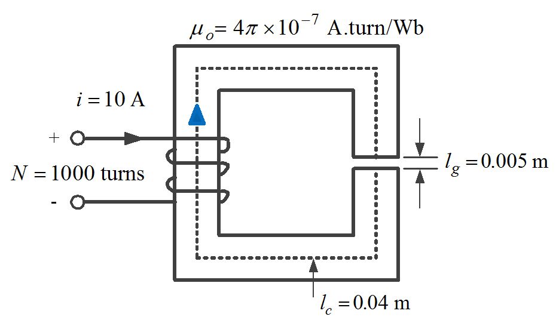
- 1 : 0.176 H
- 2 : 0.318 H
- 3 : 0.425 H
- 4 : 0.623 H
- คำตอบที่ถูกต้อง : 4
ข้อที่ 8 :
- แกน
เหล็กมีความยาวเฉลี่ย 1.60 m พื้นที่หน้าตัด 0.01 sq.m
ถ้าขาด้านซ้ายของแกนเหล็กมีขดลวดพันจำนวน 200 turns
และมีค่าความซึมซาบแม่เหล็กสัมพัทธ์ (relative permeability) เท่ากับ 2500
จงหาค่าความต้านทานแม่เหล็ก (magnetic reluctance) ของแกนเหล็ก
เมื่อ
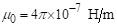
- 1 : 44,300 A.turn/Wb
- 2 : 60,510 A.turn/Wb
- 3 : 71,000 A.turn/Wb
- 4 : 50,955 A.turn/Wb
- คำตอบที่ถูกต้อง : 4
ข้อที่ 9 :
- วงจร แม่เหล็ก (magnetic circuit) วงจรหนึ่งมีค่าค่าความต้านทานแม่เหล็ก (magnetic reluctance) เท่ากับ 50,955 A.turn/Wb กำหนดให้วงจรแม่เหล็กมีขดลวดเท่ากับ 200 turns มีกระแสไฟฟ้าไหล 1 A และมีค่าความซึมซาบแม่เหล็กสัมพัทธ์ (relative permeability) เท่ากับ 2500 จงหาค่าเส้นแรงแม่เหล็กในแกนเหล็ก
- 1 : 4.8 mWb
- 2 : 2.6 mWb
- 3 : 3.9 mWb
- 4 : 5.7 mWb
- คำตอบที่ถูกต้อง : 3
ข้อที่ 10 :
- ตัวแปรใด ที่ไม่มีผลต่อการเปลี่ยนแปลงของค่าความเหนี่ยวนำ (inductance) ในวงจรแม่เหล็ก
- 1 : จำนวนรอบของขดลวด
- 2 : ความยาวเฉลี่ยของแกนเหล็ก
- 3 : พื้นที่หน้าตัดของแกนเหล็ก
- 4 : ไม่มีคำตอบที่ถูกต้อง
- คำตอบที่ถูกต้อง : 4
ข้อที่ 11 :
- การแก้ปัญหาความสูญเสียเนื่องจากกระแสวน (eddy current loss) ทำได้อย่างไร
- 1 : ใช้งานแกนเหล็กที่ความถี่สูงมากๆ
- 2 : ใช้แผ่นเหล็กบาง ๆ เคลือบวานิชแล้วอัดขึ้นเป็นแกน
- 3 : ใช้แผ่นเหล็กที่มีค่าความซึมซาบแม่เหล็กสัมพัทธ์ (relative permeability) น้อยๆ เป็นแกน
- 4 : ใช้แท่งเหล็ก (solid iron) ทำเป็นแกน
- คำตอบที่ถูกต้อง : 2
ข้อที่ 12 :
- ขด
ลวดแกนอากาศขดหนึ่งมี 5 turns เมื่อมีกระแสไฟฟ้าไหลผ่าน 2.5 A
เกิดเส้นแรงแม่เหล็กภายในขดลวด 0.1 Wb ความเหนี่ยวนำ
(inductance) ของขดลวดมีค่าเท่าใด
- 1 : 12.5 H
- 2 : 0.5 H
- 3 : 0.3 H
- 4 : 0.2 H
- คำตอบที่ถูกต้อง : 4
ข้อที่ 13 :
- วงจร แม่เหล็กหนึ่งมีค่าความต้านทานแม่เหล็ก (magnetic reluctance) 1500 A.turn/Wb ประกอบด้วยขดลวดพันอยู่จำนวน 200 turns ถ้าขดลวดนี้ได้รับกระแสไฟฟ้า 3 A จากแบตเตอรี่ 24 V จงหาค่าเส้นแรงแม่เหล็กที่ไหลอยู่ในวงจรแม่เหล็ก และค่าความต้านทานของขดลวด
- 1 : 0.2 Wb, 4 ohm
- 2 : 0.4 Wb, 4 ohm
- 3 : 0.2 Wb, 8 ohm
- 4 : 0.4 Wb, 8 ohm
- คำตอบที่ถูกต้อง : 4
ข้อที่ 14 :
- กำหนด ให้ เครื่องจักรกลไฟฟ้ามีค่าความสูญเสียเนื่องจากกระแสวน (eddy current loss) 642 W ขณะทำงานที่ค่าแรงดันไฟฟ้า และความถี่ไฟฟ้าที่พิกัด 240 V และ 25 Hz ตามลำดับ ถ้าเปลี่ยนสภาพการทำงานโดยใช้ความถี่ไฟฟ้า 60 Hz และแรงดันไฟฟ้าซึ่งทำให้เกิดค่าความหนาแน่นของเส้นแรงแม่เหล็กเป็น 62% ของค่าพิกัด จงหาค่ากำลังสูญเสียจากกระแสไหลวน
- 1 : 12.4 kW
- 2 : 1.42 kW
- 3 : 14.2 kW
- 4 : 1.24 kW
- คำตอบที่ถูกต้อง : 2
ข้อที่ 15 :
- วงจร แม่เหล็กวงจรหนึ่ง มีขดลวด 2 ชุด พันอยู่รอบแกนเหล็ก ถ้าขดลวดชุดที่ 1 มีขดลวดพันอยู่จำนวน 100 turns ส่วนขดลวดชุดที่ 2 มีขดลวดพันอยู่จำนวน 200 รอบ และแกนเหล็กมีค่าความต้านทานแม่เหล็ก (magnetic reluctance) เท่ากับ 10,000,000 A.turn/Wb ค่าความเหนี่ยวนำร่วม (mutual inductance: M) ของขดลวดสองขดนี้มีค่าเท่ากับเท่าใด
- 1 : 1 mH
- 2 : 4 mH
- 3 : 2 mH
- 4 : 3 mH
- คำตอบที่ถูกต้อง : 3
ข้อที่ 16 :
- เหตุใด แกนเหล็กของอาร์มาเจอร์ (armature core) ใน DC machine จึงต้องเป็นแท่งอัดจากแผ่นเหล็กบางอาบฉนวน
- 1 : เพื่อลดความสูญเสียในขดลวดอาเมเจอร์ (armature copper loss)
- 2 : เพื่อระบายความร้อนในแกนเหล็ก
- 3 : เพื่อเพิ่มหน้าสัมผัสของแปรงถ่าน
- 4 : เพื่อลดความสูญเสียเนื่องจากกระแสวน (eddy current loss)
- คำตอบที่ถูกต้อง : 4
ข้อที่ 17 :
- เมื่อ
กระตุ้นแกนเหล็กด้วยแรงเคลื่อนแม่เหล็ก (magnetomotive force: MMF)
กับวัสดุแม่เหล็กชนิดเฟอร์โร (ferromagnetic material)
ปรากฏว่าความสัมพันธ์ระหว่างค่าเส้นแรงแม่เหล็ก (magnetic flux)
กับความเข้มสนามแม่เหล็ก (magnetic field intensity) ในช่วงเพิ่ม
และลดแรงเคลื่อนสนามแม่เหล็กมีค่าไม่เท่ากัน
ปรากฏการณ์นี้ตรงกับตัวเลือกในข้อใด
- 1 : Magnetization
- 2 : Saturation region
- 3 : Magnetic moment
- 4 : Hyteresis
- คำตอบที่ถูกต้อง : 4
ข้อที่ 18 :
- แรงดัน (voltage) ในวงจรไฟฟ้าเปรียบเหมือนข้อใดในวงจรแม่เหล็ก
- 1 : Magnetic reluctance
- 2 : Magnetic flux
- 3 : Magnetomotive force
- 4 : Magnetic flux density
- คำตอบที่ถูกต้อง : 3
ข้อที่ 19 :
- ความหนาแน่นกระแส (current density) ในวงจรไฟฟ้าเปรียบเหมือนข้อใดในวงจรแม่เหล็ก
- 1 : Magnetic reluctance
- 2 : Magnetic flux density
- 3 : Permeability
- 4 : Magnetic field intensity
- คำตอบที่ถูกต้อง : 2
ข้อที่ 20 :
- จงคำนวณหาค่าความเหนี่ยวนำของขดลวด เมื่อวงจรแม่เหล็กมีรายละเอียดดังนี้
พื้นที่หน้าตัดของแกนเหล็ก (core cross-section area) เท่ากับ 0.0025 sq.m
ความยาวเฉลื่ยของวงจรแม่เหล็ก เท่ากับ 1.6 m
ความหนาแน่นเส้นแรงแม่เหล็ก เท่ากับ 1.6 T
ขดลวดที่วงจรแม่เหล็ก เท่ากับ 250 turns
กระแสไฟฟ้าที่ไหลผ่านขดลวดเท่ากับ 6 A
- 1 : 83.33 mH
- 2 : 166.67 mH
- 3 : 16.67 mH
- 4 : 8.333 mH
- คำตอบที่ถูกต้อง : 2
ข้อที่ 21 :
- ข้อใดทำให้ฟลักซ์รั่ว (leakage flux) ของวงจรแม่เหล็กเพิ่มขึ้นได้
- 1 : โครงสร้างแม่เหล็กทำงานในช่วงอิ่มตัว
- 2 : วงจรแม่เหล็กทำงานในช่วงก่อนเข้าสู่ภาวะอิ่มตัวเป็นเวลา 60 s
- 3 : โครงสร้างแม่เหล็กทำงานในช่วงเชิงเส้น
- 4 : วงจรแม่เหล็กทำงานในช่วงที่ความซึมซาบแม่เหล็กสัมพัทธ์ (relative permeability) มีค่าสูง
- คำตอบที่ถูกต้อง : 1
ข้อที่ 22 :
- วัสดุแม่เหล็กชนิด Ferromagnetic material ควรมีคุณสมบัติตรงกับข้อใด
- 1 : ความซึมซาบแม่เหล็กสัมพัทธ์ (relative permeability) มีค่าสูงมาก
- 2 : ความซึมซาบแม่เหล็กสัมพัทธ์ (relative permeability) มีค่าเท่ากับ 1
- 3 : ความซึมซาบแม่เหล็กสัมพัทธ์ (relative permeability) มีค่าน้อยกว่า 1
- 4 : ความซึมซาบแม่เหล็กสัมพัทธ์ (relative permeability) มีค่ามากกว่า 1 เล็กน้อย
- คำตอบที่ถูกต้อง : 1
ข้อที่ 23 :
- อากาศ (air) จัดเป็นวัสดุแม่เหล็กประเภทใด
- 1 : Ferromagnetic material
- 2 : Diamagnetic material
- 3 : Paramagnetic material
- 4 : Amorphous material
- คำตอบที่ถูกต้อง : 3
ข้อที่ 24 :
- นิยามของตัวเหนี่ยวนำ (inductor) คือข้อใด
- 1 : อัตราการเปลี่ยนแปลงของกระแสไฟฟ้าต่อเวลา
- 2 : อัตราการเปลี่ยนแปลงของเส้นแรงแม่เหล็กต่อเวลา
- 3 : ค่าเส้นแรงแม่เหล็กทั้งหมดที่เกี่ยวคล้องในขดลวดหารด้วยกระแสไฟฟ้า
- 4 : จำนวนรอบของขดลวดคูณกับอัตราการเปลี่ยนแปลงของเส้นแรงแม่เหล็กต่อเวลา
- คำตอบที่ถูกต้อง : 3
ข้อที่ 25 :
- กำหนด
ให้มีกระแสไฟฟ้าขนาด 2 A ไหลในขดลวดทำให้เกิดการกระจายสนามแม่เหล็กดังรูป
โดยที่ แต่ละเส้นแสดงถึงค่าเส้นแรงแม่เหล็กเท่ากับ 4 mWb
ให้คำนวณหาค่าความเหนี่ยวนำ (inductance) ที่เกิดขึ้นของขดลวดนี้
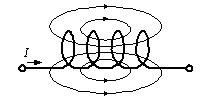
- 1 : 0.036 H
- 2 : 0.024 H
- 3 : 0.012 H
- 4 : 0.006 H
- คำตอบที่ถูกต้อง : 2
ข้อที่ 26 :
- วงจร
แม่เหล็กวงจรหนึ่ง มีขดลวด 2 ชุด พันอยู่รอบแกนเหล็ก ถ้าขดลวดชุดที่ 1
มีขดลวดพันอยู่จำนวน 100 turns ส่วนขดลวดชุดที่ 2 มีขดลวดพันอยู่จำนวน 500
turns และแกนเหล็กมีค่าความต้านทานแม่เหล็ก (magnetic reluctance) เท่ากับ
7,960,000 A.turn/Wb ให้คำนวณหาค่าความเหนี่ยวนำร่วม (mutual inductance:
M) ของขดลวดชุดที่ 1 ที่ถูกกระทำโดยขดลวดชุดที่ 2
- 1 : 0.0063 H
- 2 : 0.0126 H
- 3 : 0.00315 H
- 4 : 0.0152 H
- คำตอบที่ถูกต้อง : 1
ข้อที่ 27 :
- วงจร แม่เหล็ก (magnetic circuit) วงจรหนึ่งมีช่องอากาศ (air gap) 1 ช่อง ถ้าเพิ่มช่องอากาศให้มีค่าเพิ่มขึ้น เป็น 2 เท่า ค่าความเหนี่ยวนำตัวเอง (self-inductance) มีค่าเป็นอย่างไร
- 1 : เพิ่มขึ้นเป็น 2 เท่า
- 2 : เพิ่มขึ้นเป็น 4 เท่า
- 3 : ลดลงเป็น 1/2 เท่า
- 4 : ลดลงเป็น 1/4 เท่า
- คำตอบที่ถูกต้อง : 3
ข้อที่ 28 :
- วงจร แม่เหล็กวงจรหนึ่งมีขดลวดจำนวน 200 turns ต่ออยู่กับแหล่งจ่ายแรงดันไฟฟ้ากระแสสลับ 220 V, 50 Hz ถ้าจำนวนรอบของขดลวดเพิ่มขึ้นเป็น 2 เท่า จะต้องปรับให้ค่าของแรงดันไฟฟ้าที่แหล่งจ่ายมีค่าเท่ากับเท่าใด เพื่อให้ค่าความหนาแน่นเส้นแรงแม่เหล็ก (magnetic flux density: B) ยังคงเท่าเดิม
- 1 : 110 V
- 2 : 220 V
- 3 : 440 V
- 4 : 550 V
- คำตอบที่ถูกต้อง : 3
ข้อที่ 29 :
- วงจร แม่เหล็กวงจรหนึ่งมีแรงเคลื่อนแม่เหล็ก (magnetomotive force) เท่ากับ 1000 A.turn มีค่าความต้านทานแม่เหล็ก (magnetic reluctance) ของวงจรแม่เหล็ก เท่ากับ 50,000 A.turn/Wb จงหาค่าของเส้นแรงแม่เหล็ก (magnetic flux) ในแกนเหล็ก
- 1 : 0.02 Wb
- 2 : 0.02 mWb
- 3 : 2 Wb
- 4 : 50 Wb
- คำตอบที่ถูกต้อง : 1
ข้อที่ 30 :
- ตัว เหนี่ยวนำมีขดลวดจำนวน 10 turns พันบนแกนเหล็กรูปวงแหวน (toroidal core) มีพื้นที่หน้าตัดเท่ากับ 100 sq.mm ความยาวเฉลี่ยของวงจรแม่เหล็กเท่ากับ 0.1 m กำหนดให้ค่าความซึมซาบแม่เหล็กสัมพัทธ์ (relative permeability) เท่ากับ 5000 จงคำนวณหาค่าความหนาแน่นเส้นแรงแม่เหล็ก (magnetic flux density: B) ของแกนเหล็ก เมื่อมีกระแสไฟฟ้าขนาด 1 A ไหลผ่านตัวเหนี่ยวนำนี้ และ
.jpg){kind=link}
- 1 : 0.121 T
- 2 : 0.358 T
- 3 : 0.628 T
- 4 : 1.12 T
- คำตอบที่ถูกต้อง : 3
ข้อที่ 31 :
- ตัว เหนี่ยวนำขนาด 10 mH โดยเป็นแกนเหล็กรูปวงแหวน (toroidal core) มีพื้นที่หน้าตัดเท่ากับ 100 sq.mm ความยาวเฉลี่ยของวงจรแม่เหล็กเท่ากับ 0.1 m จงคำนวณหาจำนวนรอบของขดลวดที่พันบนแกนเหล็กรูปวงแหวน เมื่อกำหนดให้ค่าความซึมซาบแม่เหล็กสัมพัทธ์ (relative permeability) เท่ากับ 5000 และ
- 1 : 40 รอบ
- 2 : 105 รอบ
- 3 : 129 รอบ
- 4 : 157 รอบ
- คำตอบที่ถูกต้อง : 1
ข้อที่ 32 :
- เมื่อ นำวัสดุแม่เหล็กแบบ Soft steel เข้าใกล้แม่เหล็กปรากฎว่าวัสดุแม่เหล็กมีความเป็นแม่เหล็กเกิดขึ้นเราเรียก ปรากฎการณ์นี้ว่าอะไร
- 1 : การเหนี่ยวนำแม่เหล็ก
- 2 : แม่เหล็กถาวร
- 3 : ความเป็นแม่เหล็กคงค้าง
- 4 : แม่เหล็กไฟฟ้า
- คำตอบที่ถูกต้อง : 1
ข้อที่ 33 :
- วัสดุในข้อใด เป็นวัสดุแม่เหล็กแบบ Paramagnetic material
- 1 : เหล็ก (steel)
- 2 : นิเกิล (nickel)
- 3 : โคบอล (cobalt)
- 4 : อากาศ (air)
- คำตอบที่ถูกต้อง : 4
ข้อที่ 34 :
- ข้อใดส่งผลต่อ ทิศทางของเส้นแรงแม่เหล็ก (magnetic flux) ที่เกิดขึ้นรอบตัวนำ (conductor)
- 1 : ทิศทางการไหลของกระแสไฟฟ้า
- 2 : ขนาดแรงดันไฟฟ้าที่ป้อน
- 3 : ขนาดกระแสไฟฟ้า
- 4 : ชนิดของวัสดุตัวนำ
- คำตอบที่ถูกต้อง : 1
ข้อที่ 35 :
- การหาขั้วแม่เหล็กของขดลวด พิจารณาได้จากข้อใด
- 1 : ขนาดแรงดันไฟฟ้า
- 2 : ขนาดกระแสไฟฟ้า
- 3 : จำนวนรอบ
- 4 : ทิศทางการไหลของกระแสไฟฟ้า
- คำตอบที่ถูกต้อง : 4
ข้อที่ 36 :
- แรงเคลื่อนแม่เหล็ก (magnetomotive force) ของขดลวด ขึ้นอยู่กับตัวเลือกในข้อใด
- 1 : ทิศทางกระแสไฟฟ้า
- 2 : กฎมือซ้าย
- 3 : ทิศทางเส้นแรง
- 4 : ขนาดกระแสไฟฟ้า
- คำตอบที่ถูกต้อง : 4
ข้อที่ 37 :
- เมื่อขดลวดพันบนแกนอากาศ 20 turns มีกระแสไฟฟ้าไหลผ่าน 2 A จะต้องทำอย่างไร ถ้าต้องการให้แรงเคลื่อนแม่เหล็กเพิ่มขึ้น
- 1 : เพิ่มจำนวนรอบ
- 2 : ลดจำนวนรอบ
- 3 : ลดกระแสไฟฟ้า
- 4 : กลับทิศทางการไหลของกระแสไฟฟ้า
- คำตอบที่ถูกต้อง : 1
ข้อที่ 38 :
- วงจร แม่เหล็ก (magnetic circuit) วงจรหนึ่ง มีขดลวด 200 turns พันรอบแกนเหล็กที่มีค่าความซึมซาบแม่เหล็กสัมพัทธ์ (relative permeability) เท่ากับ 2500 มีพื้นที่หน้าตัดเท่ากับ 0.015 sq.m ความยาวเฉลี่ยของวงจรแม่เหล็กเท่ากับ 1.8 m เมื่อกระแสไฟฟ้าไหลในขดลวดมีค่าเท่ากับ 1 A อยากทราบค่าความต้านทานแม่เหล็ก (magnetic reluctance) ของวงจรแม่เหล็กนี้มีค่าเท่าใด
- 1 : 38,217 A.turn/Wb
- 2 : 27,638 A.turn/Wb
- 3 : 42,478 A.turn/Wb
- 4 : 21,023 A.turn/Wb
- คำตอบที่ถูกต้อง : 1
ข้อที่ 39 :
- ขด ลวดพันบนแกนอากาศ 50 turns มีกระแสไฟฟ้าไหลผ่าน 2 A จะต้องทำอย่างไร ถ้าต้องการให้แรงเคลื่อนแม่เหล็ก (magnetomotive force) เพิ่มขึ้น
- 1 : กลับทิศทางการพันขดลวด
- 2 : ลดจำนวนรอบ
- 3 : เพิ่มกระแสไฟฟ้า
- 4 : กลับทิศทางการไหลของกระแสไฟฟ้า
- คำตอบที่ถูกต้อง : 3
ข้อที่ 40 :
- ขด ลวดพันบนแกนอากาศ 100 turns มีกระแสไฟฟ้าไหลผ่าน 5 A จะต้องทำอย่างไร ถ้าต้องการให้แรงเคลื่อนแม่เหล็ก (magnetomotive force) ลดลงเหลือครึ่งหนึ่งจากค่าเดิม จะต้องทำอย่างไร
- 1 : เพิ่มจำนวนรอบเป็น 200 รอบ และกระแสไฟฟ้าเท่าเดิม
- 2 : ลดจำนวนรอบเหลือ 50 รอบ และกระแสไฟฟ้าเท่าเดิม
- 3 : เพิ่มกระแสไฟฟ้าเป็น 10 A และจำนวนรอบเท่าเดิม
- 4 : ลดกระแสไฟฟ้าเหลือ 2 A และเพิ่มจำนวนรอบเป็น 150 รอบ
- คำตอบที่ถูกต้อง : 2
ข้อที่ 41 :
- วงจร แม่เหล็กวงจรหนึ่ง มีขดลวด 100 turns พันรอบแกนเหล็ก ถ้ามีกระแสไฟฟ้าขนาด 5 A ไหลผ่านขดลวด ถ้าต้องการให้แรงเคลื่อนแม่เหล็ก (magnetomotive force) เพิ่มขึ้นเป็นสองเท่า ข้อใดถูกต้อง
- 1 : เพิ่มจำนวนรอบเป็น 200 turns และกระแสไฟฟ้าเท่าเดิม
- 2 : ลดจำนวนรอบเป็น 50 turns และกระแสไฟฟ้าเท่าเดิม
- 3 : ลดจำนวนรอบเป็น 50 turns และลดกระแสไฟฟ้าเป็น 2.5 A
- 4 : เพิ่มจำนวนรอบเป็น 200 turns และเพิ่มกระแสไฟฟ้าเป็น 10 A
- คำตอบที่ถูกต้อง : 1
ข้อที่ 42 :
- วงจร แม่เหล็ก (magnetic circuit) มีทางเดินของเส้นแรงแม่เหล็ก (magnetic flux) ความยาวเฉลี่ยเท่ากับ 1.2567 m พื้นที่หน้าตัด 0.001 sq.m อยากทราบว่าค่าความต้านทานแม่เหล็ก (magnetic reluctance) ของวงจรแม่เหล็ก มีค่าเท่าใด เมื่อกำหนดให้ค่าความซึมซาบแม่เหล็กสัมพัทธ์ (relative permeability) เท่ากับ 5000 และ
- 1 : 120,000 A.turn/Wb
- 2 : 100,000 A.turn/Wb
- 3 : 150,000 A.turn/Wb
- 4 : 200,000 A.turn/Wb
- คำตอบที่ถูกต้อง : 4
ข้อที่ 43 :
- วัสดุ แม่เหล็กชนิด Cast iron ที่ค่าความหนาแน่นเส้นแรงแม่เหล็ก (magnetic flux density) เท่ากับ 0.5 T มีค่าความเข้มสนามแม่เหล็ก 1000 A.turn/m วัสดุแม่เหล็กมีค่าความซึมซาบแม่เหล็ก (permeability) เท่าใด
- 1 : 500 H/m
- 2 : 1.0 H/m
- 3 : 0.001 H/m
- 4 : 0.0005 H/m
- คำตอบที่ถูกต้อง : 4
ข้อที่ 44 :
- ความสูญเสียในแกนเหล็ก (core loss) ประกอบด้วยอะไรบ้าง
- 1 : Hysteresis loss และ Eddy current loss
- 2 : Hysteresis loss และ Copper loss
- 3 : Eddy current loss และ Copper loss
- 4 : Copper loss และ Stray load loss
- คำตอบที่ถูกต้อง : 1
ข้อที่ 45 :
- วงจร แม่เหล็กหนึ่งมีค่าความต้านทานแม่เหล็ก (magnetic reluctance) เท่ากับ 1500 A.turn/wb ประกอบด้วยขดลวดพันอยู่จำนวน 200 turns ถ้าขดลวดถูกป้อนจากแบตเตอรี่ 24 V มีกระแสป้อนเข้าในสภาวะคงตัวเท่ากับ 3 A จงหาค่ากำลังที่สูญเสียในแกนเหล็ก (core loss) มีค่าเท่าใด
- 1 : 0 W
- 2 : 36 W
- 3 : 72 W
- 4 : 576 W
- คำตอบที่ถูกต้อง : 1
ข้อที่ 46 :
- วงจร แม่เหล็กหนึ่งมีค่าความต้านทานแม่เหล็ก (magnetic reluctance) เท่ากับ 1500 A.turn/wb ประกอบด้วยขดลวดพันอยู่จำนวน 200 turns ถ้าขดลวดถูกป้อนจากแบตเตอรี่ 24 V มีกระแสป้อนเข้าในสภาวะคงตัวเท่ากับ 3 A จงหาค่ากำลังที่สูญเสียในขดลวด (copper loss) มีค่าเท่าใด
- 1 : 0 W
- 2 : 36 W
- 3 : 72 W
- 4 : 576 W
- คำตอบที่ถูกต้อง : 3
ข้อที่ 47 :
- ความต้านทานไฟฟ้า (resistance) ในวงจรไฟฟ้าเปรียบเหมือนข้อใดในวงจรแม่เหล็ก
- 1 : Magnetic reluctance
- 2 : Magnetic flux
- 3 : Permeability
- 4 : Magnetic field intensity
- คำตอบที่ถูกต้อง : 1
ข้อที่ 48 :
- ถ้าลดจำนวนรอบของขดลวดลงครึ่งหนึ่ง จะทำให้ค่าความเหนี่ยวนำ (inductance) มีค่าตรงกับข้อใด
- 1 : ความเหนี่ยวนำลดลง 2 เท่า
- 2 : ความเหนี่ยวนำลดลง 4 เท่า
- 3 : ความเหนี่ยวนำเพิ่มขึ้น 2 เท่า
- 4 : ความเหนี่ยวนำเพิ่มขึ้น 4 เท่า
- คำตอบที่ถูกต้อง : 2
ข้อที่ 49 :
- ถ้าเพิ่มจำนวนรอบของขดลวดขึ้นสองเท่า จะทำให้ค่าความเหนี่ยวนำ (inductance) มีค่าตรงกับข้อใด
- 1 : ความเหนี่ยวนำลดลง 2 เท่า
- 2 : ความเหนี่ยวนำลดลง 4 เท่า
- 3 : ความเหนี่ยวนำเพิ่มขึ้น 2 เท่า
- 4 : ความเหนี่ยวนำเพิ่มขึ้น 4 เท่า
- คำตอบที่ถูกต้อง : 4
ข้อที่ 50 :
- ถ้าเพิ่มความกว้างของช่องอากาศ (air gap) ของวงจรแม่เหล็กเป็น 3 เท่า โดยค่ากระแสไฟฟ้าไหลในขดลวดคงที่ ความเหนี่ยวนำมีค่าเป็นอย่างไร
- 1 : ค่าความเหนี่ยวนำลดลง 3 เท่า
- 2 : ค่าความเหนี่ยวนำเพิ่มขึ้น 3 เท่า
- 3 : ค่าความเหนี่ยวนำลดลง 9 เท่า
- 4 : ค่าความเหนี่ยวนำเพิ่มขึ้น 9 เท่า
- คำตอบที่ถูกต้อง : 1
ข้อที่ 51 :
- ถ้าเพิ่มความกว้างของช่องอากาศ (air gap) ของวงจรแม่เหล็ก โดยกระแสไฟฟ้าที่ไหลในขดลวดมีค่าคงที่ ข้อใดถูกต้อง
- 1 : ค่าความต้านทานแม่เหล็กมีค่าลดลง
- 2 : ค่าความเหนี่ยวนำเพิ่มขึ้น
- 3 : ค่าพลังงานที่สะสมในรูปสนามแม่เหล็กมีค่ามากขึ้น
- 4 : ค่าพลังงานที่สะสมในรูปสนามแม่เหล็กมีค่าลดลง
- คำตอบที่ถูกต้อง : 4
ข้อที่ 52 :
- ถ้า เพิ่มความกว้างของช่องอากาศ (air gap) ของวงจรแม่เหล็ก โดยที่ความหนาแน่นสนามแม่เหล็ก (magnetic flux density) มีค่าคงที่ ข้อใดถูกต้อง
- 1 : ค่าความเหนี่ยวนำเพิ่มขึ้น
- 2 : ค่าพลังงานที่สะสมในรูปสนามแม่เหล็กมีค่ามากขึ้น
- 3 : ค่าพลังงานที่สะสมในรูปสนามแม่เหล็กมีค่าลดลง
- 4 : ค่าความต้านทานแม่เหล็กมีค่าลดลง
- คำตอบที่ถูกต้อง : 3
ข้อที่ 53 :
- วงจร แม่เหล็ก วงจรหนึ่งมีค่าความเหนี่ยวนำ (inductance) เท่ากับ 0.01 H ถ้าเพิ่มจำนวนรอบของขดลวดขึ้นสามเท่า ความเหนี่ยวนำ (inductance) ของวงจรแม่เหล็กมีค่าเท่าใด
- 1 : 0.013 H
- 2 : 0.03 H
- 3 : 0.06 H
- 4 : 0.09 H
- คำตอบที่ถูกต้อง : 4
เนื้อหาวิชา : 36 : Principles of electromagnetic and electromechanical energy conversion
ข้อที่ 54 :
- จาก Lorentzs force law จงคำนวณหาแรงแม่เหล็ก (magnetic force) ที่เกิดบนลวดตัวนำที่มีความยาว 0.2 m โดยมีกระแสไฟฟ้าไหลผ่านเท่ากับ 10 A ภายใต้ความหนาแน่นเส้นแรงแม่เหล็ก (magnetic flux density) เท่ากับ 0.2 T ในทิศทางตั้งฉาก มีค่าเท่าใด
- 1 : 0.2 N
- 2 : 0.4 N
- 3 : 1.0 N
- 4 : 2.0 N
- คำตอบที่ถูกต้อง : 2
ข้อที่ 55 :
- ถ้า ต้องการให้ลวดตัวนำความยาว 0.5 m สร้างแรงดันไฟฟ้าขนาด 3 V โดยการตัดผ่านสนามแม่เหล็กที่มีความหนาแน่นเส้นแรงแม่เหล็ก (magnetic flux density) เท่ากับ 1.2 T ในทิศตั้งฉาก จงหาค่าความเร็วในการเคลื่อนที่ของลวดตัวนำนี้ มีค่าเท่าใด
- 1 : 3 m/s
- 2 : 5 m/s
- 3 : 0.2 m/s
- 4 : 0.3 m/s
- คำตอบที่ถูกต้อง : 2
ข้อที่ 56 :
- ถ้า ต้องการให้ลวดตัวนำสร้างแรงดันไฟฟ้าขนาด 2.5 V โดยการตัดผ่านสนามแม่เหล็กที่มีความหนาแน่นเส้นแรงแม่เหล็ก (magnetic flux density) 1.2 T ในทิศตั้งฉากด้วยความเร็ว 8 m/s จงหาค่าความยาวของลวดตัวนำ มีค่าเท่าใด
- 1 : 0.43 m
- 2 : 0.52 m
- 3 : 0.26 m
- 4 : 0.32 m
- คำตอบที่ถูกต้อง : 3
ข้อที่ 57 :
- สมการ
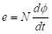
เป็นสมการที่ได้มาจากกฎในข้อใด เมื่อ e เป็นแรงเคลื่อนไฟฟ้าเหนี่ยวนำ, N เป็นจำนวนรอบของขดลวด เป็นเส้นแรงแม่เหล็ก และ t เป็นเวลา
- 1 : กฏของเลนส์
- 2 : กฏของฟาราเดย์
- 3 : กฏของเทสลา
- 4 : กฏของเมอร์ฟี่
- คำตอบที่ถูกต้อง : 2
ข้อที่ 58 :
- เส้น ลวดยาว 0.1 m วางในแนวราบขนานกับแกน X เคลื่อนที่ในแนวแกน Y ด้วยความเร็ว 1 m/s ผ่านบริเวณที่มีสนามแม่เหล็กกระจายสม่ำเสมอด้วยความหนาแน่นเส้นแรงแม่เหล็ก (magnetic flux density) 0.5 T ชี้ในแนวแกน Z จงคำนวณหาแรงเคลื่อนไฟฟ้าเหนี่ยวนำ (electromotive force) ที่เกิดขี้นบนเส้นลวด มีค่าเท่าใด
- 1 : 0.05 V
- 2 : 0.1 V
- 3 : 1 V
- 4 : 2 V
- คำตอบที่ถูกต้อง : 1
ข้อที่ 59 :
- จาก หลักการของสนามแม่เหล็กไฟฟ้า หากป้อนกระแสไฟฟ้าให้กับขดลวดที่วางอยู่ภายใต้ สนามแม่เหล็กที่กระจายสม่ำเสมอ จะทำให้เกิดแรงบิด (torque) หรือแรงเคลื่อนไฟฟ้าเหนี่ยวนำ (electromotive force) และเป็นหลักการของเครื่องจักรไฟฟ้าประเภทใด
- 1 : แรงเคลื่อนไฟฟ้าเหนี่ยวนำ, มอเตอร์
- 2 : แรงเคลื่อนไฟฟ้าเหนี่ยวนำ, เครื่องกำเนิดไฟฟ้า
- 3 : แรงบิด, มอเตอร์
- 4 : แรงบิด, เครื่องกำเนิดไฟฟ้า
- คำตอบที่ถูกต้อง : 3
ข้อที่ 60 :
- หลัก การของเครื่องจักรกลไฟฟ้า จะมีสนามแม่เหล็กที่เกิดจากสเตเตอร์และสนามแม่เหล็กที่เกิดจากโรเตอร์ หากสนามแม่เหล็กของสเตเตอร์หมุนในทิศทางทวนเข็มนาฬิกา ขณะที่เครื่องจักรกลไฟฟ้ากำลังทำงานเป็นมอเตอร์ จงหาทิศทางของสนามแม่เหล็กที่เกิดจากโรเตอร์ และทิศของแรงบิดทางกลที่เกิดจากมอเตอร์
- 1 : ทั้งสนามแม่เหล็กโรเตอร์และทิศของแรงบิด หมุนทวนเข็มนาฬิกา
- 2 : ทั้งสนามแม่เหล็กโรเตอร์และทิศของแรงบิดหมุนตามเข็มนาฬิกา
- 3 : สนามแม่เหล็กโรเตอร์หมุนตามเข็มนาฬิกา แต่ทิศของแรงบิดหมุนทวนเข็มนาฬิกา
- 4 : สนามแม่เหล็กโรเตอร์หมุนทวนเข็มนาฬิกา แต่ทิศของแรงบิดหมุนตามเข็มนาฬิกา
- คำตอบที่ถูกต้อง : 1
ข้อที่ 61 :
- หลัก การของเครื่องจักรกลไฟฟ้า จะมีสนามแม่เหล็กที่เกิดจากสเตเตอร์และสนามแม่เหล็กที่เกิดจากโรเตอร์ หากสนามแม่เหล็กของสเตเตอร์หมุนในทิศทางทวนเข็มนาฬิกา ขณะที่เครื่องจักรกลไฟฟ้ากำลังทำงานเป็นเครื่องกำเนิดไฟฟ้า จงหาทิศทางของสนามแม่เหล็กที่เกิดจากโรเตอร์ และทิศของแรงบิดที่เกิดจากสนามแม่เหล็ก
- 1 : ทั้งสนามแม่เหล็กโรเตอร์และทิศทางของแรงบิดหมุนทวนเข็ม
- 2 : ทั้งสนามแม่เหล็กโรเตอร์และทิศทางของแรงบิดหมุนตามเข็ม
- 3 : สนามแม่เหล็กโรเตอร์หมุนตามเข็ม แต่ทิศทางของแรงบิดหมุนทวนเข็ม
- 4 : สนามแม่เหล็กโรเตอร์หมุนทวนเข็ม แต่ทิศทางของแรงบิดหมุนตามเข็ม
- คำตอบที่ถูกต้อง : 4
ข้อที่ 62 :
- จาก หลักการของสนามแม่เหล็กไฟฟ้า เมื่อหมุนขดลวดที่วางอยู่ภายใต้สนามแม่เหล็กที่กระจายสม่ำเสมอ จะทำให้เกิดแรงบิด (torque) หรือแรงเคลื่อนไฟฟ้าเหนี่ยวนำ (electromotive force) และเป็นหลักการของเครื่องจักรไฟฟ้าประเภทใด
- 1 : แรงเคลื่อนไฟฟ้าเหนี่ยวนำ, มอเตอร์
- 2 : แรงเคลื่อนไฟฟ้าเหนี่ยวนำ, เครื่องกำเนิดไฟฟ้า
- 3 : แรงบิด, มอเตอร์
- 4 : แรงบิด, เครื่องกำเนิดไฟฟ้า
- คำตอบที่ถูกต้อง : 2
ข้อที่ 63 :
- มอเตอร์ เหนี่ยวนำสามเฟสที่มีจำนวนขั้วเท่ากับ 6 poles ใช้กับไฟความถี่ 50 Hz และมีค่าสลิป (slip) ในขณะที่พิจารณาเท่ากับ 4% ความเร็วของสนามแม่เหล็กหมุนที่เกิดจากสเตเตอร์ และโรเตอร์ มีค่าตรงกับข้อใด
- 1 : ความเร็วของสนามแม่เหล็กหมุน 1500 rpm ความเร็วของโรเตอร์ 1440 rpm
- 2 : ความเร็วของสนามแม่เหล็กหมุน 1200 rpm ความเร็วของโรเตอร์ 1152 rpm
- 3 : ความเร็วของสนามแม่เหล็กหมุน 1000 rpm ความเร็วของโรเตอร์ 960 rpm
- 4 : ความเร็วของสนามแม่เหล็กหมุน 800 rpm ความเร็วของโรเตอร์ 768 rpm
- คำตอบที่ถูกต้อง : 3
ข้อที่ 64 :
- ข้อใด เป็นสมการแสดงความสัมพันธ์ของแรงดันไฟฟ้าเหนี่ยวนำ (induced voltage) ที่เกิดขึ้นบนลวดตัวนำยาว l m ภายใต้สนามแม่เหล็กที่มีค่าความหนาแน่นของเส้นแรงแม่เหล็ก (magnetic flux density) เท่ากับ B T และเคลื่อนที่ด้วยความเร็วสัมพันธ์เท่ากับ u m/s
- 1 : e = Bli
- 2 : e = Bli sin
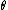
- 3 : e = Blu
- 4 : e = Blu sin
- คำตอบที่ถูกต้อง : 4
ข้อที่ 65 :
- ข้อใด เป็นสมการแสดงความสัมพันธ์ของแรงจากสนามแม่เหล็ก (magnetic force : fd) ที่เกิดขึ้นบนลวดตัวนำยาว l m ภายใต้สนามแม่เหล็กที่มีค่าความหนาแน่นของเส้นแรงแม่เหล็ก (magnetic flux density) เท่ากับ B T และมีกระแสไฟฟ้าไหลในขดลวดเท่ากับ i A
- 1 : fd = Bli
- 2 : fd = Bli sin

- 3 : fd = Blu
- 4 : fd = Blu sin
- คำตอบที่ถูกต้อง : 2
ข้อที่ 66 :
- ลวด ตัวนำความยาว 0.5 m วางตั้งฉากกับสนามแม่เหล็กที่มีการกระจายสม่ำเสมอขนาด 1.2 T เมื่อลวดตัวนำเคลื่อนที่ตัดกับสนามแม่เหล็กด้วยความเร็ว 10 m/s มีแนวทำมุมเท่ากับ 45 องศา ให้หาแรงเคลื่อนไฟฟ้าเหนี่ยวนำที่เกิดขึ้นบนลวดตัวนำมีค่าเท่ากับใด
- 1 : 3.25 V
- 2 : 4.24 V
- 3 : 5.36 V
- 4 : 6.84 V
- คำตอบที่ถูกต้อง : 2
ข้อที่ 67 :
- แรงเคลื่อนไฟฟ้าเหนี่ยวนำ (electromotive force) ในขดลวดอาร์มาเจอร์ ของเครื่องจักรกลไฟฟ้ากระแสตรง (DC machines) มีลักษณะเป็นแบบใด
- 1 : ไฟฟ้ากระแสสลับ
- 2 : ไฟฟ้ากระแสตรง
- 3 : ไฟฟ้ากระแสตรงแบบ Half-wave
- 4 : ไฟฟ้ากระแสตรงแบบ Full-wave
- คำตอบที่ถูกต้อง : 1
เนื้อหาวิชา : 37 : Energy and co-energy
ข้อที่ 68 :
- ขด ลวดที่มีค่าความเหนี่ยวนำเท่ากับ 0.1 H ป้อนเข้าด้วยไฟฟ้ากระแสตรงเท่ากับ 10 A ให้คำนวณหาค่าพลังงานที่สะสมอยู่ในรูปสนามแม่เหล็ก มีค่าเท่าใด
- 1 : 0.5 J
- 2 : 1.0 J
- 3 : 5.0 J
- 4 : 10.0 J
- คำตอบที่ถูกต้อง : 3
ข้อที่ 69 :
- เมื่อ ค่าความเข้มสนามแม่เหล็กของวงจรแม่เหล็กชนิดหนึ่ง ลดลงเหลือครึ่งหนึ่งจากค่าเดิม โดยค่าค่าความซึมซาบแม่เหล็ก (permeability) ยังคงมีค่าเท่าเดิม ค่าความหนาแน่นของพลังงาน (energy density) จะมีค่าเปลี่ยนแปลงไปอย่างไร
- 1 : เพิ่มขึ้นเป็น 2 เท่าของค่าเดิม
- 2 : เพิ่มขึ้นเป็น 4 เท่าของค่าเดิม
- 3 : ลดลงเหลือ 1/2 เท่าของค่าเดิม
- 4 : ลดลงเหลือ 1/4 เท่าของค่าเดิม
- คำตอบที่ถูกต้อง : 4
ข้อที่ 70 :
- วงจร แม่เหล็กวงจรหนึ่ง ขดลวดมีเส้นแรงแม่เหล็กเกี่ยวคล้อง (flux linkage) เท่ากับ 1.25 Wb.turn และขดลวดมีค่าความเหนี่ยวนำตัวเอง (self-inductance) 625 mH ค่าพลังงานสะสมในสนามแม่เหล็ก (magnetic stored energy) มีค่าเท่ากับเท่าใด
- 1 : 125 J
- 2 : 1.25 J
- 3 : 625 J
- 4 : 6.25 J
- คำตอบที่ถูกต้อง : 2
ข้อที่ 71 :
- วงจร แม่เหล็กวงจรหนึ่ง มีเส้นแรงแม่เหล็กเกี่ยวคล้อง (flux linkage) เท่ากับ 2.5 Wb.turn และขดลวดมีค่าความเหนี่ยวนำตัวเอง (self-inductance) 625 mH พลังงานสะสมในสนามแม่เหล็ก (magnetic stored energy) มีค่าเท่าใด
- 1 : 2.5 J
- 2 : 10 J
- 3 : 5 J
- 4 : 6.25 J
- คำตอบที่ถูกต้อง : 3
ข้อที่ 72 :
- วงจร แม่เหล็กวงจรหนึ่ง มีค่าความเหนี่ยวนำตัวเอง (self-inductance) 100 mH เมื่อมีกระแสไฟฟ้าไหลในขดลวดเท่ากับ 2 A พลังงานสะสมในสนามแม่เหล็ก (magnetic stored energy) มีค่าเท่าใด
- 1 : 0.20 J
- 2 : 1.72 J
- 3 : 0.50 J
- 4 : 0.72 J
- คำตอบที่ถูกต้อง : 1
ข้อที่ 73 :
- วงจร แม่เหล็กวงจรหนึ่ง มีค่าความเหนี่ยวนำตัวเอง (self-inductance) 300 mH เมื่อมีกระแสไฟฟ้าไหลในขดลวดเท่ากับ 2 A พลังงานสะสมในสนามแม่เหล็ก (magnetic stored energy) มีค่าเท่าใด
- 1 : 0.60 J
- 2 : 1.72 J
- 3 : 0.53 J
- 4 : 0.72 J
- คำตอบที่ถูกต้อง : 1
ข้อที่ 74 :
- วงจร แม่เหล็กวงจรหนึ่ง มีค่าความเหนี่ยวนำตัวเอง (self-inductance) เท่ากับ 300 mH เมื่อกระแสไฟฟ้าไหลในขดลวดเท่ากับ 6 A ค่าพลังงานแม่เหล็ก (magnetic stored energy) ที่สะสมอยู่ในระบบมีค่าเท่าใด
- 1 : 2.7 J
- 2 : 1.2 J
- 3 : 5.4 J
- 4 : 6.8 J
- คำตอบที่ถูกต้อง : 3
ข้อที่ 75 :
- วงจรแม่เหล็กวงจรหนึ่งขดลวดมีเส้นแรงแม่เหล็กเกี่ยวคล้อง (flux linkage) เท่ากับ
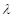
กระแสไหลผ่านขดลวดเท่ากับ และขดลวดมีค่าความเหนี่ยวนำตัวเอง (self-inductance) เท่ากับ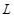
ค่าพลังงานสะสมในสนามแม่เหล็ก (magnetic stored energy) มีค่าเท่าใด
- 1 :
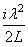
- 2 :
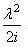
- 3 :
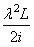
- 4 :
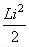
- คำตอบที่ถูกต้อง : 4
ข้อที่ 76 :
- วงจร แม่เหล็กวงจรหนึ่ง มีเส้นแรงแม่เหล็กเกี่ยวคล้อง (flux linkage) เท่ากับ 1.5 Wb.turn และขดลวดมีค่าความเหนี่ยวนำตัวเอง (self-inductance) 625 mH ค่าพลังงานสะสมในสนามแม่เหล็ก (magnetic stored energy) มีค่าเท่าใด
- 1 : 3.6 J
- 2 : 18 J
- 3 : 1.8 J
- 4 : 36 J
- คำตอบที่ถูกต้อง : 3
ข้อที่ 77 :
- เมื่อ ป้อนไฟฟ้ากระแสสลับความถี่ 50 Hz เข้าในขดลวดที่มีค่าความเหนี่ยวนำ 2.0 mH จะมีค่ากระแสไฟฟ้ากระแสสลับไหลผ่านขดลวดเท่ากับ 10.0 A ให้หาค่าพลังงานสูงสุดที่สะสมอยู่ในรูปสนามแม่เหล็ก (maximum storage energy in magnetic field) มีค่าเท่าใด
- 1 : 0.1 J
- 2 : 0.2 J
- 3 : 0.4 J
- 4 : 0.02 J
- คำตอบที่ถูกต้อง : 2
ข้อที่ 78 :
- โครง
สร้างเครื่องจักรกลไฟฟ้ากระแสสลับแบบขั้วยื่น (salient pole) ที่โรเตอร์ มี
2 poles ค่าความเหนี่ยวนำตัวเอง (self-inductance)
ของขดลวดสเตเตอร์เท่ากับ H โดยที่มุม
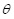
เป็นมุมระหว่างแกนของขดลวดที่สเตเตอร์กับโรเตอร์ ขณะที่มีค่ากระแสไฟฟ้ากระแสสลับความถี่ 50 Hz ไหลผ่านขดลวดเท่ากับ 10.0 A มุมที่ทำให้พลังงานสะสมอยู่ในรูปสนามแม่เหล็กสูงสุด (maximum storage energy in magnetic field) มีค่าเท่าใด
- 1 : 0 degree
- 2 : 30 degree
- 3 : 45 degree
- 4 : 90 degree
- คำตอบที่ถูกต้อง : 1
ข้อที่ 79 :
- เมื่อ ค่าความซึมซาบแม่เหล็กของวงจรแม่เหล็กชนิดหนึ่งเพิ่มขึ้นเป็น 2 เท่าของค่าเดิม โดยค่าความหนาแน่นสนามแม่เหล็กยังคงมีค่าเท่าเดิม ค่าพลังงานสะสมในสนามแม่เหล็กจะมีค่าเปลี่ยนแปลงไปอย่างไร
- 1 : ลดลงเหลือ 1/2 เท่าของค่าเดิม
- 2 : ลดลงเหลือ 1/4 เท่าของค่าเดิม
- 3 : เพิ่มขึ้นเป็น 4 เท่าของค่าเดิม
- 4 : เพิ่มขึ้นเป็น 2 เท่าของค่าเดิม
- คำตอบที่ถูกต้อง : 1
เนื้อหาวิชา : 38 : Principles of rotating machines
ข้อที่ 80 :
- จง หาความเร็วซิงโครนัส (synchronous speed) ของมอเตอร์เหนี่ยวนำ 3 เฟส มีค่าเท่าใด เมื่อจำนวนขั้วแม่เหล็กเท่ากับ 4 ขั้ว และป้อนแรงดันไฟฟ้าสามเฟสที่มีความถี่เท่ากับ 50 Hz
- 1 : 1200 rpm
- 2 : 1500 rpm
- 3 : 1600 rpm
- 4 : 1800 rpm
- คำตอบที่ถูกต้อง : 2
ข้อที่ 81 :
- จำนวนวงจรขนานของขดลวดอาร์มาเจอร์ของเครื่องจักรไฟฟ้ากระแสตรง มีค่าเท่าใด เมื่อพันขดลวดอาร์มาเจอร์แบบ Lap winding
- 1 : จำนวนวงจรขนานของขดลวดอาร์มาเจอร์เท่ากับ 2
- 2 : จำนวนวงจรขนานของขดลวดอาร์มาเจอร์เท่ากับจำนวนขั้วแม่เหล็ก
- 3 : จำนวนวงจรขนานของขดลวดอาร์มาเจอร์ มีค่าเป็น 2 เท่าของจำนวนขั้วแม่เหล็ก
- 4 : จำนวนวงจรขนานของขดลวดอาร์มาเจอร์ มีค่าเป็น 0.5 เท่าของจำนวนขั้วแม่เหล็ก
- คำตอบที่ถูกต้อง : 2
ข้อที่ 82 :
- มอเตอร์ชนิดใดเหมาะสมที่สุดสำหรับงานที่ต้องการแรงบิดสูงที่ความเร็วรอบต่ำ
- 1 : Permanent magnet DC motor
- 2 : Separately excited DC motor
- 3 : Shunt DC motor
- 4 : Series DC motor
- คำตอบที่ถูกต้อง : 4
ข้อที่ 83 :
- เครื่อง จักรไฟฟ้ากระแสตรง เมื่อขับด้วยต้นกำลังให้หมุนด้วยความเร็ว 50 rpm โดยอาร์มาเจอร์ของเครื่องจักรไฟฟ้านี้มีจำนวนขั้วแม่เหล็ก 4 poles แต่ละขั้วมีเส้นแรงแม่เหล็กเกิดขึ้นเท่ากับ 0.1 Wb จำนวนตัวนำทั้งหมดมีค่าเท่ากับ 100 และจำนวนวงจรขนานเท่ากับ 2 วงจร แรงเคลื่อนไฟฟ้าเหนี่ยวนำ (electromotive force) ที่เกิดขึ้นมีค่าเท่าใด
- 1 : 8.3 V
- 2 : 16.7 V
- 3 : 500 V
- 4 : 1000 V
- คำตอบที่ถูกต้อง : 2
ข้อที่ 84 :
- มอเตอร์ เหนี่ยวนำตัวหนึ่งขณะใช้งานเต็มพิกัดที่ความถี่ 50 Hz หมุนด้วยความเร็ว 920 rpm เมื่อถูกนำไปใช้งานที่ความถี่ 60 Hz มอเตอร์เหนี่ยวนำจะมีความเร็วซิงโครนัส (synchronous speed) เท่าใด
- 1 : 3600 rpm
- 2 : 3000 rpm
- 3 : 1800 rpm
- 4 : 1200 rpm
- คำตอบที่ถูกต้อง : 4
ข้อที่ 85 :
- ตัวแปรใดไม่มีผลต่อสมการแรงบิด (torque) ในเครื่องจักรกลไฟฟ้ากระแสตรง
- 1 : กระแสสร้างสนามแม่เหล็ก (field current)
- 2 : จำนวนแท่งตัวนำ (conductor)
- 3 : กระแสอาร์มาเจอร์ (armature current)
- 4 : ความเร็วที่โรเตอร์ (rotor speed)
- คำตอบที่ถูกต้อง : 4
ข้อที่ 86 :
- ตัวแปรใดไม่มีผลต่อสมการแรงเคลื่อนไฟฟ้าเหนี่ยวนำ (electromotive force) ในเครื่องจักรกลไฟฟ้ากระแสตรง
- 1 : ความเร็วที่โรเตอร์ (rotor speed)
- 2 : กระแสสร้างสนามแม่เหล็ก (field current)
- 3 : กระแสอาร์มาเจอร์ (armature current)
- 4 : จำนวนแท่งตัวนำ (conductor)
- คำตอบที่ถูกต้อง : 3
ข้อที่ 87 :
- ผลของการพันขดลวดแบบพิทช์ระยะสั้น (short pitch winding) ในเครื่องกำเนิดไฟฟ้ากระแสสลับ คืออะไร
- 1 : แรงเคลื่อนไฟฟ้าเหนี่ยวนำสูงขึ้น
- 2 : ลดผลของปฏิกิริยาอาร์มาเจอร์
- 3 : ลดฮาร์โมนิกส์ของแรงดันไฟฟ้า
- 4 : ความถี่ของแรงเคลื่อนไฟฟ้าเหนี่ยวนำ
- คำตอบที่ถูกต้อง : 3
ข้อที่ 88 :
- ขนาด ของแรงเคลื่อนแม่เหล็กลัพธ์ (magnetomotive force) ของเครื่องจักรไฟฟ้ากระแสสลับสามเฟส มีค่าเป็นกี่เท่าของแรงเคลื่อนแม่เหล็กในแต่ละเฟส
- 1 : 0.5 เท่า
- 2 : 1 เท่า
- 3 : 1.5 เท่า
- 4 : 2 เท่า
- คำตอบที่ถูกต้อง : 3
ข้อที่ 89 :
- เครื่อง กำเนิดไฟฟ้ากระแสสสับ พิกัด 100 kVA มีขั้วแม่เหล็กเท่ากับ 80 poles เมื่อขับด้วยต้นกำลังให้หมุนด้วยความเร็วเท่ากับ 20 rps จงหาค่ามุมทางไฟฟ้าต่อการหมุนหนึ่งรอบในหน่วยองศา และค่าความถี่ของแรงดันไฟฟ้าในหน่วย Hz ตามลำดับ
- 1 : 28,800 °, 400 Hz
- 2 : 14,400 °, 400 Hz
- 3 : 14,400 °, 800 Hz
- 4 : 28,800 °, 800 Hz
- คำตอบที่ถูกต้อง : 3
ข้อที่ 90 :
- การพันขดลวดในร่องสล็อตอาร์มาเจอร์ของเครื่องจักรกลไฟฟ้ากระแสตรง แบ่งเป็นกลุ่มใหญ่ได้แก่อะไร
- 1 : Wave winding and duplex winding
- 2 : Simplex duplex winding and wave winding
- 3 : Lap winding and simplex winding
- 4 : Lap winding and wave winding
- คำตอบที่ถูกต้อง : 4
ข้อที่ 91 :
- จง คำนวณหาค่าความถี่ของแรงเคลื่อนไฟฟ้าเหนี่ยวนำ (electromotive force) มีค่าเท่าใด โดยที่ขดลวดสเตเตอร์ของเครื่องกำเนิดไฟฟ้ากระแสสลับสามเฟส ขั้วแม่เหล็ก 6 poles ขดลวดสร้างสนามแม่เหล็ก (field winding) พันอยู่บนโรเตอร์หมุนด้วยความเร็ว 1000 rpm
- 1 : 40 Hz
- 2 : 50 Hz
- 3 : 60 Hz
- 4 : 75 Hz
- คำตอบที่ถูกต้อง : 2
ข้อที่ 92 :
- มอเตอร์มีความเร็วรอบ 1500 rpm จงหาความเร็วรอบในหน่วยเรเดียนต่อวินาที (rad/s)
- 1 : 50 rad/s
- 2 : 157 rad/s
- 3 : 12.5 rad/s
- 4 : 1500 rad/s
- คำตอบที่ถูกต้อง : 2
ข้อที่ 93 :
- มอเตอร์มีความเร็วรอบ 3000 rpm จงหาความเร็วรอบในหน่วยเรเดียนต่อวินาที (rad/s)
- 1 : 50 rad/s
- 2 : 314 rad/s
- 3 : 125 rad/s
- 4 : 3000 rad/s
- คำตอบที่ถูกต้อง : 2
ข้อที่ 94 :
- มอเตอร์มีความเร็วรอบ 750 rpm จงหาความเร็วรอบในหน่วยเรเดียนต่อวินาที (rad/s)
- 1 : 25 rad/s
- 2 : 78.5 rad/s
- 3 : 39.25 rad/s
- 4 : 750 rad/s
- คำตอบที่ถูกต้อง : 2
ข้อที่ 95 :
- เครื่องจักรกลไฟฟ้า (electrical machines) ในข้อใดสนามแม่เหล็กอยู่กับที่
- 1 : Synchronous motor
- 2 : Induction motor
- 3 : DC motor
- 4 : Stepping motor
- คำตอบที่ถูกต้อง : 3
ข้อที่ 96 :
- ถ้าต้องการกลับทิศทางการหมุนของมอเตอร์ซิงโครนัส (synchronous motor) ทำได้โดยการ
- 1 : สลับขั้วสายไฟฟ้าป้อนเข้าขดลวดอาร์มาเจอร์ (armature winding) ทั้งสามเฟส
- 2 : สลับขั้วสายไฟฟ้าป้อนเข้าขดลวดอาร์มาเจอร์ (armature winding) คู่ใดคู่หนึ่ง
- 3 : สลับขั้วสายไฟฟ้าป้อนเข้าขดลวดอาร์มาเจอร์ (armature winding) ทั้งสามเฟส และสลับขั้วของขดลวดสร้างสนามแม่เหล็ก (field winding)
- 4 : สลับขั้วของขดลวดสร้างสนามแม่เหล็ก (field winding)
- คำตอบที่ถูกต้อง : 2
ข้อที่ 97 :
- จาก การพันขดลวดอาร์มาเจอร์สามเฟส (three phase armature winding) แบบสองชั้น (double layer) ที่มี 12 slots, 4 poles มีจำนวนรอบของขดลวดแต่ละขดเท่ากับ 25 turns ให้คำนวณหาค่าตัวประกอบพิตช์ (pitch factor : Kp) ของ fundamental frequency EMF
- 1 : 1.0
- 2 : 0.9
- 3 : 0.866
- 4 : 0.707
- คำตอบที่ถูกต้อง : 1
ข้อที่ 98 :
- จาก การพันขดลวดอาร์มาเจอร์สามเฟส (Three phase armature winding) แบบสองชั้น (Double layer) ที่มี 12 slots, 4 poles มีจำนวนรอบของขดลวดแต่ละขดเท่ากับ 25 turns ให้คำนวณหาค่า Winding factor (Kw) ของ Fundamental
- 1 : 1.0
- 2 : 0.9
- 3 : 0.8
- 4 : ไม่มีข้อถูก
- คำตอบที่ถูกต้อง : 1
ข้อที่ 99 :
- จาก การพันขดลวดอาร์มาเจอร์สามเฟส (three phase armature winding) แบบสองชั้น (double layer) ที่มี 12 slots, 4 poles มีจำนวนรอบของขดลวดแต่ละขดเท่ากับ 25 turns ให้คำนวณหาจำนวนรอบของขดลวดในแต่ละเฟส
- 1 : 25 turns
- 2 : 50 turns
- 3 : 75 turns
- 4 : 100 turns
- คำตอบที่ถูกต้อง : 4
ข้อที่ 100 :
- จาก การพันขดลวดอาร์มาเจอร์สามเฟส (three phase armature winding) แบบสองชั้น (double layer) ที่มี 24 slots, 4 poles มีจำนวนรอบของขดลวดแต่ละขดเท่ากับ 25 turns ให้คำนวณหาจำนวนรอบของขดลวดในแต่ละเฟส
- 1 : 25 turns
- 2 : 50 turns
- 3 : 100 turns
- 4 : 200 turns
- คำตอบที่ถูกต้อง : 4
เนื้อหาวิชา : 39 : DC machines
ข้อที่ 101 :
- ถ้าต้องการกลับทิศการหมุนของมอเตอร์ไฟฟ้ากระแสตรง ข้อใดถูกต้อง
- 1 : เลือกวิธีการกลับขั้วขดลวดสร้างสนามแม่เหล็ก หรือเลือกวิธีการกลับขั้วขดลวดอาร์มาเจอร์ วิธีใดวิธีหนึ่ง
- 2 : กลับขั้วทั้งของขดลวดสร้างสนามแม่เหล็กและขดลวดอาร์มาเจอร์
- 3 : เปลี่ยนความถี่ที่ป้อนให้กับมอเตอร์ไฟฟ้ากระแสตรง
- 4 : เปลี่ยนจำนวนแปรงถ่าน
- คำตอบที่ถูกต้อง : 1
ข้อที่ 102 :
- เกี่ยวกับเครื่องจักรกลไฟฟ้ากระแสตรง ข้อใดกล่าวไม่ถูกต้อง
- 1 : แรงดันไฟฟ้าของเครื่องกำเนิดไฟฟ้ากระแสตรงชนิดกระตุ้นสนามแม่เหล็กด้วยตัว เองแบบขนาน (shunt DC generator) จะมีค่าเปลี่ยนแปลงมากกว่าเครื่องกำเนิดไฟฟ้ากระแสตรงชนิดกระตุ้นแยก (separately excited dc generator) เมื่อมีการจ่ายภาระทางไฟฟ้า
- 2 : เครื่องกำเนิดไฟฟ้า ทำหน้าที่เปลี่ยนรูปพลังงานจากพลังงานทางกลเป็นพลังงานไฟฟ้า
- 3 : การเริ่มออกตัวหมุนของมอเตอร์ไฟฟ้ากระแสตรง (starting of DC motor) กระแสอาร์มาเจอร์จะมีค่าสูง
- 4 : เมื่อเครื่องกำเนิดไฟฟ้าจ่ายภาระไฟฟ้าเพิ่มขึ้น แรงดันไฟฟ้าที่ขั้วของเครื่องกำเนิดไฟฟ้าจะมีค่าคงที่
- คำตอบที่ถูกต้อง : 4
ข้อที่ 103 :
- เครื่อง กำเนิดไฟฟ้ากระแสตรงแบบกระตุ้นแยก (separately excited dc generator) หมุนด้วยความเร็วคงที่ ถ้าต้องการเพิ่ม terminal voltage จะสามารถทำได้อย่างไร
- 1 : ลดความต้านทานขดลวดสร้างสนามแม่เหล็ก (field winding resistance)
- 2 : เพิ่มความต้านทานขดลวดสร้างสนามแม่เหล็ก (field winding resistance)
- 3 : เพิ่มความต้านทานขดลวดอาร์มาเจอร์ (armature winding resistance)
- 4 : เครื่องกำเนิดไฟฟ้ากระแสตรงแบบกระตุ้นแยกนี้ จ่ายภาระไฟฟ้าเพิ่มขึ้น
- คำตอบที่ถูกต้อง : 1
ข้อที่ 104 :
- การเกิดปฏิกิริยาอาร์มาเจอร์ หรืออาร์มาเจอร์รีแอคชัน (armature reaction) มีผลอย่างไรกับเครื่องจักรไฟฟ้ากระแสตรง (DC machine)
- 1 : เส้นที่ตั้งฉากกับแนวของเส้นแรงแม่เหล็ก หรือ แกนนิวทรัล (neutral plane) บิดเบนไปจากตำแหน่งเดิม
- 2 : สนามแม่เหล็กของขดลวดอาร์มาเจอร์ (armature winding) สูงขึ้น
- 3 : สนามแม่เหล็กของขดลวดสร้างสนามแม่เหล็ก (field winding) ลดลง
- 4 : สนามแม่เหล็กของขดลวดสร้างสนามแม่เหล็ก (field winding) สูงขึ้น
- คำตอบที่ถูกต้อง : 1
ข้อที่ 105 :
- ตัวเลือกในข้อใด เป็นเอกลักษณ์ของเครื่องจักรไฟฟ้ากระแสตรง (DC machine)
- 1 : ขั้วแม่เหล็ก (magnetic pole)
- 2 : วงแหวนแยก หรือคอมมิวเตเตอร์ (commutator)
- 3 : วงแหวนลื่น (slip ring)
- 4 : โรเตอร์แบบกรงกระรอก (squirrel-cage rotor)
- คำตอบที่ถูกต้อง : 2
ข้อที่ 106 :
- การ ทำงานร่วมกันระหว่างวงแหวนแยก หรือคอมมิวเตเตอร์ (commutator) กับแปรงถ่าน (carbon brush) ในเครื่องกำเนิดไฟฟ้ากระแสตรงเทียบได้กับวงจรอิเล็กทรอนิกส์ หรือคอนเวอร์เตอร์ (converter) แบบใด
- 1 : DC to DC converter
- 2 : Full wave rectifier
- 3 : AC to AC converter
- 4 : DC to AC converter
- คำตอบที่ถูกต้อง : 2
ข้อที่ 107 :
- ข้อใดไม่ใช่วิธีการแก้ปัญหาของการเกิดปฏิกิริยาอาร์มาเจอร์ หรืออาร์มาเจอร์รีแอคชัน (armature reaction)
- 1 : การเลื่อนตำแหน่งแปรงถ่าน (carbon brush shifting)
- 2 : วงแหวนลื่น (slip ring)
- 3 : การติดตั้งอินเตอร์โพล (interpole)
- 4 : ขดลวดชดเชย (compensating winding)
- คำตอบที่ถูกต้อง : 2
ข้อที่ 108 :
- มอเตอร์ ไฟฟ้ากระแสตรง พิกัด 5 HP แรงดัน 120 V ความเร็วที่พิกัด 1750 rpm พบว่าถ้ามอเตอร์ขับภาระทางกลเต็มพิกัดจะมีค่า speed regulation เท่ากับ 4% จงหาความเร็วของมอเตอร์ขณะไม่ขับภาระทางกล (no load) มีค่าเท่าใด
- 1 : 1930 rpm
- 2 : 1750 rpm
- 3 : 1680 rpm
- 4 : 1820 rpm
- คำตอบที่ถูกต้อง : 4
ข้อที่ 109 :
- เครื่อง กำเนิดไฟฟ้ากระแสตรงแบบกระตุ้นแยก (separately exited DC generator) พิกัด 25 kW 250 V 1450 rpm ถ้าความต้านทานของขดลวดอาร์มาเจอร์ (armature winding) มีค่าเท่ากับ 0.1053 ohm ความต้านทานของขดลวดชดเชย (compensation winding) มีค่าเท่ากับ 0.0141 ohm ความต้านทานของขดลวดอินเตอร์โพล (inter-pole winding) มีค่าเท่ากับ 0.0306 ohm และความต้านทานของขดลวดสนาม (field winding) มีค่าเท่ากับ 96.3 ohm จงหาแรงดันไฟฟ้าเหนี่ยวนำของขดลวดอาร์มาเจอร์ ขณะที่จ่ายภาระไฟฟ้าเต็มพิกัด (full load) มีค่าเท่าใด
- 1 : 235 V
- 2 : 250 V
- 3 : 265 V
- 4 : 280 V
- คำตอบที่ถูกต้อง : 3
ข้อที่ 110 :
- เครื่อง กำเนิดไฟฟ้ากระแสตรงชนิดกระตุ้นสนามแม่เหล็กด้วยตัวเองแบบขนาน (shunt DC generator) มีความต้านทานขดลวดสนาม (field winding) มีค่าเท่ากับ 60 ohm ขณะที่จ่ายภาระไฟฟ้า 6 kW ที่แรงดันไฟฟ้า 120 V พบว่าแรงดันไฟฟ้าเหนี่ยวนำมีค่าเป็น 133 V จงหาค่าความต้านทานของขดลวดอาร์มาเจอร์ (armature winding resistance) มีค่าเท่าใด
- 1 : 0.4 ohm
- 2 : 0.15 ohm
- 3 : 0.2 ohm
- 4 : 0.25 ohm
- คำตอบที่ถูกต้อง : 4
ข้อที่ 111 :
- มอเตอร์ กระแสตรงชนิดกระตุ้นสนามแม่เหล็กด้วยตัวเองแบบอนุกรม (series DC motor) ขณะขับภาระมีความเร็วรอบ 720 rpm กำลังเอาท์พุท 9800 W ให้คำนวณหาค่าของแรงบิดที่แกนเพลามอเตอร์
- 1 : 100 N.m
- 2 : 120 N.m
- 3 : 130 N.m
- 4 : 140 N.m
- คำตอบที่ถูกต้อง : 3
ข้อที่ 112 :
- มอเตอร์ไฟฟ้ากระแสตรง ขณะขับโหลดมีความเร็วรอบ 720 rpm กำลังเอาท์พุท 10 HP ให้คำนวณหาค่าของแรงบิดที่แกนเพลามอเตอร์ (1 HP=746 W)
- 1 : 98.9 N.m
- 2 : 120.7 N.m
- 3 : 87.5 N.m
- 4 : 32.6 N.m
- คำตอบที่ถูกต้อง : 1
ข้อที่ 113 :
- เครื่อง กำเนิดไฟฟ้ากระแสตรงชนิดกระตุ้นสนามแม่เหล็กด้วยตัวเองแบบขนาน (shunt DC generator) พิกัดแรงดันไฟฟ้า 250 V ความต้านทานอาร์มาเจอร์ 0.15 ohm ความต้านทานขดลวดสนามแบบขนาน 100 ohm ขณะจ่ายกำลังไฟฟ้าให้ความต้านทานไฟฟ้ามีค่า 25 ohm ต้องใช้ความเร็วของต้นกำลังทางกล 3000 rpm ให้คำนวณหาค่ากระแสไฟฟ้าที่ไหลผ่านขดลวดอาร์มาเจอร์
- 1 : 12.5 A
- 2 : 2.5 A
- 3 : 7.5 A
- 4 : 10 A
- คำตอบที่ถูกต้อง : 1
ข้อที่ 114 :
- เครื่อง กำเนิดไฟฟ้ากระแสตรงชนิดกระตุ้นสนามแม่เหล็กด้วยตัวเองแบบขนาน (shunt DC generator) พิกัดแรงดันไฟฟ้า 250 V ความต้านทานอาร์มาเจอร์ 0.15 ohm ความต้านทานขดลวดสนามแบบขนาน 100 ohm ขณะจ่ายกำลังไฟฟ้า 10 kW ต้องใช้ความเร็วของต้นกำลังทางกล 1500 rpm ให้คำนวณหาค่ากระแสไฟฟ้าที่ไหลผ่านขดลวดอาร์มาเจอร์
- 1 : 40 A
- 2 : 2.5 A
- 3 : 42.5 A
- 4 : 37.5 A
- คำตอบที่ถูกต้อง : 3
ข้อที่ 115 :
- เครื่องจักรกลไฟฟ้ากระแสตรง (DC machine) มีขดลวดชนิดใด ที่ทำหน้าที่สร้างสนามแม่เหล็กหลัก
- 1 : ขดลวดสร้างสนามแม่เหล็ก (field winding)
- 2 : ขดลวดอามาเจอร์ (armature winding)
- 3 : ขดลวดแดมเปอร์ (damper winding)
- 4 : ขดลวดช่วย (auxiliary winding)
- คำตอบที่ถูกต้อง : 1
ข้อที่ 116 :
- เครื่องจักรกลไฟฟ้ากระแสตรง (DC machines) มีส่วนประกอบข้อใดที่อยู่กับที่
- 1 : โรเตอร์ (rotor)
- 2 : สเตเตอร์ (stator)
- 3 : สลิปริง (slip ring)
- 4 : คอมมิวเตเตอร์ (commutator)
- คำตอบที่ถูกต้อง : 2
ข้อที่ 117 :
- เครื่องจักรกลไฟฟ้ากระแสตรง (DC machine) มีส่วนประกอบในข้อใดที่หมุนได้
- 1 : สเตเตอร์ (stator)
- 2 : โรเตอร์ (rotor)
- 3 : เปลือก และโครง (yoke and frame)
- 4 : แปรงถ่าน (carbon brush)
- คำตอบที่ถูกต้อง : 2
ข้อที่ 118 :
- แรงดันไฟฟ้าที่ผลิตได้จากเครื่องจักรกลไฟฟ้ากระแสตรง (DC machine) ไม่ขึ้นอยู่กับองค์ประกอบข้อใดของเครื่องจักรกล
- 1 : ความเร็ว (speed)
- 2 : เส้นแรงแม่เหล็ก (magnetic flux)
- 3 : ขดลวดอาร์มาเจอร์ (armature winding)
- 4 : อุณหภูมิ (temperature)
- คำตอบที่ถูกต้อง : 4
ข้อที่ 119 :
- แรงบิดที่ได้จากเครื่องจักรกลไฟฟ้ากระแสตรง (DC machines) ไม่ขึ้นกับองค์ประกอบข้อใด
- 1 : ขดลวดอาร์มาเจอร์ (armature winding)
- 2 : เส้นแรงแม่เหล็ก (magnetic flux)
- 3 : กระแสไฟฟ้า (current)
- 4 : น้ำหนัก (weight)
- คำตอบที่ถูกต้อง : 4
ข้อที่ 120 :
- ข้อใดไม่ใช่ความสูญเสียที่เกิดขึ้นในเครื่องจักรกลไฟฟ้ากระแสตรง (DC machines)
- 1 : ความสูญเสียในแกนเหล็ก (core loss)
- 2 : ความสูญเสียในขดลวด (Copper losses)
- 3 : ความสูญเสียทางกล (mechanical loss)
- 4 : ความสูญเสียความถี่ (frequency loss)
- คำตอบที่ถูกต้อง : 4
ข้อที่ 121 :
- ส่วนใดของเครื่องจักรกลไฟฟ้ากระแสตรงที่ทำหน้าที่เหมือนกับเรคติไฟเออร์ (rectifier)
- 1 : ขดลวดอาร์มาเจอร์ (armature winding)
- 2 : สลิปริง (slip ring)
- 3 : คอมมิวเตเตอร์ (commutator)
- 4 : ขดลวดสร้างสนามแม่เหล็ก (field winding)
- คำตอบที่ถูกต้อง : 3
ข้อที่ 122 :
- ข้อใดต่อไปนี้ผิด
- 1 : เครื่องกำเนิดไฟฟ้ากระแสตรงชนิดกระตุ้นสนามแม่เหล็กด้วยตัวเองแบบอนุกรม (series DC generator) นิยมนำไปใช้สำหรับงานที่ต้องการจ่ายกระแสไฟฟ้าคงที่
- 2 : การเกิดปฏิกิริยาอาร์เมเจอร์ หรืออาร์มาเจอร์รีแอคชั่น (armature reaction) จะเกิดขึ้นในกรณีของเครื่องกำเนิดไฟฟ้าเท่านั้น
- 3 : การเกิดปฏิกิริยาอาร์เมเจอร์ หรืออาร์มาเจอร์รีแอคชั่น (armature reaction) สามารถแก้ไขได้ด้วยการเคลื่อนย้ายตำแหน่งของแปรงถ่าน
- 4 : เครื่องกำเนิดไฟฟ้ากระแสตรงชนิดกระตุ้นสนามแม่เหล็กด้วยตัวเองแบบขดลวดผสม (compound DC generator) สามารถทำให้แรงดันไฟฟ้าที่จ่ายให้ภาระไฟฟ้าคงที่ได้
- คำตอบที่ถูกต้อง : 2
ข้อที่ 123 :
- เครื่อง กำเนิดไฟฟ้ากระแสตรงชนิดกระตุ้นแยก (separately excited DC generator) มีค่าแรงดันอาร์มาเจอร์ 150 V ขณะแกนเพลาถูกขับด้วยความเร็วรอบ 1800 rpm จงหาค่าแรงดันไฟฟ้าขณะไร้ภาระ ที่ความเร็ว 1600 rpm ถ้าควบคุมกระแสไฟฟ้าในขดลวดสนามให้มีค่าคงที่
- 1 : 133.3 V
- 2 : 144.3 V
- 3 : 122.3 V
- 4 : 111.3 V
- คำตอบที่ถูกต้อง : 1
ข้อที่ 124 :
- ย่านการใช้งานตั้งแต่ไม่มีภาระจนถึงมีภาระเต็มพิกัดของมอเตอร์ไฟฟ้ากระแสตรงแบบใดที่ความเร็วรอบมีการเปลี่ยนแปลงมากที่สุด
- 1 : มอเตอร์กระแสตรงชนิดกระตุ้นสนามแม่เหล็กด้วยตัวเองแบบอนุกรม (series DC motor)
- 2 : มอเตอร์กระแสตรงชนิดกระตุ้นสนามแม่เหล็กด้วยตัวเองแบบขนาน (shunt DC motor)
- 3 : มอเตอร์กระแสตรงชนิดกระตุ้นสนามแม่เหล็กด้วยตัวเองแบบขดลวดผสม ขนานสั้น (short shunt compound DC motor)
- 4 : มอเตอร์กระแสตรงชนิดกระตุ้นสนามแม่เหล็กด้วยตัวเองแบบขดลวดผสม ขนานยาว (long shunt compound DC motor)
- คำตอบที่ถูกต้อง : 1
ข้อที่ 125 :
- มอเตอร์ไฟฟ้ากระแสตรงแบบใดให้ความเร็วรอบสูงขึ้น ขณะภาระทางกลมีค่ามากขึ้น
- 1 : มอเตอร์กระแสตรงชนิดกระตุ้นสนามแม่เหล็กด้วยตัวเองแบบขนาน (shunt DC motor)
- 2 : มอเตอร์กระแสตรงชนิดกระตุ้นสนามแม่เหล็กด้วยตัวเองแบบอนุกรม (series DC motor)
- 3 : มอเตอร์กระแสตรงชนิดกระตุ้นสนามแม่เหล็กด้วยตัวเองแบบขดลวดผสม ที่ต่อขดลวดสร้างสนามแบบเสริมกัน (commulative compound DC motor)
- 4 : มอเตอร์กระแสตรงชนิดกระตุ้นสนามแม่เหล็กด้วยตัวเองแบบขดลวดผสม ที่ต่อขดลวดสร้างสนามแบบหักล้างกัน (differential compound DC motor)
- คำตอบที่ถูกต้อง : 4
ข้อที่ 126 :
- มอเตอร์ไฟฟ้ากระแสตรงในข้อใด มีค่า speed regulation น้อยที่สุด
- 1 : มอเตอร์กระแสตรงชนิดกระตุ้นสนามแม่เหล็กด้วยตัวเองแบบอนุกรม (series DC motor)
- 2 : มอเตอร์กระแสตรงชนิดกระตุ้นสนามแม่เหล็กด้วยตัวเองแบบขนาน (shunt DC motor)
- 3 : มอเตอร์กระแสตรงชนิดกระตุ้นสนามแม่เหล็กด้วยตัวเองแบบขดลวดผสม ขนานสั้น (short shunt compound DC motor)
- 4 : มอเตอร์กระแสตรงชนิดกระตุ้นสนามแม่เหล็กด้วยตัวเองแบบขดลวดผสม ขนานยาว (long shunt compound DC motor)
- คำตอบที่ถูกต้อง : 2
ข้อที่ 127 :
- เครื่อง จักรกลไฟฟ้ากระแสตรงแบบใด ไม่ต้องใช้แหล่งจ่ายแรงดันไฟฟ้ากระแสตรงจากภายนอก จ่ายให้กับเครื่องจักร หรือสามารถจ่ายพลังงานไฟฟ้าให้กับตัวเองได้ (self-power) โดยไม่ต้องใช้แหล่งจ่ายจากภายนอก
- 1 : มอเตอร์กระแสตรงชนิดกระตุ้นสนามแม่เหล็กด้วยตัวเองแบบอนุกรม (series DC motor)
- 2 : มอเตอร์กระแสตรงชนิดกระตุ้นสนามแม่เหล็กด้วยตัวเองแบบขนาน (shunt DC motor)
- 3 : เครื่องกำเนิดไฟฟ้ากระแสตรงชนิดกระตุ้นสนามแบบแยกส่วน (separately excited dc generator)
- 4 : เครื่องกำเนิดไฟฟ้ากระแสตรงชนิดกระตุ้นสนามแม่เหล็กด้วยตัวเองแบบขนาน (shunt DC generator)
- คำตอบที่ถูกต้อง : 4
ข้อที่ 128 :
- เครื่อง กำเนิดไฟฟ้ากระแสตรงแบบกระตุ้นแยก (separately excited DC generator) มีค่าแรงดันไฟฟ้าเหนี่ยวนำขณะไร้ภาระทางไฟฟ้า 120 V มีความเร็วรอบ 1500 rpm จงคำนวณหาค่าแรงดันไฟฟ้าเหนี่ยวนำ เมื่อเครื่องกำเนิดไฟฟ้านี้มีความเร็วรอบ 1000 rpm โดยกำหนดให้กระแสสร้างสนามแม่เหล็ก (field current) มีค่าคงที่
- 1 : 150 V
- 2 : 130 V
- 3 : 180 V
- 4 : 80 V
- คำตอบที่ถูกต้อง : 4
ข้อที่ 129 :
- เครื่องกำเนิดไฟฟ้ากระแสตรงสามารถแบ่งตามลักษณะการกระตุ้นสนามแม่เหล็กได้ 2 ลักษณะคือ
- 1 : Self excited and shunt excited
- 2 : Self excited and compound excited
- 3 : Self excited and separately excited
- 4 : Self excited and series excited
- คำตอบที่ถูกต้อง : 3
ข้อที่ 130 :
- ส่วนประกอบใดที่ไม่ใช่ส่วนประกอบของเครื่องกำเนิดไฟฟ้ากระแสตรง
- 1 : Field winding
- 2 : Stator winding
- 3 : Armature winding
- 4 : Damper winding
- คำตอบที่ถูกต้อง : 4
ข้อที่ 131 :
- เครื่อง จักรกลไฟฟ้ากระแสตรงแบบกระตุ้นด้วยตัวเอง (self-excited DC machine) สามารถแบ่งการต่อขดลวดสร้างสนามแม่เหล็ก (field winding) ได้เป็น 3 ประเภทคือ
- 1 : Series, shunt, and compound
- 2 : Series, shunt, and long shunt
- 3 : Series, short shunt, and long shunt
- 4 : Separately, series, and shunt
- คำตอบที่ถูกต้อง : 1
ข้อที่ 132 :
- มอเตอร์ไฟฟ้ากระแสตรงชนิดใดที่ให้แรงบิดเริ่มต้นหมุนสูง
- 1 : Series motor
- 2 : Shunt motor
- 3 : Compound short shunt motor
- 4 : Compound long shunt motor
- คำตอบที่ถูกต้อง : 1
ข้อที่ 133 :
- เครื่อง
กำเนิดไฟฟ้ากระแสตรงแบบขนานขนาด 10 kW, 250 V, 1200 rpm และมีค่าต่าง ๆ
แสดงตามรูป ขณะที่จ่ายภาระที่พิกัดแรงดันไฟฟ้าและกระแสไฟฟ้า
ให้คำนวณหากระแสอาร์มาเจอร์ (armature current)
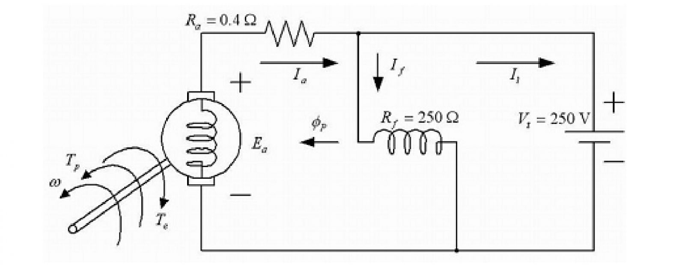
- 1 : 39.0 A
- 2 : 40.0 A
- 3 : 41.0 A
- 4 : 42.7 A
- คำตอบที่ถูกต้อง : 3
ข้อที่ 134 :
- มอเตอร์
ไฟฟ้ากระแสตรงแบบกระตุ้นแยก (separately excited DC motor) ขนาด 40 kW, 250
V, 180 A, 1450 rpm มีค่าต่าง ๆ ดังรูป ขณะขับภาระทางกลที่พิกัดกำลัง
โดยป้อนด้วยพิกัดแรงดันไฟฟ้าเข้าที่ขดลวดอาร์มาเจอร์ (armature winding)
และขดลวดสร้างสนามแม่เหล็ก (field winding) ให้คำนวณหาแรงบิดขาออกที่พิกัด
(rated output torque)
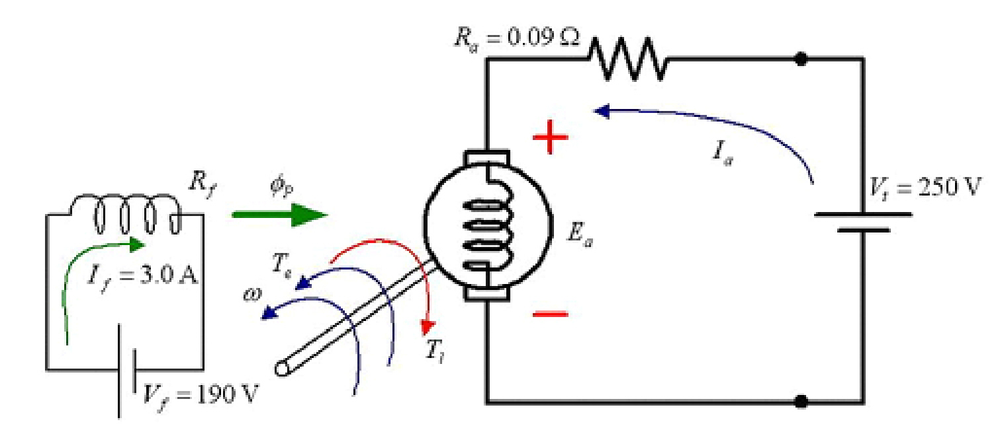
- 1 : 1655.2 N.m
- 2 : 296.4 N.m
- 3 : 263.5 N.m
- 4 : 27.6 N.m
- คำตอบที่ถูกต้อง : 3
ข้อที่ 135 :
- การต่อมอเตอร์ไฟฟ้ากระแสตรงต้องต่อขดลวดอย่างไร เพื่อให้มีการทำงานเป็นแบบขนาน
- 1 : ต่อขดลวดอาร์เมเจอร์ (armature winding) ขนานเข้ากับขดลวดสร้างสนามแม่เหล็กแบบขนาน (shunt field winding)
- 2 : ต่อขดลวดอาร์เมเจอร์ (armature winding) อนุกรมเข้ากับขดลวดสร้างสนามแม่เหล็กแบบอนุกรม (series field winding)
- 3 : ต่อขดลวดอาร์เมเจอร์ (armature winding) ขนานเข้ากับขดลวดสร้างสนามแม่เหล็กแบบอนุกรม (series field winding)
- 4 : ต่อขดลวดอาร์เมเจอร์ (armature winding) อนุกรมเข้ากับขดลวดสร้างสนามแม่เหล็กแบบขนาน (shunt field winding)
- คำตอบที่ถูกต้อง : 1
ข้อที่ 136 :
- แปรงถ่านและซี่คอมมิวเตเตอร์ (brush and commutator) ในมอเตอร์ไฟฟ้ากระแสตรงมีความสำคัญอย่างไร
- 1 : ใช้ป้อนกระแสไฟฟ้าให้กับขดลวดสร้างสนามแม่เหล็ก (field winding) บนโรเตอร์
- 2 : ใช้ป้อนกระแสไฟฟ้าให้กับขดลวดอาร์เมเจอร์ (armature winding) บนสเตเตอร์
- 3 : ใช้ป้อนกระแสไฟฟ้าให้กับขดลวดอาร์เมเจอร์ (armature winding) บนโรเตอร์
- 4 : ใช้ป้อนกระแสไฟฟ้าให้กับขดลวดสร้างสนามแม่เหล็ก (field winding) บนสเตเตอร์
- คำตอบที่ถูกต้อง : 3
ข้อที่ 137 :
- มอเตอร์ ไฟฟ้ากระแสตรงแบบขนาน (shunt DC motor) ขนาด 150 HP, 240 V, 650 rpm ขณะทำงานขับภาระขนาด 125 HP มอเตอร์ใช้กระแสไฟฟ้า 420 A ถ้าให้ความต้านทานของขดลวดอาร์เมเจอร์ (armature winding) และขดลวดสร้างสนามแม่เหล็ก (field winding) มีค่า 0.0125 และ 32 ohm ตามลำดับ แรงดันตกคร่อมแปรงถ่านมีค่า 2 V จงหาค่ากำลังสูญเสียจากส่วนหมุน (rotational loss) (1 HP = 746 W)
- 1 : 2780 W
- 2 : 3526 W
- 3 : 96030 W
- 4 : 93250 W
- คำตอบที่ถูกต้อง : 1
ข้อที่ 138 :
- มอเตอร์ ไฟฟ้ากระแสตรงแบบขนาน (shunt DC motor) ขนาด 150 HP, 240 V, 650 rpm ขณะทำงานขับภาระขนาด 125 HP มอเตอร์ใช้กระแสไฟฟ้า 420 A ถ้าให้ความต้านทานของขดลวดอาร์เมเจอร์ (armature winding) และขดลวดสร้างสนามแม่เหล็ก (field winding) มีค่า 0.0125 และ 32 ohm ตามลำดับ แรงดันตกคร่อมแปรงถ่านมีค่า 2 V จงหาค่าของกระแสอาร์เมเจอร์ (armature current) (1 HP = 746 W)
- 1 : 7.5 A
- 2 : 412.5 A
- 3 : 420 A
- 4 : 232.8 A
- คำตอบที่ถูกต้อง : 2
เนื้อหาวิชา : 40 : Starting methods for dc motor
ข้อที่ 139 :
- ข้อใดทำให้เกิดความเสียหายกับมอเตอร์ไฟฟ้ากระแสตรง ขณะทำการสตาร์ทมอเตอร์
- 1 : ต่อความต้านทานภายนอกกับขดลวดอาร์มาเจอร์ (armature winding) แบบอนุกรม
- 2 : เพิ่มแรงดันไฟฟ้าให้กับขดลวดอาร์มาเจอร์ (armature winding) อย่างช้าๆ
- 3 : สำหรับมอเตอร์ไฟฟ้ากระแสตรงกระตุ้นแยก (separately excited DC motor) ต้องจ่ายกระแสสร้างสนามแม่เหล็ก (field current) ก่อนจ่ายแรงดันไฟฟ้าให้ขดลวดอาร์มาเจอร์ (armature winding)
- 4 : ปลดขดลวดสร้างสนามแม่เหล็ก (field winding) ขณะทำการสตาร์ท และต่อกลับในภายหลัง
- คำตอบที่ถูกต้อง : 4
ข้อที่ 140 :
- มอเตอร์
ไฟฟ้ากระแสตรงพิกัด 230 V, 27.5 A ขณะทำงานที่พิกัดมีความเร็วรอบ 1750 rpm
มีค่าความต้านทานขดลวดอาร์มาเจอร์ (armature resistance) 0.8 ohm
ให้คำนวณหากระแสขณะสตาร์ทเมื่อไม่มีการเพิ่มค่าความต้านทานภายนอก
- 1 : 27.5 A
- 2 : 34.4 A
- 3 : 260 A
- 4 : 287.5 A
- คำตอบที่ถูกต้อง : 4
ข้อที่ 141 :
- มอเตอร์ ไฟฟ้ากระแสตรงพิกัด 230 V, 27.5 A ขณะทำงานที่พิกัดมีความเร็วรอบ 1750 rpm มีค่าความต้านทานขดลวดอาร์มาเจอร์ (armature resistance) 0.8 ohm ให้คำนวณหาค่าความต้านทานไฟฟ้าที่ต้องต่อเข้ากับขดลวดอาร์มาเจอร์เพื่อให้ กระแสขณะสตาร์ทมีค่าสูงสุดไม่เกิน 120 % ของพิกัด
- 1 : 6.17 ohm
- 2 : 6.97 ohm
- 3 : 0.96 ohm
- 4 : 8.36 ohm
- คำตอบที่ถูกต้อง : 1
ข้อที่ 142 :
- ตัวเลือกใดกล่าวเกี่ยวกับการสตาร์ทมอเตอร์ไฟฟ้ากระแสตรงไม่ถูกต้อง
- 1 : ขณะสตาร์ทแรงเคลื่อนไฟฟ้าเหนี่ยวนำ (induced emf) ที่เกิดขึ้นที่ขดลวดอาร์มาเจอร์ (armature winding) มีค่าเท่ากับแรงดันไฟฟ้าที่ป้อนเข้าขดลวดอาร์มาเจอร์
- 2 : สำหรับมอเตอร์ไฟฟ้ากระแสตรงกระตุ้นแยก (separately excited DC motor) ต้องจ่ายกระแสสร้างสนามแม่เหล็ก (field current) ก่อนจ่ายแรงดันไฟฟ้าให้ขดลวดอาร์มาเจอร์ (armature winding)
- 3 : ขณะสตาร์ทกระแสไฟฟ้าในขดลวดอาร์มาเจอร์ (armature winding) จะมีค่ามากกว่ากระแสพิกัดหลายเท่า
- 4 : เมื่อมอเตอร์เริ่มหมุนแล้ว (ความเร็วเพิ่มจากศูนย์) กระแสไฟฟ้าในขดลวดอาร์มาเจอร์ (armature winding) จะมีค่าลดลง
- คำตอบที่ถูกต้อง : 1
ข้อที่ 143 :
- มอเตอร์ ไฟฟ้ากระแสตรงแบบขนาน (shunt DC motor) มีพิกัด 10 kW, 100 V, 1000 rpm มีค่าความต้านทานขดลวดอาร์มาเจอร์ (armature resistance) 0.1 ohm ขณะจ่ายแรงดันไฟฟ้า 100 V ค่ากระแสอาร์มาเจอร์ (armature current) ในช่วงเริ่มหมุนเป็นกี่เท่าของค่ากระแสอาร์มาเจอร์ที่พิกัด
- 1 : 1 เท่า
- 2 : 10 เท่า
- 3 : 15 เท่า
- 4 : 100 เท่า
- คำตอบที่ถูกต้อง : 2
ข้อที่ 144 :
- มอเตอร์ ไฟฟ้ากระแสตรงแบบขนาน (shunt DC motor) มีพิกัด 10 kW, 100 V, 1000 rpm มีค่าความต้านทานขดลวดอาร์มาเจอร์ (armature resistance) 0.5 ohm ขณะจ่ายแรงดันไฟฟ้า 100 V ค่ากระแสอาร์มาเจอร์ (armature current) ในช่วงเริ่มหมุนมีค่าเท่าใด
- 1 : 100 A
- 2 : 200 A
- 3 : 10 A
- 4 : 50 A
- คำตอบที่ถูกต้อง : 2
ข้อที่ 145 :
- มอเตอร์ ไฟฟ้ากระแสตรงพิกัด 220 V, 32.5 A, 1750 rpm มีค่าความต้านทานขดลวดอาร์มาเจอร์ (armature resistance) 0.55 ohm กระแสสตาร์ท (starting current) มีค่าเท่ากับเท่าใด
- 1 : 400 A
- 2 : 32.5 A
- 3 : 65.5 A
- 4 : 121 A
- คำตอบที่ถูกต้อง : 1
ข้อที่ 146 :
- มอเตอร์ ไฟฟ้ากระแสตรงมีพิกัด 400 V, 10 A, 1500 rpm ความต้านทานขดลวดอาร์มาเจอร์ (armature resistance) 2 ohm จงคำนวณหาค่ากระแสสตาร์ท (starting current) ในสภาวะที่ขณะสตาร์ทจ่ายแรงดันไฟฟ้าครึ่งหนึ่งของพิกัดแรงดันไฟฟ้า
- 1 : 150 A
- 2 : 400 A
- 3 : 200 A
- 4 : 100 A
- คำตอบที่ถูกต้อง : 4
ข้อที่ 147 :
- ข้อใดกล่าวเกี่ยวกับการสตาร์ทมอเตอร์ไฟฟ้ากระแสตรงได้ถูกต้อง
- 1 : การเพิ่มแรงดันไฟฟ้าให้กับขดลวดอาร์มาเจอร์ (armature winding) อย่างช้าๆ เป็นการลดกระแสสตาร์ท
- 2 : เมื่อจ่ายแรงดันไฟฟ้าที่พิกัด กระแสสตาร์ทจะมีค่าเท่ากับกระแสขณะรับภาระที่พิกัด
- 3 : แรงเคลื่อนไฟฟ้าเหนี่ยวนำ (induced emf) ที่ขดลวดอาร์มาเจอร์ (armature winding) มีค่าเท่ากับแรงดันไฟฟ้าป้อนเข้า
- 4 : ต้องจ่ายแรงดันไฟฟ้าที่พิกัดใช้งานเท่านั้น มอเตอร์จึงจะเริ่มหมุนได้
- คำตอบที่ถูกต้อง : 1
ข้อที่ 148 :
- การลดค่ากระแสไฟฟ้าที่มีค่าสูงขณะเริ่มต้นหมุนของมอเตอร์ไฟฟ้ากระแสตรงแบบกระตุ้นแยก (separately excited DC motor) สามารถกระทำได้โดย
- 1 : การนำความต้านทานภายนอกที่มีค่าสูง ๆ ต่ออนุกรมเข้ากับขดลวดอาร์มาเจอร์ (armature winding)
- 2 : การนำความต้านทานภายนอกที่มีค่าสูง ๆ ต่อขนานเข้ากับขดลวดอาร์มาเจอร์ (armature winding)
- 3 : การนำความต้านทานภายนอกที่มีค่าสูง ๆ ต่ออนุกรมเข้ากับขดลวดสร้างสนามแม่เหล็ก (field winding)
- 4 : การนำความต้านทานภายนอกที่มีค่าสูง ๆ ต่อขนานเข้ากับขดลวดสร้างสนามแม่เหล็ก (field winding)
- คำตอบที่ถูกต้อง : 1
ข้อที่ 149 :
- ข้อใดไม่ใช่วิธีการลดค่ากระแสเริ่มต้นหมุนของมอเตอร์ไฟฟ้ากระแสตรง
- 1 : การนำค่าความต้านทานไฟฟ้าภายนอกต่ออนุกรมเข้ากับขดลวดอาร์มาเจอร์ (armature winding)
- 2 : การลดแรงดันไฟฟ้าที่จ่ายให้กับมอเตอร์ขณะเริ่มต้นหมุน
- 3 : การเพิ่มค่าความต้านทานขดลวดอาร์มาเจอร์ (armature winding)
- 4 : การเพิ่มแรงดันไฟฟ้าที่จ่ายให้กับมอเตอร์ขณะเริ่มต้นหมุน
- คำตอบที่ถูกต้อง : 4
ข้อที่ 150 :
- ข้อใดเป็นขั้นตอนการปฏิบัติที่ถูกต้องในการเริ่มหมุนมอเตอร์ไฟฟ้ากระแสตรงแบบกระตุ้นแยก (separately excited DC motor)
- 1 : ป้อนกระแสสร้างสนามแม่เหล็ก (field current) ที่พิกัด แล้วถึงจะจ่ายแรงดันไฟฟ้าให้ขดลวดอาร์มาเจอร์ (armature winding)
- 2 : ป้อนกระแสสร้างสนามแม่เหล็ก (field current) ที่ครึ่งหนึ่งของพิกัด แล้วถึงจะจ่ายแรงดันไฟฟ้าให้ขดลวดอาร์มาเจอร์ (armature winding)
- 3 : ค่อยๆเพิ่มการป้อนกระแสสร้างสนามแม่เหล็ก (field current) พร้อมกับจ่ายแรงดันไฟฟ้าให้ขดลวดอาร์มาเจอร์ (armature winding)
- 4 : จ่ายแรงดันไฟฟ้าที่พิกัดให้ขดลวดอาร์มาเจอร์ (armature winding) แล้วถึงจะป้อนกระแสสร้างสนามแม่เหล็ก (field current)
- คำตอบที่ถูกต้อง : 1
ข้อที่ 151 :
- ขณะ เริ่มหมุนมอเตอร์ไฟฟ้ากระแสตรงแบบกระตุ้นแยก (separately excited DC motor) ถ้ากระแสเริ่มหมุนของขดลวดอาร์มาเจอร์ (armature winding) เป็น 1.5 เท่าของกระแสพิกัด แรงบิดเริ่มหมุนจะเป็นเท่าใด
- 1 : 1.0 เท่าของพิกัดแรงบิด
- 2 : 1.5 เท่าของพิกัดแรงบิด
- 3 : 2.25 เท่าของพิกัดแรงบิด
- 4 : ไม่มีข้อถูก
- คำตอบที่ถูกต้อง : 2
ข้อที่ 152 :
- ขณะ เริ่มหมุนมอเตอร์ไฟฟ้ากระแสตรงแบบอนุกรม (series DC motor) ถ้ากระแสไฟฟ้าป้อนเข้าเป็น 1.5 เท่าของกระแสพิกัด แรงบิดเริ่มหมุนจะเป็นเท่าใด (กำหนดให้ความสัมพันธ์ระหว่างกระแสกับสนามแม่เหล็กที่เกิดจากขดลวดสร้างสนาม แม่เหล็ก (field winding) เป็นแบบเชิงเส้น)
- 1 : 1.0 เท่าของพิกัดแรงบิด
- 2 : 1.5 เท่าของพิกัดแรงบิด
- 3 : 2.25 เท่าของพิกัดแรงบิด
- 4 : ไม่มีข้อถูก
- คำตอบที่ถูกต้อง : 3
เนื้อหาวิชา : 41 : Speed control methods of dc motor
ข้อที่ 153 :
- การ เพิ่มค่าความต้านทานภายนอกที่ต่ออนุกรมกับขดลวดสร้างสนามแม่เหล็ก (field winding) ของมอเตอร์ไฟฟ้ากระแสตรงแบบขนาน (shunt DC motor) ขณะมอเตอร์ทำงานที่ความเร็วรอบพิกัด จะมีผลอย่างไร
- 1 : ความเร็วรอบสูงขึ้น
- 2 : ความเร็วรอบต่ำลง
- 3 : ไม่มีผล
- 4 : เปลี่ยนทิศทางการหมุน
- คำตอบที่ถูกต้อง : 1
ข้อที่ 154 :
- มอเตอร์ ไฟฟ้ากระแสตรงแบบกระตุ้นแยก (separately excited DC motor) เริ่มต้นทำงานที่ความเร็วรอบ 800 rpm หากสนามแม่เหล็กถูกควบคุมให้มีค่าคงที่ และมีการปรับแรงดันไฟฟ้าที่ขั้ว (terminal voltage) ลดลง 50 % จากค่าเริ่มต้น จงหาความเร็วรอบของมอเตอร์โดยประมาณ
- 1 : 1600 rpm
- 2 : 800 rpm
- 3 : 400 rpm
- 4 : 200 rpm
- คำตอบที่ถูกต้อง : 3
ข้อที่ 155 :
- ตัวเลือกใดเป็นวิธีการควบคุมความเร็วของมอเตอร์ไฟฟ้ากระแสตรง
- 1 : ปรับกระแสสร้างสนามแม่เหล็ก (field current)
- 2 : ปรับความต้านทานขดลวดอาร์มาเจอร์ (armature resistance)
- 3 : ปรับแรงดันไฟฟ้าที่จ่ายให้กับขดลวดอาร์มาเจอร์ (armature winding)
- 4 : มีคำตอบมากกว่า 1 ข้อ
- คำตอบที่ถูกต้อง : 4
ข้อที่ 156 :
- มอเตอร์ ไฟฟ้ากระแสตรงตัวหนึ่งขณะไร้ภาระหมุนด้วยความเร็ว 500 rpm เมื่อทำให้แรงเคลื่อนไฟฟ้าเหนี่ยวนำ (induced emf) ที่เกิดขึ้นในขดลวดอาร์มาเจอร์ลดลง 10 % ความเร็วรอบของมอเตอร์จะมีค่าเท่ากับเท่าใด
- 1 : 450 rpm
- 2 : 556 rpm
- 3 : 405 rpm
- 4 : 617 rpm
- คำตอบที่ถูกต้อง : 1
ข้อที่ 157 :
- การ เปลี่ยนความเร็วของมอเตอร์ไฟฟ้ากระแสตรงขณะไม่มีภาระ ด้วยวิธีการควบคุมแรงดันไฟฟ้าที่ขั้ว (terminal voltage) ให้สูงขึ้นแต่ไม่เกินค่าพิกัด จะทำให้เกิดผลใด
- 1 : ความเร็วมอเตอร์ไฟฟ้าสูงขึ้น
- 2 : ขดลวดสร้างสนามแม่เหล็ก (field winding) ไหม้
- 3 : แรงดันไฟฟ้าที่ขดลวดอาร์มาเจอร์ (armature winding) ลดลง
- 4 : ไม่มีผลใด ๆ
- คำตอบที่ถูกต้อง : 1
ข้อที่ 158 :
- วิธีการควบคุมความเร็วมอเตอร์ไฟฟ้ากระแสตรงด้วยวิธีควบคุมกระแสสร้างสนามแม่เหล็ก (field current) ควรควบคุมในย่านความเร็วใด
- 1 : สูงกว่าพิกัดความเร็วปกติ
- 2 : ต่ำกว่าพิกัดความเร็วปกติ
- 3 : เท่ากับพิกัดความเร็วปกติ
- 4 : ครึ่งหนึ่งของพิกัดความเร็วปกติ
- คำตอบที่ถูกต้อง : 1
ข้อที่ 159 :
- หาก จะควบคุมความเร็วมอเตอร์ไฟฟ้ากระแสตรงด้วยวิธีควบคุมค่าความต้านทานของขดลวด สร้างสนามแม่เหล็ก (field winding) จะต้องระวังในเรื่องใดมากที่สุด
- 1 : ความเร็วสนามแม่เหล็กหมุน (synchronous speed)
- 2 : พิกัดกระแสสร้างสนามแม่เหล็ก (field current)
- 3 : ขั้วแม่เหล็ก
- 4 : ความถี่
- คำตอบที่ถูกต้อง : 2
ข้อที่ 160 :
- การควบคุมความเร็วของมอเตอร์ไฟฟ้ากระแสตรงสามารถทำได้หลายวิธียกเว้นข้อใด
- 1 : ปรับความต้านทานที่ต่อกับขดลวดสร้างสนามแม่เหล็ก (field winding)
- 2 : ปรับแรงดันไฟฟ้าที่ป้อนเข้าขดลวดอาร์มาเจอร์ (armature winding)
- 3 : ปรับกระแสไฟฟ้าที่ป้อนเข้าขดลวดสร้างสนามแม่เหล็ก (field winding)
- 4 : ปรับความถี่ของแหล่งจ่ายไฟป้อนเข้า
- คำตอบที่ถูกต้อง : 4
ข้อที่ 161 :
- การควบคุมความเร็วรอบมอเตอร์ไฟฟ้ากระแสตรงวิธีใดให้ประสิทธิภาพต่ำสุด
- 1 : วิธีการควบคุมแรงดันไฟฟ้าที่ขั้ว (terminal voltage)
- 2 : วิธีการควบคุมกระแสสร้างสนามแม่เหล็ก (field current)
- 3 : วิธีการปรับความต้านทานภายนอกที่ต่ออนุกรมกับขดลวดอาร์มาเจอร์ (armature winding)
- 4 : ไม่มีข้อใดถูก
- คำตอบที่ถูกต้อง : 3
ข้อที่ 162 :
- ข้อใดไม่มีผลต่อการปรับความเร็วรอบของมอเตอร์ไฟฟ้ากระแสตรง
- 1 : การควบคุมค่ากระแสสร้างสนามแม่เหล็ก (field current)
- 2 : การควบคุมค่าความต้านทานภายนอกที่ต่ออนุกรมกับขดลวดอาร์มาเจอร์ (armature winding)
- 3 : การควบคุมค่าแรงดันไฟฟ้าที่ขดลวดอาร์มาเจอร์ (armature winding)
- 4 : ไม่มีคำตอบที่ถูกต้อง
- คำตอบที่ถูกต้อง : 4
ข้อที่ 163 :
- การกลับทางหมุนของมอเตอร์ไฟฟ้ากระแสตรง สามารถทำได้โดยวิธีการใด
- 1 : กลับขั้วของขดลวดสร้างสนามแม่เหล็ก (field winding) และกลับขั้วของแรงดันไฟฟ้าที่ขั้ว (terminal voltage)
- 2 : กลับขั้วของขดลวดสร้างสนามแม่เหล็ก (field winding) หรือกลับขั้วของแรงดันไฟฟ้าที่ขั้ว (terminal voltage)
- 3 : กลับขั้วของขดลวดสร้างสนามแม่เหล็ก (field winding) และกลับขั้วของขดลวดอาร์มาเจอร์ (armature winding)
- 4 : ไม่มีคำตอบที่ถูกต้อง
- คำตอบที่ถูกต้อง : 2
ข้อที่ 164 :
- ข้อใดไม่ใช่วิธีการควบคุมความเร็วมอเตอร์ไฟฟ้ากระแสตรง
- 1 : ปรับความต้านทานภายนอกที่ต่ออนุกรมกับขดลวดสร้างสนามแม่เหล็กแบบขนาน (shunt field winding)
- 2 : ปรับเพิ่มความต้านทานภายนอกที่ต่ออนุกรมกับขดลวดอาร์เมเจอร์ (armature winding)
- 3 : ปรับลดความต้านทานภายนอกที่ต่อขนานกับขดลวดสร้างสนามแม่เหล็กแบบอนุกรม (series field winding)
- 4 : กลับขั้วของแรงดันไฟฟ้าที่จ่ายให้กับขดลวดสร้างสนามแม่เหล็ก (field winding)
- คำตอบที่ถูกต้อง : 4
ข้อที่ 165 :
- ถ้า ต้องการลดความเร็วของมอเตอร์ไฟฟ้ากระแสตรงแบบกระตุ้นแยก (separately excited DC motor) โดยวิธี Regenerative braking ในย่านความเร็วต่ำกว่าพิกัด วิธีการใดจึงจะเหมาะสม
- 1 : กลับทิศทางของกระแสไฟฟ้าในขดลวดอาร์มาเจอร์ (armature winding)
- 2 : กลับทิศทางแรงดันไฟฟ้าป้อนเข้าขดลวดสร้างสนามแม่เหล็ก (field winding)
- 3 : กลับทิศทางของกระแสไฟฟ้าป้อนเข้าขดลวดสร้างสนามแม่เหล็ก (field winding)
- 4 : ไม่มีข้อใดถูก
- คำตอบที่ถูกต้อง : 1
ข้อที่ 166 :
- ถ้า ต้องการเพิ่มความเร็วของมอเตอร์ไฟฟ้ากระแสตรงแบบกระตุ้นแยก (separately excited DC motor) ในย่านความเร็วสูงกว่าพิกัด วิธีการในข้อใดจึงจะเหมาะสม
- 1 : เพิ่มแรงดันไฟฟ้าป้อนเข้าขดลวดอาร์มาเจอร์ (armature winding)
- 2 : ลดแรงดันไฟฟ้าป้อนเข้าขดลวดอาร์มาเจอร์ (armature winding)
- 3 : เพิ่มกระแสไฟฟ้าป้อนเข้าขดลวดสร้างสนามแม่เหล็ก (field winding)
- 4 : ลดกระแสไฟฟ้าป้อนเข้าขดลวดสร้างสนามแม่เหล็ก (field winding)
- คำตอบที่ถูกต้อง : 4
ข้อที่ 167 :
- ถ้า ต้องการเพิ่มความเร็วของมอเตอร์ไฟฟ้ากระแสตรงแบบกระตุ้นแยก (separately excited DC motor) เป็น 2 เท่าของพิกัดความเร็ว วิธีการในข้อใดจึงจะเหมาะสม (กำหนดให้ความสัมพันธ์ระหว่างกระแสกับสนามแม่เหล็กที่เกิดจากขดลวดสร้างสนาม แม่เหล็ก (field winding) เป็นแบบเชิงเส้น)
- 1 : เพิ่มแรงดันไฟฟ้าป้อนเข้าขดลวดอาร์มาเจอร์ (armature winding) เป็น 2 เท่าของพิกัด
- 2 : ลดแรงดันไฟฟ้าป้อนเข้าขดลวดอาร์มาเจอร์ (armature winding) ลงเหลือครึ่งหนึ่งของพิกัด
- 3 : เพิ่มกระแสไฟฟ้าป้อนเข้าขดลวดสร้างสนามแม่เหล็ก (field winding) เป็น 2 เท่าของพิกัด
- 4 : ลดกระแสไฟฟ้าป้อนเข้าขดลวดสร้างสนามแม่เหล็ก (field winding) ลงเหลือครึ่งหนึ่งของพิกัด
- คำตอบที่ถูกต้อง : 4
เนื้อหาวิชา : 42 : Theory and analysis of single phase and three phase transformers
ข้อที่ 168 :
- หม้อแปลงไฟฟ้าหนึ่งเฟส ขนาด 6300/210 V, 50 Hz มีค่าอัตราส่วนจำนวนรอบ (turn ratio) เท่ากับเท่าใด
- 1 : 1/3
- 2 : 3
- 3 : 1/30
- 4 : 30
- คำตอบที่ถูกต้อง : 4
ข้อที่ 169 :
- ข้อใดกล่าวไม่ถูกต้อง
- 1 : หม้อแปลงแรงดัน (voltage transformer) ใช้หลักการอัตราส่วนของแรงดันไฟฟ้ามาใช้งาน
- 2 : หม้อแปลงแรงดัน (voltage transformer) ใช้ลดระดับแรงดันไฟฟ้าที่มีค่าสูงให้มีค่าต่ำลงมา
- 3 : หม้อแปลงกระแส (current transformer) ใช้ลดระดับกระแสไฟฟ้าที่มีค่าสูงให้มีค่าต่ำลงมา
- 4 : ไม่มีคำตอบที่ถูกต้อง
- คำตอบที่ถูกต้อง : 4
ข้อที่ 170 :
- ข้อใดกล่าวถูกต้องเกี่ยวกับการใช้งานหม้อแปลงไฟฟ้า
- 1 : ขณะหม้อแปลงไฟฟ้ามีการจ่ายภาระจะเกิดการสูญเสียทั้งในลวดทองแดงและแกนเหล็ก
- 2 : ขณะหม้อแปลงไฟฟ้ามีการจ่ายภาระจะเกิดการสูญเสียเฉพาะในลวดทองแดงเท่านั้น
- 3 : ขณะหม้อแปลงไฟฟ้าไม่มีการจ่ายภาระจะเกิดการสูญเสียเฉพาะในลวดทองแดงเท่านั้น
- 4 : ความสูญเสียเนื่องจากขดลวดทองแดงจะมีค่าคงที่เนื่องจากความต้านทานของขดลวดมีค่าคงที่
- คำตอบที่ถูกต้อง : 1
ข้อที่ 171 :
- ถ้า นำหม้อแปลงไฟฟ้าหนึ่งเฟส 3 ชุด มาต่อเป็นหม้อแปลงไฟฟ้า 3 เฟส ขนาดพิกัด 600 kVA, 44000/440 V แบบ Delta - Star จงคำนวณหาขนาดพิกัดของหม้อแปลงไฟฟ้าหนึ่งเฟส
- 1 : 44 kV/254 V, 200 kVA
- 2 : 254 kV/440 V, 200 kVA
- 3 : 44 kV/440 V, 200 kVA
- 4 : 254 kV/400 V, 200 kVA
- คำตอบที่ถูกต้อง : 1
ข้อที่ 172 :
- หม้อ
แปลงไฟฟ้าตัวหนึ่งมีขนาด 50 kVA, 2400/240 V, 50 Hz, ขณะทำการทดสอบหาขั้ว
(polarity) โดยทำการต่อวงจรดังรูป
ถ้าจ่ายแรงดันไฟฟ้าเข้าทางด้านขดลวดแรงดันสูง (V1) 240 V มิเตอร์วัดแรงดันไฟฟ้า (voltmeter) ในรูปจะอ่านค่าแรงดันไฟฟ้าได้เท่าใด
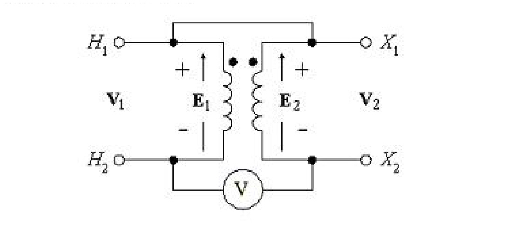
- 1 : 216 V
- 2 : 264 V
- 3 : 2160 V
- 4 : 2640 V
- คำตอบที่ถูกต้อง : 1
ข้อที่ 173 :
- การกระทำในข้อใดที่ไม่จำเป็นต้องทราบขั้วของหม้อแปลงไฟฟ้าก่อน
- 1 : การขนานหม้อแปลงไฟฟ้าแบบออโต้หนึ่งเฟส
- 2 : การขนานหม้อแปลงไฟฟ้าหนึ่งเฟส
- 3 : การขนานหม้อแปลงไฟฟ้าสามเฟส
- 4 : ไม่มีข้อถูก
- คำตอบที่ถูกต้อง : 4
ข้อที่ 174 :
- ใน การต่อหม้อแปลงไฟฟ้าสามเฟสแบบใด ที่เป็นการต่อแบบแปลงแรงดันไฟฟ้าสูงขึ้น หากใช้หม้อแปลงไฟฟ้าหนึ่งเฟสที่มีอัตราส่วน 1 : 1 และมีขนาดพิกัด และคุณสมบัติเหมือนกันจำนวน 3 ชุด
- 1 : Star-Star
- 2 : Star-Delta
- 3 : Delta-Star
- 4 : Delta-Delta
- คำตอบที่ถูกต้อง : 3
ข้อที่ 175 :
- ข้อใดไม่ใช่เงื่อนไขในการนำหม้อแปลงไฟฟ้าหนึ่งเฟสมาต่อขนานกันตั้งแต่ 2 ตัวขึ้นไป
- 1 : จำนวนขั้วแม่เหล็ก (magnetic pole) เท่ากัน
- 2 : แรงดันไฟฟ้าเท่ากัน
- 3 : การต่อขั้ว (porality) ที่เหมือนกันเข้าด้วยกัน
- 4 : เปอร์เซ็นต์อิมพีแดนซ์เท่ากัน
- คำตอบที่ถูกต้อง : 1
ข้อที่ 176 :
- หม้อ แปลงไฟฟ้าหนึ่งเฟส มีอัตราส่วนจำนวนรอบ (turn ratio) 1:2 พิกัดกำลัง 100 VA จงหาแรงดันไฟฟ้าด้านออก หากด้านเข้ามีการต่อแบตเตอรี่ 12 V
- 1 : 0 V
- 2 : 12 V
- 3 : 24 V
- 4 : 100 V
- คำตอบที่ถูกต้อง : 1
ข้อที่ 177 :
- การ นำเอาหม้อแปลงไฟฟ้าหนึ่งเฟส 3 ตัวมาต่อเป็นหม้อแปลงไฟฟ้า 3 เฟส การต่อแบบใดที่สามารถนำหม้อแปลงไฟฟ้าตัวใดตัวหนึ่งออก โดยที่หม้อแปลงสองตัวที่เหลือยังคงทำหน้าที่เป็นหม้อแปลง 3 เฟสได้ แต่พิกัดกำลังจะลดลงเหลือประมาณ 58%
- 1 : Star - Star
- 2 : Star - Delta
- 3 : Delta - Delta
- 4 : Delta - Star
- คำตอบที่ถูกต้อง : 3
ข้อที่ 178 :
- ข้อใดไม่ใช่ส่วนประกอบที่สำคัญของหม้อแปลงไฟฟ้า
- 1 : ขดลวดปฐมภูมิ
- 2 : แกนเหล็ก
- 3 : ขดลวดโรเตอร์
- 4 : ขดลวดทุติยภูมิ
- คำตอบที่ถูกต้อง : 3
ข้อที่ 179 :
- ข้อใดคือนิยามของ การเบี่ยงเบนแรงดันไฟฟ้า (voltage regulation) ของหม้อแปลงไฟฟ้า
- 1 : การเปลี่ยนแปลงของแรงดันไฟฟ้าที่ขั้วด้านทุติยภูมิจากขณะไม่มีภาระไปสู่ขณะขับภาระเต็มพิกัด
- 2 : การเปลี่ยนแปลงของแรงดันไฟฟ้าที่ขั้วด้านทุติยภูมิจากขณะขับภาระเต็มพิกัดไปสู่ขณะขับภาระที่ 50 %
- 3 : การเปลี่ยนแปลงของแรงดันไฟฟ้าที่ขั้วด้านปฐมภูมิจากขณะไม่มีภาระไปสู่ขณะขับภาระเต็มพิกัด
- 4 : การเปลี่ยนแปลงของแรงดันไฟฟ้าที่ขั้วด้านทุติยภูมิจากขณะขับภาระเต็มพิกัดไปสู่ขณะขับภาระที่ 50 %
- คำตอบที่ถูกต้อง : 1
ข้อที่ 180 :
- คุณลักษณะของ Two winding transformer กับ Autotransformer ข้อใดถูกต้อง
- 1 : Two winding transformer มีการสูญเสียต่ำ และราคาถูกกว่า Autotransformer
- 2 : ขดลวดปฐมภูมิ และทุติยภูมิของ Autotransformer แยกจากกันทางไฟฟ้า
- 3 : ขดลวดปฐมภูมิ และทุติยภูมิของ Two winding transformer แยกจากกันทางไฟฟ้า
- 4 : Autotransformer มีน้ำหนักที่มาก และราคาแพงกว่า Two winding transformer
- คำตอบที่ถูกต้อง : 3
ข้อที่ 181 :
- การใช้หม้อแปลงไฟฟ้า 3 เฟส มีลักษณะที่ดีกว่าการใช้หม้อแปลงไฟฟ้าหนึ่งเฟส 3 ตัวมาต่อร่วมกันอย่างไร
- 1 : ราคาถูก และประสิทธิภาพสูง
- 2 : น้ำหนักเบา และใช้พื้นที่ติดตั้งน้อย
- 3 : มีค่าความสูญเสียต่ำกว่า
- 4 : มีคำตอบที่ถูกต้องมากกว่า 1 ข้อ
- คำตอบที่ถูกต้อง : 4
ข้อที่ 182 :
- จาก
รูปเป็นการทดสอบหาขั้ว (porality test) ของหม้อแปลงไฟฟ้าหนึ่งเฟส
ถ้าขั้วของหม้อแปลงไฟฟ้าเป็นดังรูป มิเตอร์วัดแรงดันไฟฟ้า (voltmeter)
ในรูปจะวัดแรงดันไฟฟ้าระหว่างขั้ว H2 และ X2 ได้เท่าใด

- 1 :

- 2 :

- 3 :
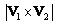
- 4 :
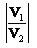
- คำตอบที่ถูกต้อง : 1
ข้อที่ 183 :
- จาก
รูปเป็นการทดสอบหาขั้ว (porality test) ของหม้อแปลงไฟฟ้าหนึ่งเฟส
ถ้าขั้วของหม้อแปลงไฟฟ้าเป็นดังรูป มิเตอร์วัดแรงดันไฟฟ้า (voltmeter)
ในรูปจะวัดแรงดันไฟฟ้าระหว่างขั้ว H2 และ X2 ได้เท่าใด
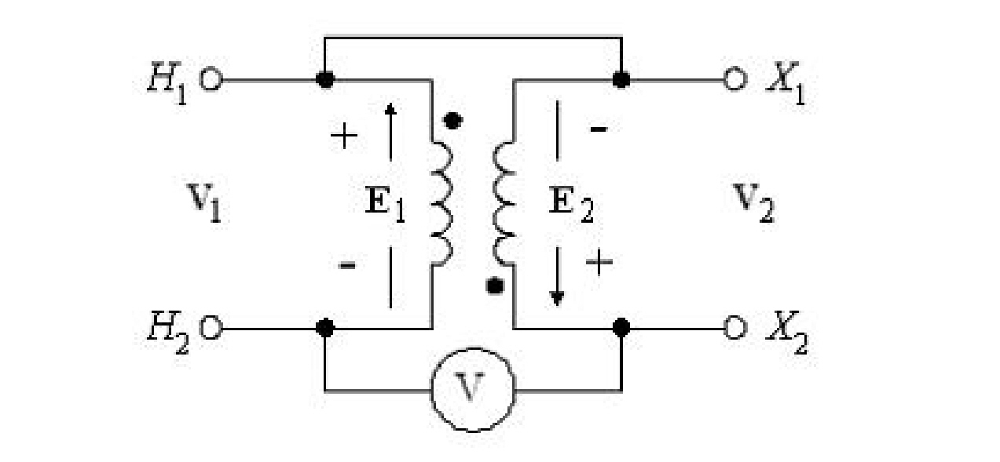
- 1 :
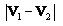
- 2 :
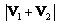
- 3 :

- 4 :

- คำตอบที่ถูกต้อง : 2
ข้อที่ 184 :
- Autotransformer ต่างกับ Two winding transformer อย่างไร
- 1 : ไม่มีขดลวดทุติยภูมิ
- 2 : ขดลวดปฐมภูมิ และทุติยภูมิของ Autotransformer ไม่แยกจากกันทางไฟฟ้า (isolation)
- 3 : ต้องใช้ขดลวดมากกว่า 2 ชุด
- 4 : แรงดันขาออกต้องน้อยกว่าแรงดันขาเข้า
- คำตอบที่ถูกต้อง : 2
ข้อที่ 185 :
- ถ้านำหม้อแปลงไฟฟ้าที่มีพิกัดความถี่ 60 Hz มาทำงานที่ความถี่ 50 Hz ข้อใดต่อไปนี้ถูกต้อง
- 1 : ควรเพิ่มแรงดันไฟฟ้าป้อนเข้าหม้อแปลงไฟฟ้า 16.67 % จากพิกัดเดิม ถ้าไม่คิดถึงปัญหาของฉนวน
- 2 : สามารถช่วยลดขนาดกระแสแมกนีไทส์ซิ่ง (magnetizing current) ได้ประมาณ 16.67 % จากพิกัดเดิม
- 3 : ควรลดแรงดันไฟฟ้าป้อนเข้าหม้อแปลงไฟฟ้า 16.67 % จากพิกัดเดิม
- 4 : ไม่มีข้อใดถูก
- คำตอบที่ถูกต้อง : 3
ข้อที่ 186 :
- การต่อหม้อแปลงไฟฟ้า 3 เฟสแบบใดที่ทำให้เกิดแรงดันฮาร์มอนิกลำดับที่ 3 ในขดลวดของหม้อแปลงไฟฟ้า
- 1 : การต่อขดปฐมภูมิแบบสตาร์ไม่มีสายนิวทรอลและขดทุติยภูมิแบบเดลต้า
- 2 : การต่อขดปฐมภูมิแบบสตาร์มีสายนิวทรอลและขดทุติยภูมิแบบสตาร์ไม่มีสายนิวทรอล
- 3 : การต่อขดปฐมภูมิและขดทุติยภูมิแบบสตาร์ไม่มีสายนิวทรอล
- 4 : การต่อขดปฐมภูมิและขดทุติยภูมิแบบเดลต้า
- คำตอบที่ถูกต้อง : 3
ข้อที่ 187 :
- หม้อ แปลงไฟฟ้า 1 เฟส 10 kVA มีกำลังสูญเสียในแกนเหล็ก (core loss) 50 W และมีกำลังสูญเสียในขดลวด (copper loss) ที่กระแสเต็มพิกัด 200 W จากตัวเลือกที่กำหนด ข้อใดทำให้หม้อแปลงไฟฟ้านี้มีประสิทธิภาพสูงสุด
- 1 : หม้อแปลงไฟฟ้าจ่ายภาระที่ 50 % ของพิกัดภาระ
- 2 : หม้อแปลงไฟฟ้าจ่ายภาระที่ 60 % ของพิกัดภาระ
- 3 : หม้อแปลงไฟฟ้าจ่ายภาระที่ 70 % ของพิกัดภาระ
- 4 : หม้อแปลงไฟฟ้าจ่ายภาระที่ 80 % ของพิกัดภาระ
- คำตอบที่ถูกต้อง : 4
ข้อที่ 188 :
- ถ้า ป้อนแรงดันไฟฟ้า 400 V, 50 Hz ให้กับหม้อแปลงไฟฟ้าที่มีพิกัด 400 V, 60 Hz อยากทราบว่าจำนวนเส้นแรงแม่เหล็ก (magnetic flux) ในแกนเหล็กของหม้อแปลงไฟฟ้า ขณะป้อนแรงดันไฟฟ้าความถี่ 50 Hz มีค่าเป็นกี่เท่าของค่าพิกัดที่ใช้งานที่ความถี่ 60 Hz
- 1 : 0.83 เท่า
- 2 : 0.9 เท่า
- 3 : 1.1 เท่า
- 4 : 1.2 เท่า
- คำตอบที่ถูกต้อง : 4
ข้อที่ 189 :
- หม้อแปลงไฟฟ้าหนึ่งเฟสขนาด 150 kVA, 5000/250 V, 50 Hz มีผลการทดสอบดังนี้
Open circuit test: 250 V, 5.5 A, 205 W และ Short circuit test: 72 V, 30 A, 810 W
หม้อแปลงไฟฟ้านี้มีความสูญเสียรวมเท่าใด
- 1 : 205 W
- 2 : 605 W
- 3 : 810 W
- 4 : 1015 W
- คำตอบที่ถูกต้อง : 4
ข้อที่ 190 :
- หม้อแปลงไฟฟ้าหนึ่งเฟสขนาด 150 kVA, 5000/250 V, 50 Hz มีผลการทดสอบดังนี้
Open circuit test: 250 V, 5.5 A, 205 W และ Short circuit test: 72 V, 30 A, 810 W
เมื่อจ่ายภาระที่พิกัด 250 V, 0.8 PF lagging หม้อแปลงไฟฟ้านี้มีความสูญเสียในแกนเหล็กเท่าใด
- 1 : 205 W
- 2 : 605 W
- 3 : 810 W
- 4 : 1015 W
- คำตอบที่ถูกต้อง : 1
ข้อที่ 191 :
- หม้อแปลงไฟฟ้าหนึ่งเฟสขนาด 150 kVA, 5000/250 V, 50 Hz มีผลการทดสอบดังนี้
Open circuit test: 250 V, 5.5 A, 205 W และ Short circuit test: 72 V, 30 A, 810 W
เมื่อจ่ายภาระที่พิกัด 250 V, 0.8 PF lagging หม้อแปลงไฟฟ้านี้มีความสูญเสียในขดลวดเท่าใด
- 1 : 205 W
- 2 : 810 W
- 3 : 1015 W
- 4 : 605 W
- คำตอบที่ถูกต้อง : 2
ข้อที่ 192 :
- หม้อแปลงไฟฟ้าหนึ่งเฟสขนาด 150 kVA, 5000/250 V, 50 Hz มีผลการทดสอบดังนี้
Open circuit test: 250 V, 5.5 A, 205 W และ Short circuit test: 72 V, 30 A, 810 W
เมื่อจ่ายภาระที่พิกัด 250 V, 0.8 PF lagging หม้อแปลงไฟฟ้านี้มีค่าอัตราส่วนจำนวนรอบ (turn ratio) เท่าใด
- 1 : 20
- 2 : 1/20
- 3 : 200
- 4 : 1/200
- คำตอบที่ถูกต้อง : 1
ข้อที่ 193 :
- หม้อแปลงไฟฟ้าหนึ่งเฟสขนาด 150 kVA, 5000/250 V, 50 Hz มีผลการทดสอบดังนี้
Open circuit test: 250 V, 5.5 A, 205 W และ Short circuit test: 72 V, 30 A, 810 W
พิกัดกระแสไฟฟ้าด้านแรงดันสูงมีค่าเท่าใด
- 1 : 30 A
- 2 : 250 A
- 3 : 500 A
- 4 : 600 A
- คำตอบที่ถูกต้อง : 1
ข้อที่ 194 :
- หม้อแปลงไฟฟ้าหนึ่งเฟสขนาด 150 kVA, 5000/250 V, 50 Hz มีผลการทดสอบดังนี้
Open circuit test: 250 V, 5.5 A, 205 W และ Short circuit test: 72 V, 30 A, 810 W
พิกัดกระแสไฟฟ้าด้านแรงดันต่ำมีค่าเท่าใด
- 1 : 600 A
- 2 : 300 A
- 3 : 30 A
- 4 : 5.5 A
- คำตอบที่ถูกต้อง : 1
ข้อที่ 195 :
- หม้อแปลงไฟฟ้าหนึ่งเฟสขนาด 150 kVA, 5000/250 V, 50 Hz มีผลการทดสอบดังนี้
Open circuit test: 250 V, 5.5 A, 205 W และ Short circuit test: 72 V, 30 A, 810 W
เมื่อจ่ายภาระที่พิกัด 250 V, 0.8 PF lagging หม้อแปลงไฟฟ้านี้มีกำลังไฟฟ้าทุติยภูมิ (secondary power) เท่าใด
- 1 : 150 kW
- 2 : 120 kW
- 3 : 210 kW
- 4 : 115.8 kW
- คำตอบที่ถูกต้อง : 2
ข้อที่ 196 :
- หม้อแปลงไฟฟ้าหนึ่งเฟสขนาด 150 kVA, 5000/250 V, 50 Hz มีผลการทดสอบดังนี้
Open circuit test: 250 V, 5.5 A, 205 W และ Short circuit test: 72 V, 30 A, 810 W
เมื่อพิจารณาทางด้านแรงดันต่ำ ค่าความต้านทานความสูญเสียแกนเหล็ก (core loss resistance: Rc) มีค่าเท่าใด
- 1 : 45.96 ohm
- 2 : 2.48 ohm
- 3 : 2.23 ohm
- 4 : 304.89 ohm
- คำตอบที่ถูกต้อง : 4
ข้อที่ 197 :
- หม้อแปลงไฟฟ้าหนึ่งเฟสขนาด 150 kVA, 5000/250 V, 50 Hz มีผลการทดสอบดังนี้
Open circuit test: 250 V, 5.5 A, 205 W และ Short circuit test: 72 V, 30 A, 810 W
เมื่อพิจารณาทางด้านแรงดันสูง ค่าความต้านทานของขดลวด (Req) มีค่าเท่าใด
- 1 : 0.9 ohm
- 2 : 2.4 ohm
- 3 : 2.23 ohm
- 4 : 1.78 ohm
- คำตอบที่ถูกต้อง : 1
ข้อที่ 198 :
- หม้อแปลงไฟฟ้าหนึ่งเฟสขนาด 150 kVA, 5000/250 V, 50 Hz มีผลการทดสอบดังนี้
Open circuit test: 250 V, 5.5 A, 205 W และ Short circuit test: 72 V, 30 A, 810 W
ค่าลีกเกจรีแอกแต้นซ์ของขดลวด (equivalent leakage reactance: Xeq) มีค่าเท่าใด
- 1 : 0.9 ohm
- 2 : 2.4 ohm
- 3 : 2.23 ohm
- 4 : 304.9 ohm
- คำตอบที่ถูกต้อง : 3
ข้อที่ 199 :
- หม้อ แปลงไฟฟ้าหนึ่งเฟส Core type, 50 Hz มีจำนวนรอบขดลวดด้านแรงดันสูงและด้านแรงดันต่ำ 1000 รอบ และ 500 รอบ ตามลำดับ จำนวนเส้นแรงแม่เหล็กสูงสุดในแกนเหล็ก (maximum magnetic flux) เท่ากับ 0.002 Wb จงหาค่าแรงดันไฟฟ้าเหนี่ยวนำ (induced voltage) ทางด้านแรงดันสูงและด้านแรงดันต่ำตามลำดับ
- 1 : 2000 V, 200 V
- 2 : 444 V, 222 V
- 3 : 400 V, 40 V
- 4 : 222 V, 22 V
- คำตอบที่ถูกต้อง : 2
ข้อที่ 200 :
- หม้อ แปลงไฟฟ้าหนึ่งเฟส Core type, 50 Hz มีจำนวนรอบขดลวดด้านแรงดันสูงและด้านแรงดันต่ำ 2000 รอบ และ 200 รอบ ตามลำดับ จงหาค่าแรงดันไฟฟ้าเหนี่ยวนำ (induced voltage) ทางด้านแรงดันสูงและด้านแรงดันต่ำตามลำดับ เมื่อเส้นแรงแม่เหล็กในแกนเหล็ก (magnetic flux) เท่ากับ 0.005 sin (314.6t)
- 1 : 2220 V, 222 V
- 2 : 222 V, 2220 V
- 3 : 4440 V, 444 V
- 4 : 1570 V, 157 V
- คำตอบที่ถูกต้อง : 1
ข้อที่ 201 :
- หม้อแปลงไฟฟ้าหนึ่งเฟส พิกัด 5 kVA, 200/100 V, 50 Hz จงหาพิกัดกระแสไฟฟ้าด้านแรงดันสูงและด้านแรงดันต่ำตามลำดับ
- 1 : 2.5 A, 50 A
- 2 : 25 A, 2.5 A
- 3 : 25 A, 50 A
- 4 : 50 A, 25 A
- คำตอบที่ถูกต้อง : 3
ข้อที่ 202 :
- หม้อ
แปลงไฟฟ้าหนึ่งเฟส มีอัตราส่วนของด้านแรงดันสูง:ด้านแรงดันต่ำเท่ากับ 2:1
ค่าอิมพีแดนซ์รวมของหม้อแปลงเป็นดังรูป ถ้าแรงดันไฟฟ้าด้านแรงสูง (V1) เท่ากับ 200 V และกระแสไฟฟ้า (I1) เป็นดังรูป แรงดันไฟฟ้าด้านแรงต่ำ (V2) มีค่าเท่าใด
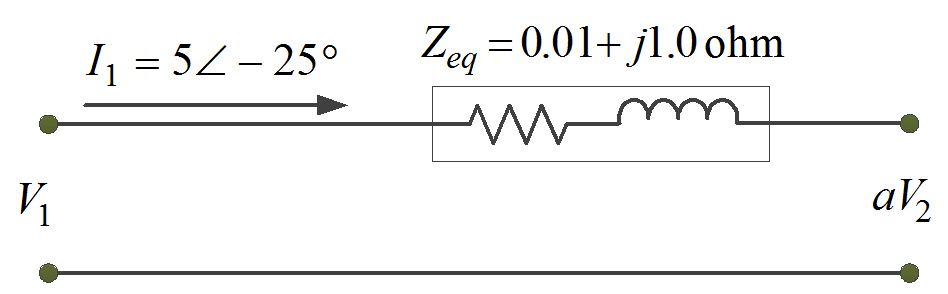
- 1 :
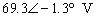
- 2 :
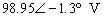
- 3 :
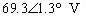
- 4 :
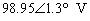
- คำตอบที่ถูกต้อง : 4
ข้อที่ 203 :
- หม้อแปลงไฟฟ้า 3 เฟส พิกัด 500 kVA, 24 kV/400 V, Delta - Star connection จงหาขนาดพิกัดกระแสไฟฟ้าของหม้อแปลงไฟฟ้านี้
- 1 : 6.95/416.7 A
- 2 : 12.03/721.7 A
- 3 : 20.83/1250 A
- 4 : 20.83/416.7 A
- คำตอบที่ถูกต้อง : 2
ข้อที่ 204 :
- มิเตอร์ วัดกระแสไฟฟ้า (ammeter) 5 A ต่อกับหม้อแปลงกระแส (current transformer: CT) ที่มีอัตราส่วน (ratio) 500 : 5 A ถ้ากระแสไฟฟ้าด้านปฐมภูมิ (primary current) ของ CT เท่ากับ 400 A กระแสไฟฟ้าที่มิเตอร์วัดกระแสไฟฟ้าจะมีค่าเท่าใด
- 1 : 1 A
- 2 : 2 A
- 3 : 3 A
- 4 : 4 A
- คำตอบที่ถูกต้อง : 4
ข้อที่ 205 :
- หม้อ แปลงแรงดัน (voltage transformer: VT) ที่มีอัตราส่วน (ratio) 2000 : 120 V ต่อกับ มิเตอร์วัดแรงดันไฟฟ้า (voltmeter) 120 V ถ้ามีแรงดันไฟฟ้าด้านปฐมภูมิ (primary voltage) ของ VT เท่ากับ 1200 V แรงดันไฟฟ้าที่มิเตอร์วัดแรงดันไฟฟ้าจะมีค่าเท่าใด
- 1 : 50 V
- 2 : 62 V
- 3 : 72 V
- 4 : 80 V
- คำตอบที่ถูกต้อง : 3
ข้อที่ 206 :
- หม้อ
แปลงไฟฟ้าในอุดมคติพิกัด 2200/110 V, 50 Hz
ภาระทางไฟฟ้าด้านทุติยภูมิมีค่าเท่ากับ 20 ohm ดังรูป
เมื่อจ่ายแรงดันไฟฟ้าให้กับภาระที่พิกัด 110 V ให้หาค่าอิมพิแดนซ์ของภาระ
(load impedance) เมื่อพิจารณามาอยู่ทางด้านปฐมภูมิ (primary)
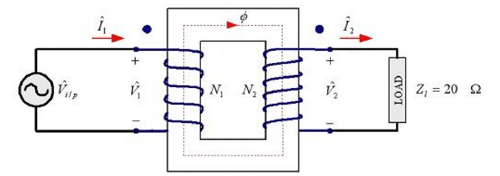
- 1 : 20 ohm
- 2 : 400 ohm
- 3 : 4000 ohm
- 4 : 8000 ohm
- คำตอบที่ถูกต้อง : 4
ข้อที่ 207 :
- หม้อ
แปลงไฟฟ้าในอุดมคติพิกัด 440/220 V, 50 Hz
ภาระทางไฟฟ้าด้านทุติยภูมิมีค่าแสดงดังรูป
เมื่อจ่ายแรงดันไฟฟ้าให้กับภาระที่พิกัด 220 V
ให้หาค่าขนาดของกระแสไฟฟ้าทางด้านทุติยภูมิ (secondary current)
เมื่อพิจารณามาอยู่ทางด้านปฐมภูมิ (primary)
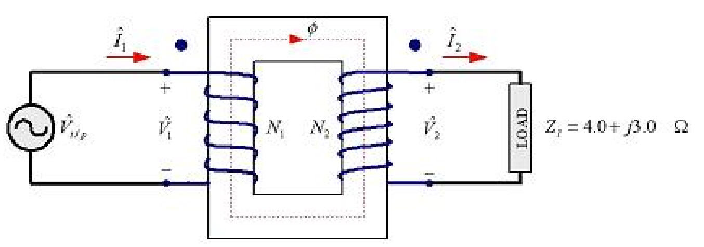
- 1 : 22 A
- 2 : 44 A
- 3 : 110 A
- 4 : 11 A
- คำตอบที่ถูกต้อง : 1
ข้อที่ 208 :
- หม้อ
แปลงไฟฟ้าหนึ่งเฟสพิกัด 50 kVA, 2400/120 V, 50 Hz
เมื่อจ่ายกำลังไฟฟ้าเต็มพิกัดแรงดันไฟฟ้า 120 V
ให้กับภาระที่มีค่าตัวประกอบกำลังไฟฟ้า 0.8 PF lagging
ให้หาค่าของกระแสไฟฟ้าที่จ่ายให้กับภาระ
- 1 : 20.83 A
- 2 : 416.67 A
- 3 : 41.67 A
- 4 : 208.3 A
- คำตอบที่ถูกต้อง : 2
ข้อที่ 209 :
- หม้อ แปลงไฟฟ้า 3 เฟส พิกัด 2000 kVA, 24 kV/400 V, Delta - Star connection ให้หาพิกัดกระแสเฟสทางด้านปฐมภูมิ (rated primary phase current)
- 1 : 27.8 A
- 2 : 48.1 A
- 3 : 83.3 A
- 4 : 58.9 A
- คำตอบที่ถูกต้อง : 1
ข้อที่ 210 :
- ข้อใดไม่ใช่จุดเด่นของ Autotransformer เมื่อเปรียบเทียบกับ Two winding transformer
- 1 : ประสิทธิภาพสูง
- 2 : การเบี่ยงเบนแรงดันไฟฟ้า (voltage regulation) ต่ำ
- 3 : ราคาถูก
- 4 : น้ำหนักหม้อแปลงต่อค่าพิกัดกำลังไฟฟ้าของหม้อแปลงมาก
- คำตอบที่ถูกต้อง : 4
ข้อที่ 211 :
- ใน สภาวะไม่มีภาระ ถ้าหม้อแปลงไฟฟ้า 1 เฟส มีแรงดันไฟฟ้ากระแสไฟฟ้าสลับป้อนเข้า 220 V ใช้กำลังไฟฟ้า 300 W ถ้าแรงดันไฟฟ้าที่ป้อนเข้าสู่หม้อแปลงไฟฟ้าลดลงเหลือ 198 V จะใช้กำลังไฟฟ้าเท่าใด
- 1 : 270 W
- 2 : 333 W
- 3 : 370 W
- 4 : 243 W
- คำตอบที่ถูกต้อง : 4
ข้อที่ 212 :
- หม้อแปลงไฟฟ้าหนึ่งเฟสพิกัด 50 kVA, 7200 V/208 V, 50 Hz หม้อแปลงไฟฟ้านี้มีพิกัดกระแสไฟฟ้าด้านแรงดันสูงเท่าใด
- 1 : 238 A
- 2 : 500 A
- 3 : 83.3 A
- 4 : 6.9 A
- คำตอบที่ถูกต้อง : 4
ข้อที่ 213 :
- ข้อใดกล่าวไม่ถูกต้อง
- 1 : กำลังไฟฟ้าที่ได้จากการทดสอบหม้อแปลงไฟฟ้าแบบเปิดวงจร (open circuit test) จะเป็นความสูญเสียที่เกิดขึ้นในแกนเหล็ก (core loss)
- 2 : กำลังไฟฟ้าที่ได้จากการทดสอบหม้อแปลงไฟฟ้าแบบลัดวงจร (short circuit test) จะเป็นความสูญเสียที่เกิดขึ้นในขดลวด (copper loss)
- 3 : การทดสอบหม้อแปลงไฟฟ้าแบบลัดวงจร (short circuit test) จะจ่ายแรงดันไฟฟ้าทดสอบจนถึงค่าพิกัดกระแสไฟฟ้าของด้านทดสอบ
- 4 : ความสูญเสียรวมในหม้อแปลงไฟฟ้าคือ กำลังไฟฟ้าที่ได้จากการคำนวณของค่าความสูญเสียที่เกิดขึ้นในขดลวดทั้งด้าน ปฐมภูมิและด้านทุตติยภูมิ
- คำตอบที่ถูกต้อง : 4
ข้อที่ 214 :
- จากรูปเป็นการต่อหม้อแปลงไฟฟ้า 3 เฟสแบบใด
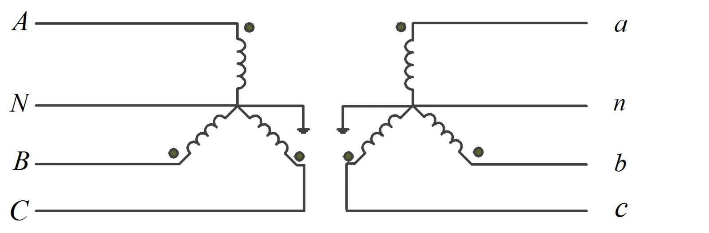
- 1 : Delta - Delta
- 2 : Star - Star
- 3 : Delta - Star
- 4 : Star - Delta
- คำตอบที่ถูกต้อง : 2
ข้อที่ 215 :
- จากรูปเป็นการต่อหม้อแปลงไฟฟ้า 3 เฟสแบบใด
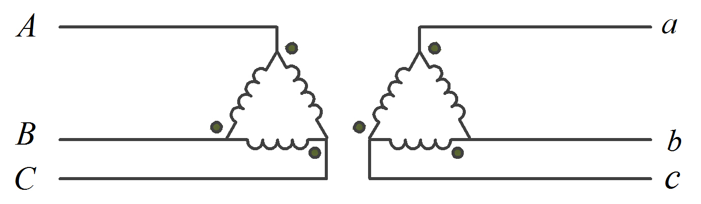
- 1 : Delta - Delta
- 2 : Star - Star
- 3 : Delta - Star
- 4 : Star - Delta
- คำตอบที่ถูกต้อง : 1
ข้อที่ 216 :
- จากรูปเป็นการต่อหม้อแปลงไฟฟ้า 3 เฟสแบบใด
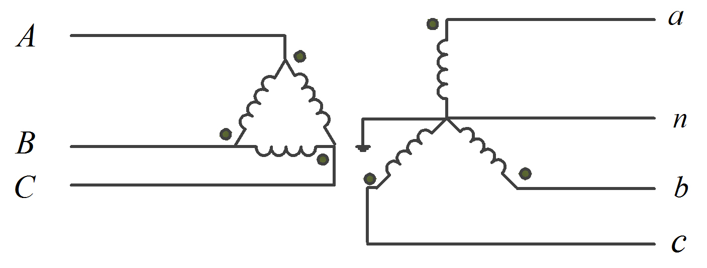
- 1 : Delta - Delta
- 2 : Star - Star
- 3 : Delta - Star
- 4 : Star - Delta
- คำตอบที่ถูกต้อง : 3
ข้อที่ 217 :
- หม้อแปลงไฟฟ้า 3 เฟส พิกัด 500 kVA, 24 kV/240 V, Delta - Delta connection จงหาขนาดพิกัดกระแสไฟฟ้าของหม้อแปลงไฟฟ้านี้
- 1 : 6.95/416.7 A
- 2 : 12.03/1202.8 A
- 3 : 20.83/2083 A
- 4 : 20.83/416.7 A
- คำตอบที่ถูกต้อง : 2
ข้อที่ 218 :
- หม้อแปลงไฟฟ้า 3 เฟส พิกัด 500 kVA, 24 kV/240 V, Delta - Delta connection จงหาขนาดกระแสไฟฟ้าเฟสของหม้อแปลงไฟฟ้านี้
- 1 : 6.95/694.5 A
- 2 : 12.03/1202.8 A
- 3 : 20.83/2083 A
- 4 : 20.83/416.7 A
- คำตอบที่ถูกต้อง : 1
ข้อที่ 219 :
- หม้อแปลงไฟฟ้า 3 เฟส พิกัด 500 kVA, 24 kV/240 V, Star - Star connection จงหาพิกัดกระแสไฟฟ้าของหม้อแปลงไฟฟ้านี้
- 1 : 6.95/416.7 A
- 2 : 12.03/1202.8 A
- 3 : 20.83/2083 A
- 4 : 20.83/416.7 A
- คำตอบที่ถูกต้อง : 2
ข้อที่ 220 :
- หม้อแปลงไฟฟ้า 3 เฟส พิกัด 500 kVA, 24 kV/240 V, Star - Star connection จงหาขนาดกระแสไฟฟ้าเฟสของหม้อแปลงไฟฟ้านี้
- 1 : 6.95/694.5 A
- 2 : 12.03/1202.8 A
- 3 : 20.83/2083 A
- 4 : 20.83/416.7 A
- คำตอบที่ถูกต้อง : 2
เนื้อหาวิชา : 43 : AC machines construction
ข้อที่ 221 :
- การต่อขนานเครื่องกำเนิดไฟฟ้าซิงโครนัสสามเฟสกับระบบไฟฟ้า (synchronization) ข้อใดที่กล่าวไม่ถูกต้อง
- 1 : การตรวจสอบแบบ Three-dark ถ้าหลอดไฟดับสนิททั้งสามดวงโดยไม่มีการเปลี่ยนแปลงแสดงว่าสามารถทำการขนานเครื่องจักรกับระบบไฟฟ้าได้
- 2 : การตรวจสอบแบบ Three-dark ถ้าหลอดไฟมีลักษณะที่ สว่าง-ดับ พร้อมกันทั้งสามดวงตลอดเวลาแสดงว่าความถี่เท่ากันแต่ลำดับเฟสไม่ตรงกัน
- 3 : การตรวจสอบแบบ One-dark Two-bright ถ้าหลอดไฟมีลักษณะที่ดับ 1 ดวงและสว่าง 2 ดวง สลับกันไปตลอดเวลาแสดงว่าลำดับเฟสตรงกันแต่ความถี่ไม่เท่ากัน
- 4 : การขนานเครื่องจักรกับระบบไฟฟ้า ลำดับเฟสต้องเหมือนกัน ความถี่ต้องเท่ากัน และแรงดันไฟฟ้าต้องเท่ากัน
- คำตอบที่ถูกต้อง : 3
ข้อที่ 222 :
- ตัวเลือกใดเป็นส่วนที่อยู่ในมอเตอร์เหนี่ยวนำ (induction motor)
- 1 : อินเตอร์โพล (inter pole)
- 2 : ขดลวดชดเชย (compensating winding)
- 3 : โรเตอร์แบบกรงกระรอก (squirrel cage rotor)
- 4 : ซี่คอมมิวเตเตอร์ (commutator)
- คำตอบที่ถูกต้อง : 3
ข้อที่ 223 :
- เมื่อ ต้องการใช้งานเครื่องกำเนิดไฟฟ้าแบบซิงโครนัส (synchronous generator) ผลิตไฟฟ้า โดยต้นกำลังเป็นพลังงานน้ำจากเขื่อน ควรเลือกใช้โรเตอร์เป็นแบบใดจึงเหมาะสม
- 1 : โรเตอร์แบบทรงกระบอก (cylindrical rotor)
- 2 : โรเตอร์แบบขั้วยื่น (salient pole rotor)
- 3 : โรเตอร์แบบพันขวดลวด (wound rotor)
- 4 : โรเตอร์แบบกรงกระรอก (squirrel cage rotor)
- คำตอบที่ถูกต้อง : 2
ข้อที่ 224 :
- มอเตอร์ที่ใช้ไฟฟ้ากระแสสลับในข้อใดที่ไม่เกิดสนามแม่เหล็กหมุนจากขดลวดสเตเตอร์
- 1 : มอเตอร์เหนี่ยวนำ (induction motor)
- 2 : มอเตอร์ซิงโครนัส (synchronous motor)
- 3 : มอเตอร์รีลักแทนซ์ (reluctance motor)
- 4 : มอเตอร์ยูนิเวอร์แซล (universal motor)
- คำตอบที่ถูกต้อง : 4
ข้อที่ 225 :
- มอเตอร์เหนี่ยวนำหนึ่งเฟสในข้อใดให้แรงบิดเริ่มต้นหมุน (starting torque) สูงสุด
- 1 : Split phase motor
- 2 : Capacitor start motor
- 3 : Permanent split capacitor motor
- 4 : Shaded pole motor
- คำตอบที่ถูกต้อง : 2
ข้อที่ 226 :
- ข้อใดเป็นส่วนประกอบของเครื่องจักรกลไฟฟ้าเหนี่ยวนำ (induction machine)
- 1 : โรเตอร์แบบพันขดลวด (wound rotor) และ สเตเตอร์ (stator)
- 2 : ขดลวดสร้างสนามแม่เหล็ก (field winding) และ โรเตอร์ (rotor)
- 3 : ขดลวดสร้างสนามแม่เหล็ก (field winding) และ ขดลวดอาร์เมเจอร์ (armature winding)
- 4 : ขดลวดสร้างสนามแม่เหล็ก (field winding) และ โรเตอร์แบบกรงกระรอก (squirrel cage rotor)
- คำตอบที่ถูกต้อง : 1
ข้อที่ 227 :
- ซิงโครนัสรีแอคแทนซ์ (synchronous reactance) เกิดจากสนามแม่เหล็กส่วนใดของเครื่องจักรกลไฟฟ้าซิงโครนัส
- 1 : สนามแม่เหล็กอาร์เมเจอร์กับสนามแม่เหล็กรั่ว
- 2 : สนามแม่เหล็กอาร์เมเจอร์กับสนามแม่เหล็กของขั้วแม่เหล็ก
- 3 : สนามแม่เหล็กรั่วกับสนามแม่เหล็กของขั้วแม่เหล็ก
- 4 : สนามแม่เหล็กรวมทั้งหมดของเครื่องจักรกลไฟฟ้าซิงโครนัส
- คำตอบที่ถูกต้อง : 1
ข้อที่ 228 :
- ข้อใดไม่ใช่หน้าที่ของขดลวดสเตเตอร์ของเครื่องจักรกลไฟฟ้ากระแสสลับ (AC machine)
- 1 : สร้างสนามแม่เหล็กหมุน (rotating magnetic field)
- 2 : ส่งกำลังทางกลออกกรณีทำงานเป็นมอเตอร์
- 3 : ส่งกำลังไฟฟ้าออกกรณีทำงานเป็นเครื่องกำเนิดไฟฟ้า
- 4 : รับกำลังไฟฟ้าเข้ากรณีทำงานเป็นมอเตอร์
- คำตอบที่ถูกต้อง : 2
ข้อที่ 229 :
- ข้อใดเป็นส่วนที่มีการเคลื่อนที่ในการทำงานของเครื่องกำเนิดไฟฟ้ากระแสสลับ (AC machine)
- 1 : เปลือกและโครง (machine frame)
- 2 : ขั้วแม่เหล็ก (magnetic pole)
- 3 : แปลงถ่านและแบริ่ง (brush and bearing)
- 4 : แกนเหล็กอาร์เมเจอร์ (armature core)
- คำตอบที่ถูกต้อง : 2
ข้อที่ 230 :
- เมื่อ จ่ายแรงดันไฟฟ้า 3 เฟส 400 V, 50 Hz ให้มอเตอร์ไฟฟ้ากระแสสลับ (AC motor) ตัวหนึ่ง ปรากฏว่ามอเตอร์นี้หมุนที่ความเร็วรอบ 980 rpm มอเตอร์นี้น่าจะเป็นมอเตอร์ใดในตัวเลือกต่อไปนี้
- 1 : มอเตอร์ซิงโครนัส 2 poles
- 2 : มอเตอร์ซิงโครนัส 4 poles
- 3 : มอเตอร์เหนี่ยวนำ 4 poles
- 4 : มอเตอร์เหนี่ยวนำ 6 poles
- คำตอบที่ถูกต้อง : 4
ข้อที่ 231 :
- หน้าที่หลักของ Damper bar ในเครื่องจักรกลไฟฟ้าคือข้อใด
- 1 : ลดการแกว่งตัวของโรเตอร์ของเครื่องจักรกลไฟฟ้าซิงโครนัส
- 2 : ลดการแกว่งตัวของโรเตอร์ของเครื่องจักรกลไฟฟ้ากระแสตรง
- 3 : ลดการเปลี่ยนแปลงกระแสไฟฟ้าในขดลวดอาร์มาเจอร์ของเครื่องจักรกลไฟฟ้าซิงโครนัส
- 4 : ลดการเปลี่ยนแปลงกระแสไฟฟ้าในขดลวดอาร์มาเจอร์ของเครื่องจักรกลไฟฟ้ากระแสตรง
- คำตอบที่ถูกต้อง : 1
ข้อที่ 232 :
- เครื่องจักรกลไฟฟ้าประเภทใดต้องการกระแสไฟฟ้ากระตุ้นจากแหล่งจ่ายแรงดันไฟฟ้ากระแสตรงภายนอก
- 1 : เครื่องกำเนิดไฟฟ้าเหนี่ยวนำ (induction generator)
- 2 : มอเตอร์ซิงโครนัส (synchronous motor)
- 3 : มอเตอร์รีลักแทนซ์ (reluctance motor)
- 4 : มอเตอร์เหนี่ยวนำ (induction motor)
- คำตอบที่ถูกต้อง : 2
ข้อที่ 233 :
- ทิศทางแรงเคลื่อนไฟฟ้าเหนี่ยวนำ (induced emf) ในลวดตัวนำของเครื่องจักรกลไฟฟ้าสามารถเปลี่ยนแปลงได้โดยวิธีใด
- 1 : ลดขนาดลวดตัวนำ
- 2 : กลับทิศทางสนามแม่เหล็ก
- 3 : เพิ่มความยาวลวดตัวนำ
- 4 : เพิ่มขนาดสนามแม่เหล็ก
- คำตอบที่ถูกต้อง : 2
ข้อที่ 234 :
- แรงเคลื่อนไฟฟ้าเหนี่ยวนำ (induced emf) ของลวดตัวนำเดียวในสนามแม่เหล็กที่มี 4 ขั้วแม่เหล็ก จะมีจำนวนกี่ cycle ต่อการหมุน 1 รอบ
- 1 : 1 cycle
- 2 : 2 cycles
- 3 : 4 cycles
- 4 : 8 cycles
- คำตอบที่ถูกต้อง : 2
ข้อที่ 235 :
- แรงเคลื่อนไฟฟ้าเหนี่ยวนำสูงสุด (maximum induced emf) ในลวดตัวนำเดียวภายในสนามแม่เหล็กจะเกิดขึ้นเมื่อขดลวดวางอยู่ในลักษณะใด
- 1 : ตั้งฉากกับทิศทางสนามแม่เหล็ก
- 2 : ขนานกับทิศทางสนามแม่เหล็ก
- 3 : ทำมุม 30 º กับทิศทางสนามแม่เหล็ก
- 4 : ทำมุม 45 º กับทิศทางสนามแม่เหล็ก
- คำตอบที่ถูกต้อง : 1
ข้อที่ 236 :
- มอเตอร์ ไฟฟ้ากระแสสลับ (AC motor) ที่มีป้ายบอกพิกัดไม่ชัดเจน เห็นเพียงค่าความถี่ 50 Hz และความเร็วรอบที่ภาระพิกัดเท่ากับ 1420 rpm มอเตอร์เครื่องนี้ควรเป็นมอเตอร์แบบใด
- 1 : มอเตอร์เหนี่ยวนำ 2 poles
- 2 : มอเตอร์เหนี่ยวนำ 4 poles
- 3 : มอเตอร์ซิงโครนัส 2 poles
- 4 : มอเตอร์ซิงโครนัส 4 poles
- คำตอบที่ถูกต้อง : 2
ข้อที่ 237 :
- จากรูปข้อใดกล่าวไม่ถูกต้อง
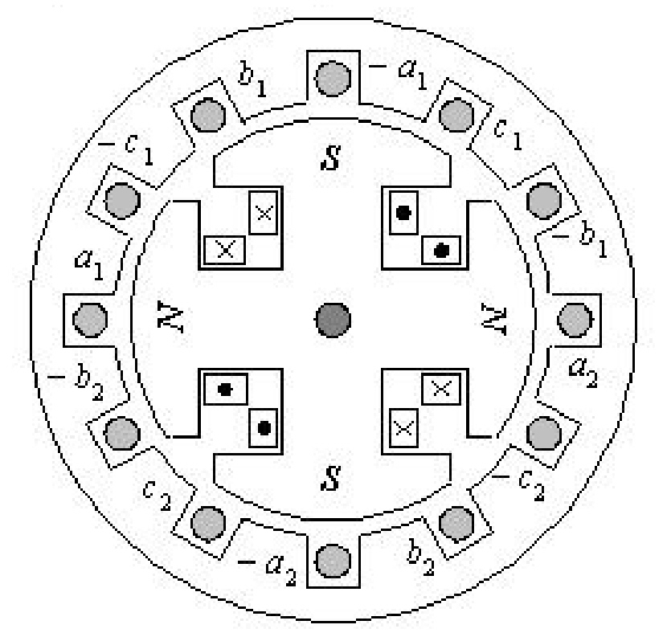
- 1 : เป็นโครงสร้างของเครื่องจักรกลไฟฟ้าซิงโครนัส
- 2 : เครื่องจักรกลไฟฟ้านี้มี 4 poles
- 3 : โรเตอร์เป็นแบบขั้วยื่น (salient pole rotor)
- 4 : โรเตอร์เป็นแบบทรงกระบอก (cylindrical rotor)
- คำตอบที่ถูกต้อง : 4
ข้อที่ 238 :
- แกนของขดลวดอาร์เมเจอร์เฟส a กับ b ของ Three phase armature winding ที่มี 4 ขั้วแม่เหล็ก จะวางห่างกันเท่าใด
- 1 : 45 mechanical degree
- 2 : 60 mechanical degree
- 3 : 90 mechanical degree
- 4 : 120 mechanical degree
- คำตอบที่ถูกต้อง : 2
ข้อที่ 239 :
- แกน ของขดลวดอาร์เมเจอร์ของ Main winding และ Auxiliary winding ของมอเตอร์เหนี่ยวนำหนึ่งเฟส(single phase induction motor) แบบ Capacitor start ที่มี 4 ขั้วแม่เหล็ก จะวางห่างกันเท่าใด
- 1 : 45 mechanical degree
- 2 : 60 mechanical degree
- 3 : 90 mechanical degree
- 4 : 120 mechanical degree
- คำตอบที่ถูกต้อง : 1
ข้อที่ 240 :
- มอเตอร์ไฟฟ้ากระแสสลับ (AC motor) ตัวหนึ่ง ทำงานที่ความเร็วรอบ 1500 rpm มอเตอร์นี้น่าจะเป็นมอเตอร์ใดในตัวเลือกต่อไปนี้
- 1 : มอเตอร์ซิงโครนัส 2 poles
- 2 : มอเตอร์ซิงโครนัส 4 poles
- 3 : มอเตอร์เหนี่ยวนำ 4 poles
- 4 : มอเตอร์เหนี่ยวนำ 6 poles
- คำตอบที่ถูกต้อง : 2
ข้อที่ 241 :
- ข้อใดไม่ใช่ลักษณะของโรเตอร์ในเครื่องจักรกลไฟฟ้ากระแสสลับ (AC machines)
- 1 : โรเตอร์แบบทรงกระบอก (cylindrical rotor)
- 2 : โรเตอร์แบบขั้วยื่น (salient pole rotor)
- 3 : โรเตอร์แบบพันขวดลวด (wound rotor)
- 4 : ไม่มีคำตอบที่ถูกต้อง
- คำตอบที่ถูกต้อง : 4
ข้อที่ 242 :
- ใน การออกแบบเครื่องกำเนิดไฟฟ้ากระแสสลับ หากต้องการให้มีแรงดันไฟฟ้าที่ผลิตได้เพิ่มขึ้น 2 เท่าสามารถทำได้อย่างไรจากตัวเลือกนี้ โดยที่ต้นกำลัง (prime mover) ที่ขับยังคงกำลังขับและมีความเร็วรอบเท่าเดิม (หากโครงสร้างของเครื่องกำเนิดไฟฟ้านี้สามารถทำได้โดยไม่มีข้อจำกัด)
- 1 : เพิ่มขนาดลวดตัวนำของขดลวดอาร์มาเจอร์ในเครื่องกำเนิดไฟฟ้าขึ้น 2 เท่า
- 2 : ลดขนาดลวดตัวนำของขดลวดอาร์มาเจอร์ในเครื่องกำเนิดไฟฟ้าลง 2 เท่า
- 3 : เพิ่มจำนวนรอบของขดลวดอาร์มาเจอร์ในเครื่องกำเนิดไฟฟ้าขึ้น 2 เท่า
- 4 : ลดจำนวนรอบของขดลวดอาร์มาเจอร์ในเครื่องกำเนิดไฟฟ้าลง 2 เท่า
- คำตอบที่ถูกต้อง : 3
ข้อที่ 243 :
- ข้อใดคือส่วนประกอบที่มีอยู่ในเครื่องจักรกลไฟฟ้ากระแสสลับ แต่ไม่ได้อยู่ในเครื่องจักรกลไฟฟ้ากระแสตรง
- 1 : ขดลวดอาร์มาเจอร์ (armature winding)
- 2 : ขดลวดสร้างสนามแม่เหล็ก (field winding)
- 3 : วงแหวนลื่น (slip ring)
- 4 : แปรงถ่าน (brush)
- คำตอบที่ถูกต้อง : 3
ข้อที่ 244 :
- เครื่องจักรกลไฟฟ้าเหนี่ยวนำ 3 เฟส ขณะทำงานมีค่า slip เป็นลบ เครื่องจักรกลไฟฟ้านี้กำลังทำงานอยู่ในสภาวะใด
- 1 : สภาวะมอเตอร์
- 2 : สภาวะเครื่องกำเนิดไฟฟ้า
- 3 : สภาวะปลั๊กกิ้ง
- 4 : สภาวะกลับทางหมุน
- คำตอบที่ถูกต้อง : 2
ข้อที่ 245 :
- หาก ต้องการผลิตไฟฟ้าที่ความถี่ 50 Hz โดยเครื่องกำเนิดไฟฟ้าซิงโครนัส ที่ต้นกำลัง (prime mover) มีความเร็วรอบต่ำ 250 rpm ควรใช้เครื่องกำเนิดไฟฟ้าซิงโครนัสกี่ขั้วแม่เหล็ก
- 1 : 8 poles
- 2 : 16 poles
- 3 : 24 poles
- 4 : 32 poles
- คำตอบที่ถูกต้อง : 3
เนื้อหาวิชา : 44 : Steady state performance and analysis of induction machines
ข้อที่ 246 :
- มอเตอร์ เหนี่ยวนำ 3 เฟส 50 Hz เมื่อไม่มีภาระทางกลมอเตอร์มีความเร็วรอบ 1498 rpm มอเตอร์นี้จะมีความเร็วรอบประมาณเท่าไรเมื่อทำงานเต็มพิกัด ถ้ามี Per-unit slip ที่พิกัดเท่ากับ 0.033
- 1 : 1480 rpm
- 2 : 1470 rpm
- 3 : 1460 rpm
- 4 : 1450 rpm
- คำตอบที่ถูกต้อง : 4
ข้อที่ 247 :
- มอเตอร์ เหนี่ยวนำ 3 เฟส 50 HP, 4 poles, star connection ขณะทำงานที่พิกัด (full load) มีความเร็วรอบ 1460 rpm โดยมี Stator and rotor copper loss 1.6 kW, Core loss 1.2 kW, Friction and windage loss 950 W กำหนดให้ไม่คิด Stray load loss จงหาค่าประสิทธิภาพของมอเตอร์เหนี่ยวนำเมื่อทำงานที่พิกัด (1 HP = 746 W)
- 1 : 85 %
- 2 : 87 %
- 3 : 93 %
- 4 : 90 %
- คำตอบที่ถูกต้อง : 4
ข้อที่ 248 :
- มอเตอร์ เหนี่ยวนำ 3 เฟส 380 V, 50 Hz ขณะจ่ายภาระที่ PF 0.85 lagging ใช้กระแสไฟฟ้า 60 A โดยมอเตอร์มีกำลังสูญเสียคือ Stator copper loss 2 kW, Rotor copper loss 700 W, Core loss 1800 W, Friction and windage loss 600 W กำหนดให้ไม่คิด Stray load loss จงหาค่าความสูญเสียในขดลวดทั้งหมด
- 1 : 2.1 kW
- 2 : 3.3 kW
- 3 : 2.7 kW
- 4 : 5.1 kW
- คำตอบที่ถูกต้อง : 3
ข้อที่ 249 :
- มอเตอร์ เหนี่ยวนำ 3 เฟส 380 V, 10 HP, 4 poles, 50 Hz, star connection ทำงานที่ภาระเต็มพิกัด (full load) มี slip 5 % จงหาค่าความถี่ไฟฟ้าที่โรเตอร์ (rotor frequency) (1 HP = 746 W)
- 1 : 1.5 Hz
- 2 : 2.5 Hz
- 3 : 3.5 Hz
- 4 : 4.5 Hz
- คำตอบที่ถูกต้อง : 2
ข้อที่ 250 :
- มอเตอร์เหนี่ยวนำ 3 เฟสพิกัด 18.5 kW, 380 V, 50 Hz, 2850 rpm, star connection จงหาจำนวนขั้วแม่เหล็กของมอเตอร์นี้
- 1 : 2 pole
- 2 : 4 poles
- 3 : 6 poles
- 4 : 8 poles
- คำตอบที่ถูกต้อง : 1
ข้อที่ 251 :
- มอเตอร์ เหนี่ยวนำ 3 เฟสพิกัด 18.5 kW, 380 V, 50 Hz, 298.4 rad/s, star connection จงหาค่าแรงบิดทางกล (output torque) ของมอเตอร์ เมื่อมอเตอร์ทำงานที่ภาระเต็มพิกัด (full load)
- 1 : 62 N.m
- 2 : 123 N.m
- 3 : 32 N.m
- 4 : 157 N.m
- คำตอบที่ถูกต้อง : 1
ข้อที่ 252 :
- มอเตอร์ เหนี่ยวนำสามเฟสพิกัด 18.5 kW, 380 V, 50 Hz, 2850 rpm, ต่อแบบ star ให้คำนวณหาค่า slip ของมอเตอร์ เมื่อมอเตอร์ทำงานที่เต็มพิมอเตอร์เหนี่ยวนำ 3 เฟสพิกัด 18.5 kW, 380 V, 50 Hz, 2850 rpm, star connection ให้หาค่า slip ของมอเตอร์ เมื่อมอเตอร์ทำงานที่ภาระเต็มพิกัด (full load)
- 1 : 0.05
- 2 : 0.053
- 3 : 0.06
- 4 : 0.047
- คำตอบที่ถูกต้อง : 1
ข้อที่ 253 :
- อัตรา ส่วนระหว่าง กำลังไฟฟ้าที่จ่ายให้โรเตอร์ (power transfer across air gap) กับกำลังไฟฟ้าที่ออกจากโรเตอร์ (electromagnetic power) ตรงกับตัวเลือกใด
- 1 : 1/(1-s)
- 2 : 1-s
- 3 : s
- 4 : 1/s
- คำตอบที่ถูกต้อง : 1
ข้อที่ 254 :
- มอเตอร์ เหนี่ยวนำ 3 เฟสพิกัด 380 V, 6 poles, 50 Hz ขณะมอเตอร์ทำงานที่ slip 3 % มีค่ากำลังไฟฟ้าที่จ่ายให้กับโรเตอร์เท่ากับ 20 kW ให้คำนวณหาค่าแรงบิดแม่เหล็กไฟฟ้า (electromagnetic torque) ของมอเตอร์
- 1 : 12.7 N.m
- 2 : 19.1 N.m
- 3 : 127 N.m
- 4 : 191 N.m
- คำตอบที่ถูกต้อง : 4
ข้อที่ 255 :
- มอเตอร์ เหนี่ยวนำพิกัด 1 HP ขณะทำงานที่ภาระเต็มพิกัด (full load) มอเตอร์หมุนด้วยความเร็วรอบ 146 rad/s มอเตอร์ตัวนี้มีค่าแรงบิดที่พิกัด (rated torque) เท่าใด (1 HP= 746 W)
- 1 : 0.85 N.m
- 2 : 2.1 N.m
- 3 : 1.7 N.m
- 4 : 5.1 N.m
- คำตอบที่ถูกต้อง : 4
ข้อที่ 256 :
- มอเตอร์เหนี่ยวนำ 3 เฟสพิกัด 3 kW, 4 poles, 380 V, 1450 rpm, 50 Hz มีพิกัดกำลังด้านออก (rated output power) เท่าใด
- 1 : 400 W
- 2 : 1450 W
- 3 : 3000 W
- 4 : 19.76 W
- คำตอบที่ถูกต้อง : 3
ข้อที่ 257 :
- เครื่อง จักรกลไฟฟ้าเหนี่ยวนำ 3 เฟส พิกัด 10 HP, 380 V, 4 poles, 50 Hz ขณะมีความเร็ว 1800 rpm เครื่องจักรกลไฟฟ้านี้กำลังทำงานอยู่ในสภาวะใด
- 1 : สภาวะมอเตอร์
- 2 : สภาวะเครื่องกำเนิดไฟฟ้า
- 3 : สภาวะปลั๊กกิ้ง
- 4 : สภาวะกลับทางหมุน
- คำตอบที่ถูกต้อง : 2
ข้อที่ 258 :
- มอเตอร์ เหนี่ยวนำสามเฟสขนาดพิกัด 10 HP, 220 V, 60 Hz, 6 poles ต่อแบบสตาร์ ขณะทำงานที่ค่าสลิปเท่ากับ 2 % มีความเร็วโรเตอร์เท่ากับเท่าใด
- 1 : 24.0 rpm
- 2 : 125.6 rpm
- 3 : 1,000 rpm
- 4 : 1,176 rpm
- คำตอบที่ถูกต้อง : 4
ข้อที่ 259 :
- มอเตอร์ เหนี่ยวนำสามเฟสขนาดพิกัด 10 HP ต่อแบบสตาร์ มีพิกัดแรงดันไฟฟ้า 220 V, 50 Hz, 6 poles สามารถจ่ายกำลังทางกลสูงสุด (maximum torque) ได้เท่ากับเท่าใด
- 1 : 7460 W
- 2 : 746 W
- 3 : 11000 W
- 4 : 1000 W
- คำตอบที่ถูกต้อง : 1
ข้อที่ 260 :
- แนวทางในข้อใดไม่ใช่วิธีการที่สามารถนำมาใช้ในการควบคุมความเร็วมอเตอร์เหนี่ยวนำสามเฟส
- 1 : การเปลี่ยนจำนวนขั้วแม่เหล็กของมอเตอร์
- 2 : ปรับเปลี่ยนความถี่แหล่งจ่ายไฟฟ้า
- 3 : ปรับค่าแรงดันไฟฟ้าที่จ่ายให้กับมอเตอร์
- 4 : การต่อความต้านทานภายนอกอนุกรมกับโรเตอร์แบบกรงกระรอก
- คำตอบที่ถูกต้อง : 4
ข้อที่ 261 :
- ถ้า แรงเคลื่อนไฟฟ้าเหนี่ยวนำ (induced voltage) ที่เกิดขึ้นในตัวโรเตอร์ของมอเตอร์เหนี่ยวนำสามเฟสที่มีจำนวน poles 6 poles มีความถี่ไฟที่โรเตอร์ (rotor frequency) 2 Hz เมื่อความถี่ไฟของแหล่งจ่ายไฟฟ้ามีค่า 50 Hz มอเตอร์มีค่าสลิปเท่ากับเท่าใด
- 1 : 0.04
- 2 : 0.02
- 3 : 0.4
- 4 : 0.2
- คำตอบที่ถูกต้อง : 1
ข้อที่ 262 :
- มอเตอร์เหนี่ยวนำสามเฟส ขนาดพิกัด 3 kW, 4 poles, 400 V, 1450 rpm, 50 Hz มีแรงบิดพิกัด (rated torque) เท่าไร
- 1 : 20.59 N.m
- 2 : 14.75 N.m
- 3 : 19.24 N.m
- 4 : 19.76 N.m
- คำตอบที่ถูกต้อง : 4
ข้อที่ 263 :
- มอเตอร์ เหนี่ยวนำสามเฟส 4 poles, 400 V, 1450 rpm, 50 Hz ขณะเมื่อจ่ายแรงดันไฟฟ้าที่พิกัด มีกำลังเอาท์พุต (output power) 3 kW มีประสิทธิภาพ 75 % และมีค่า 0.8 PF lagging ให้คำนวณหาค่ากระแสไฟฟ้า (rated current ) ของมอเตอร์มีค่าเท่ากับเท่าไร
- 1 : 12.50 A
- 2 : 4.66 A
- 3 : 7.22 A
- 4 : 21.67 A
- คำตอบที่ถูกต้อง : 3
ข้อที่ 264 :
- จาก การทดสอบแบบยึดโรเตอร์ (blocked rotor test) ของมอเตอร์เหนี่ยวนำสามเฟส โดยขดลวดสเตเตอร์ต่อแบบสตาร์ได้ผลการทดสอบในระบบสามเฟสดังนี้คือ แรงดันไฟฟ้ายึดโรเตอร์ (blocked rotor voltage) มีค่า 100 V, กระแสไฟฟ้ายึดโรเตอร์ (blocked rotor current) มีค่า 15 A และกำลังไฟฟ้ายึดโรเตอร์ (blocked rotor power) มีค่า 800 W ถ้าค่าความต้านทานของขดลวดสเตเตอร์เท่ากับ 0.75 ohm ค่าความต้านทานของขดลวดโรเตอร์ (rotor resistance) มีค่าเท่ากับเท่าใด
- 1 : 3.844 ohm
- 2 : 3.662 ohm
- 3 : 1.185 ohm
- 4 : 0.435 ohm
- คำตอบที่ถูกต้อง : 4
ข้อที่ 265 :
- จาก การทดสอบแบบยึดโรเตอร์ (blocked rotor test) ของมอเตอร์เหนี่ยวนำสามเฟส โดยขดลวดสเตเตอร์ต่อแบบสตาร์ได้ผลการทดสอบในระบบสามเฟสดังนี้คือ แรงดันไฟฟ้ายึดโรเตอร์ (blocked rotor voltage) มีค่า 30 V, กระแสไฟฟ้ายึดโรเตอร์ (blocked rotor current) มีค่า 15 A และตัวประกอบกำลังไฟฟ้ายึดโรเตอร์ (blocked rotor power) มีค่า 0.8 ขณะมอเตอร์ทำงานที่พิกัด ค่าความสูญเสียของขดลวดทั้งหมด (total copper losses) มีค่าเท่ากับเท่าใด
- 1 : 624 W
- 2 : 1080 W
- 3 : 360 W
- 4 : 509 W
- คำตอบที่ถูกต้อง : 1
ข้อที่ 266 :
- มอเตอร์ เหนี่ยวนำสามเฟสตัวหนึ่งที่แผ่นป้ายพิกัด (name plate) มีรายละเอียดต่าง ๆ ดังนี้ 5 kW, 380 V, 10.3 A, 4 poles, 50 Hz, 0.85 PF ต่อแบบสตาร์ ขณะจ่ายกำลังเอาท์พุทเต็มพิกัด (rated output power) มอเตอร์ต้องใช้กำลังไฟฟ้าอินพุท (input power) ประมาณเท่ากับเท่าใด
- 1 : 5762.4 W
- 2 : 6779.3 W
- 3 : 3326.9 W
- 4 : 3914.0 W
- คำตอบที่ถูกต้อง : 1
ข้อที่ 267 :
- มอเตอร์ เหนี่ยวนำสามเฟส ขนาด 5 kW, 380 V ต่อแบบเดลต้า เมื่อมอเตอร์จ่ายโหลดที่พิกัด มีค่าสลิป (slip) 5 % ข้อใดกล่าวถึงมอเตอร์เหนี่ยวนำนี้ไม่ถูกต้อง
- 1 : มอเตอร์ข้างต้นสามารถใช้การสตาร์ทแบบ สตาร์ - เดลต้า ได้โดยใช้แรงดันไฟฟ้า 3 เฟสในประเทศไทย (line voltage = 380 V)
- 2 : เมื่อมอเตอร์ทำงานที่พิกัด มอเตอร์สามารถมีประสิทธิภาพได้มากกว่า 98 %
- 3 : ขณะใช้งานในสภาวะปกติมอเตอร์สามารถจ่ายกำลังเอาท์พุทสูงสุดได้ 5000 W
- 4 : มอเตอร์ข้างต้นเมื่อขดลวดสเตเตอร์ต่อแบบสตาร์จะมีกระแสลดลง 3 เท่าของการต่อขดลวดสเตเตอร์แบบเดลต้า
- คำตอบที่ถูกต้อง : 2
ข้อที่ 268 :
- สำหรับมอเตอร์เหนี่ยวนำสามเฟส เมื่อค่าสลิปมีค่าเป็น 1 มอเตอร์มีสภาวะเป็นอย่างไร
- 1 : หมุนด้วยความเร็วซิงโครนัส
- 2 : จะเริ่มหมุนกลับทาง
- 3 : หยุดหมุน
- 4 : หมุนด้วยความเร็วครึ่งหนึ่งของความเร็วซิงโครนัส
- คำตอบที่ถูกต้อง : 3
ข้อที่ 269 :
- มอเตอร์ เหนี่ยวนำสามเฟส ขนาดพิกัด 100 kW, 460 V, 50 Hz, 4 poles ขณะรับโหลดเต็มพิกัดมีค่าสลิป 0.05 จงหาความถี่ไฟในโรเตอร์ (rotor frequency)
- 1 : 25 Hz
- 2 : 2.5 Hz
- 3 : 15 Hz
- 4 : 1.5 Hz
- คำตอบที่ถูกต้อง : 2
ข้อที่ 270 :
- มอเตอร์ เหนี่ยวนำสามเฟส 50 Hz, 2 poles ขับภาระทางกลขนาด 15 kW ที่ความเร็วรอบ 2,950 rpm จงหาแรงบิดทางกลที่เกิดขึ้น เมื่อไม่คิดความสูญเสียเนื่องจากการหมุนของมอเตอร์
- 1 : 38.6 N.m
- 2 : 48.6 N.m
- 3 : 58.6 N.m
- 4 : 68.6 N.m
- คำตอบที่ถูกต้อง : 2
ข้อที่ 271 :
- มอเตอร์ เหนี่ยวนำสามเฟสแบบกรงกระรอก ขนาดพิกัด 2 kW, 380 V, ต่อแบบสตาร์, ความถี่ 50 Hz, 4 poles, ความเร็วพิกัด 1,425 rpm กระแสไฟฟ้าพิกัด 5 A, ค่าตัวประกอบกำลังไฟฟ้า 0.8 PF lagging, ความต้านทานขดลวดสเตเตอร์ 2.0 ohm จงคำนวณหาค่าประสิทธิภาพของมอเตอร์ขณะทำงานที่พิกัด
- 1 : 67 %
- 2 : 76 %
- 3 : 86 %
- 4 : 91 %
- คำตอบที่ถูกต้อง : 2
ข้อที่ 272 :
- มอเตอร์ เหนี่ยวนำสามเฟสแบบ wound rotor ต่อแบบสตาร์ มีค่าพิกัดเป็น 2.2 kW, 380 V, 50 Hz, 1440 rpm, 4 poles จงคำนวณหาค่าความถี่ไฟในโรเตอร์ ขณะที่มอเตอร์ทำงานขับโหลดเต็มพิกัด
- 1 : 0.5 Hz
- 2 : 1.0 Hz
- 3 : 1.5 Hz
- 4 : 2.0 Hz
- คำตอบที่ถูกต้อง : 4
ข้อที่ 273 :
- มอเตอร์เหนี่ยวนำสามเฟส 380 V, ต่อแบบ Delta, 50 Hz, 4 poles หมุนด้วยความเร็วรอบ 1,425 rpm มีค่า slip เท่ากับเท่าใด
- 1 : 0.02
- 2 : 0.03
- 3 : 0.04
- 4 : 0.05
- คำตอบที่ถูกต้อง : 4
ข้อที่ 274 :
- มอเตอร์ เหนี่ยวนำสามเฟส ขนาดพิกัด 200 kW, Star/Delta, 660/380 V, 202/350 A, PF 0.92, 1465 rpm, 4 poles, 50 Hz ขณะจ่ายแรงดันไฟฟ้าป้อนเข้า 380 V มอเตอร์ต่อแบบ Delta และมอเตอร์ทำงานที่พิกัดกำลัง ให้คำนวณหาค่ากำลังไฟฟ้าป้อนเข้ามอเตอร์ (input power)
- 1 : 122 kW
- 2 : 367 kW
- 3 : 212 kW
- 4 : 200 kW
- คำตอบที่ถูกต้อง : 3
ข้อที่ 275 :
- มอเตอร์ เหนี่ยวนำสามเฟส ขนาด 37 kW, 380 V, 50 Hz, 6 poles, ต่อแบบเดลต้า ขณะที่จ่ายแรงดันไฟฟ้าและความถี่ที่พิกัด โดยขับภาระทางกลที่ความเร็วรอบเท่ากับ 970 rpm ให้คำนวณหาค่าความเร็วรอบของสนามแม่เหล็กหมุน (synchronous speed)
- 1 : 1000 rpm
- 2 : 970 rpm
- 3 : 1200 rpm
- 4 : 1500 rpm
- คำตอบที่ถูกต้อง : 1
ข้อที่ 276 :
- มอเตอร์ เหนี่ยวนำสามเฟส ขนาด 37 kW, 380 V, 50 Hz, 6 poles ต่อแบบเดลต้า ขณะที่ป้อนเข้าด้วยพิกัดแรงดันไฟฟ้า และความถี่ไฟ โดยขับภาระทางกลที่ความเร็วรอบเท่ากับ 970 rpm ให้คำนวณหาค่า per-unit slip
- 1 : 0.03
- 2 : 0.97
- 3 : 1.03
- 4 : 1.97
- คำตอบที่ถูกต้อง : 1
ข้อที่ 277 :
- มอเตอร์ เหนี่ยวนำสามเฟส ขนาด 37 kW, 380 V, 50 Hz, 6 poles ต่อแบบเดลต้า ขณะที่จ่ายแรงดันไฟฟ้า และความถี่ไฟที่พิกัด โดยขับภาระทางกลที่ความเร็วรอบเท่ากับ 970 rpm ให้คำนวณหาความถี่ไฟที่โรเตอร์
- 1 : 1.5 Hz
- 2 : 16.7 Hz
- 3 : 48.5 Hz
- 4 : 50 Hz
- คำตอบที่ถูกต้อง : 1
ข้อที่ 278 :
- แผ่น ป้าย (name plate) ของมอเตอร์เหนี่ยวนำสามเฟสตัวหนึ่ง มีค่าต่าง ๆ ดังนี้ 37 kW, 380 V, 73.5 A, PF 0.85, 50 Hz, 970 rpm, 6 poles ต่อแบบเดลต้า ให้คำนวณหาค่าประสิทธิภาพของมอเตอร์ขณะทำงานที่พิกัดกำลัง
- 1 : 75.5 %
- 2 : 64.2 %
- 3 : 94.6%
- 4 : 90.0 %
- คำตอบที่ถูกต้อง : 4
ข้อที่ 279 :
- จากรูปเป็นวงจรสมมูลต่อเฟสของเครื่องจักรกลไฟฟ้าประเภทใด
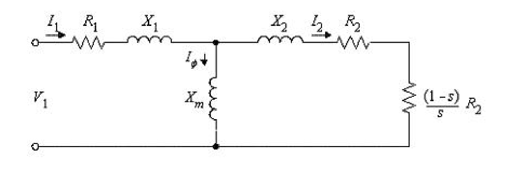
- 1 : มอเตอร์เหนี่ยวนำ 3 เฟส
- 2 : เครื่องกำเนิดไฟฟ้าเหนี่ยวนำ 3 เฟส
- 3 : เครื่องกำเนิดไฟฟ้าซิงโครนัส 3 เฟส
- 4 : มอเตอร์ซิงโครนัส 3 เฟส
- คำตอบที่ถูกต้อง : 1
ข้อที่ 280 :
- มอเตอร์ เหนี่ยวนำสามเฟสพิกัด 220 V, 6 poles, 50 Hz ต่อแบบสตาร์ ขณะมอเตอร์ทำงานที่ค่าสลิปเท่ากับ 3 % ค่ากำลังไฟฟ้าที่ออกจากมอเตอร์ (output power) เท่ากับ 5,000 W ถ้าค่าสูญเสียจากการหมุน (rotational loss) และค่าสูญเสียจากแกนเหล็ก (core loss) เท่ากับ 500 W แรงดันไฟฟ้าต่อเฟสมีค่าเท่ากับเท่าใด
- 1 : 220 V
- 2 : 381 V
- 3 : 127 V
- 4 : 73.3 V
- คำตอบที่ถูกต้อง : 3
ข้อที่ 281 :
- มอเตอร์ เหนี่ยวนำสามเฟสพิกัด 380 V, 6 poles, 50 Hz ต่อแบบสตาร์ ขณะมอเตอร์ทำงานที่ค่าสลิปเท่ากับ 3 % มอเตอร์หมุนด้วยความเร็วเท่ากับเท่าใด
- 1 : 1000 rpm
- 2 : 970 rpm
- 3 : 1500 rpm
- 4 : 1455 rpm
- คำตอบที่ถูกต้อง : 2
ข้อที่ 282 :
- มอเตอร์ เหนี่ยวนำสามเฟสพิกัด 380 V, 4 poles, 50 Hz ต่อแบบสตาร์ ขณะมอเตอร์ทำงานที่ค่าสลิปเท่ากับ 3 % ค่ากำลังไฟฟ้าที่ออกจากมอเตอร์เท่ากับ 6,000 W ถ้าค่าสูญเสียจากการหมุน และค่าสูญเสียจากแกนเหล็ก (rotational loss and core loss) เท่ากับ 550 W ค่าสูญเสียจากลวดทองแดงที่สเตเตอร์ (stator copper loss) 680 W ค่าสูญเสียจากลวดทองแดงที่โรเตอร์ (rotor copper loss) เท่ากับ 270 W ประสิทธิภาพมอเตอร์เท่ากับเท่าใด
- 1 : 80.0 %
- 2 : 91.6 %
- 3 : 86.3 %
- 4 : 83.0 %
- คำตอบที่ถูกต้อง : 1
ข้อที่ 283 :
- ข้อใดไม่ใช่ลักษณะของมอเตอร์เหนี่ยวนำสามเฟส
- 1 : สามารถควบคุมความเร็วโรเตอร์ได้
- 2 : ขณะรับโหลดจะทำงานที่ตัวประกอบกำลังไฟฟ้าล้าหลัง (lagging power factor)
- 3 : กระแสไฟฟ้าขณะเริ่มหมุนมีค่าสูง
- 4 : ความเร็วโรเตอร์ของมอเตอร์เท่ากับความเร็วซิงโครนัส
- คำตอบที่ถูกต้อง : 4
ข้อที่ 284 :
- ถ้ามอเตอร์เหนี่ยวนำสามเฟสรับโหลดมากเกินกว่าค่าแรงบิดสูงสุด (maximum torque) มอเตอร์เหนี่ยวนำจะเป็นอย่างไร
- 1 : หมุนที่ความเร็วพิกัด
- 2 : หมุนกลับทิศ
- 3 : หมุนที่ความเร็วสูงกว่าความเร็วพิกัด
- 4 : หยุดหมุน
- คำตอบที่ถูกต้อง : 4
ข้อที่ 285 :
- มอเตอร์ เหนี่ยวนำสามเฟส ขณะไม่มีโหลดมีความเร็ว 1,198 rpm เมื่อเพิ่มโหลดมอเตอร์มีความเร็ว 1,140 rpm ถ้าจ่ายแรงดันไฟฟ้า 380 V ความถี่ไฟเท่ากับ 60 Hz จงหาจำนวนขั้วแม่เหล็กของมอเตอร์เหนี่ยวนำนี้
- 1 : 24 poles
- 2 : 18 poles
- 3 : 12 poles
- 4 : 6 poles
- คำตอบที่ถูกต้อง : 4
ข้อที่ 286 :
- มอเตอร์ เหนี่ยวนำสามเฟส พิกัด 480 V, 50 Hz ขณะจ่ายโหลดที่ 0.85 PF lagging มอเตอร์ใช้กระแสไฟฟ้า 60 A ให้คำนวณกำลังไฟฟ้าทางด้านเข้าของมอเตอร์ (input power)
- 1 : 42.4 kW
- 2 : 5.1 kW
- 3 : 21.2 kW
- 4 : 28.8 kW
- คำตอบที่ถูกต้อง : 1
ข้อที่ 287 :
- มอเตอร์ เหนี่ยวนำสามเฟส ขนาดพิกัด 200 kW, Star/Delta, 660/380 V, 202/350 A, PF 0.92, 1465 rpm, 4 poles, 50 Hz ขณะทำงานที่พิกัดกำลังและแรงดันไฟฟ้าป้อนเข้า โดยต่อแบบ Delta มอเตอร์ใช้กระแสไฟฟ้าเท่ากับเท่าใด
- 1 : 350 A
- 2 : 202 A
- 3 : 303 A
- 4 : 526 A
- คำตอบที่ถูกต้อง : 1
ข้อที่ 288 :
- มอเตอร์ เหนี่ยวนำสามเฟส ขนาดพิกัด 200 kW, Star/Delta, 660/380 V, 202/350 A, PF 0.92, 1465 rpm, 4 poles, 50 Hz ขณะทำงานที่พิกัดกำลังและแรงดันไฟฟ้าป้อนเข้า โดยต่อแบบ Star มอเตอร์ใช้กระแสไฟฟ้าเท่ากับเท่าใด
- 1 : 350 A
- 2 : 202 A
- 3 : 303 A
- 4 : 526 A
- คำตอบที่ถูกต้อง : 2
ข้อที่ 289 :
- มอเตอร์ เหนี่ยวนำสามเฟส ขนาดพิกัด 200 kW, Star/Delta, 660/380 V, 202/350 A, PF 0.92, 1420 rpm, 4 poles, 50 Hz ขณะทำงานที่พิกัดกำลังและแรงดันไฟฟ้าป้อนเข้า โดยต่อแบบ Star มอเตอร์มีความเร็วรอบประมาณเท่ากับเท่าใด
- 1 : 1306 rpm
- 2 : 1495 rpm
- 3 : 1500 rpm
- 4 : 1420 rpm
- คำตอบที่ถูกต้อง : 4
ข้อที่ 290 :
- มอเตอร์ เหนี่ยวนำสามเฟสขนาด 200 kW, Star/Delta, 660/380 V, 202/350 A, PF 0.92, 1420 rpm, 4 poles, 50 Hz ขณะทำงานที่พิกัดกำลังและแรงดันไฟฟ้าป้อนเข้า โดยต่อแบบ Delta มอเตอร์มีความเร็วรอบประมาณเท่ากับเท่าใด
- 1 : 1306 rpm
- 2 : 1495 rpm
- 3 : 1500 rpm
- 4 : 1420 rpm
- คำตอบที่ถูกต้อง : 4
ข้อที่ 291 :
- มอเตอร์ เหนี่ยวนำสามเฟส ขนาดพิกัด 8 kW, Star/Delta, 660/380 V, 202/350 A, PF 0.85, 1425 rpm, 4 poles, 50 Hz ขณะทำงานที่พิกัดกำลังและแรงดันไฟฟ้าป้อนเข้า โดยต่อแบบ Delta มอเตอร์มีค่าสลิปเท่ากับเท่าใด
- 1 : 0.85
- 2 : 0.05
- 3 : 0.053
- 4 : 0.80
- คำตอบที่ถูกต้อง : 2
ข้อที่ 292 :
- มอเตอร์ เหนี่ยวนำสามเฟส ขนาดพิกัด 8 kW, Star/Delta, 660/380 V, 202/350 A, PF 0.85, 1425 rpm, 4 poles, 50 Hz ขณะทำงานที่พิกัดกำลังและแรงดันไฟฟ้าป้อนเข้า โดยต่อแบบ Delta มอเตอร์มีค่าสลิปเท่ากับเท่าใด
- 1 : 0.85
- 2 : 0.05
- 3 : 0.053
- 4 : 0.80
- คำตอบที่ถูกต้อง : 2
ข้อที่ 293 :
- มอเตอร์ เหนี่ยวนำสามเฟสพิกัด 380 V, 4 poles, 50 Hz ต่อแบบสตาร์ ขณะมอเตอร์ทำงานที่ค่าสลิปเท่ากับ 3 % ค่ากำลังไฟฟ้าที่ออกจากมอเตอร์เท่ากับ 6,000 W ถ้าค่าสูญเสียจากการหมุน และค่าสูญเสียจากแกนเหล็กเท่ากับ (rotational loss and core loss) 550 W ค่าสูญเสียจากลวดทองแดงที่สเตเตอร์ (stator copper loss) 680 W ค่าสูญเสียจากลวดทองแดงที่โรเตอร์ (rotor copper loss) เท่ากับ 350 W ความสูญเสียรวมในมอเตอร์ (total losses) มีค่าเท่ากับเท่าใด
- 1 : 1580 W
- 2 : 550 W
- 3 : 680 W
- 4 : 350 W
- คำตอบที่ถูกต้อง : 1
ข้อที่ 294 :
- มอเตอร์ เหนี่ยวนำสามเฟสพิกัด 220/380 V, 8 poles, 50 Hz ต่อแบบเดลต้า ขณะมอเตอร์ทำงานที่ค่าสลิปเท่ากับ 3 % มอเตอร์หมุนด้วยความเร็วเท่ากับเท่าใด
- 1 : 22.5 rpm
- 2 : 970 rpm
- 3 : 727.5 rpm
- 4 : 750 rpm
- คำตอบที่ถูกต้อง : 3
เนื้อหาวิชา : 45 : Steady state performance and analysis of synchronous machines
ข้อที่ 295 :
- เครื่อง กำเนิดไฟฟ้า 3 เฟส แบบซิงโครนัส ทำงานอย่างอิสระโดยมีความเร็วคงที่ แรงดันไฟฟ้าที่ขั้ว (terminal voltage) จะเป็นอย่างไร ถ้าภาระทางไฟฟ้าที่มาต่อเป็น ตัวต้านทาน และตัวเหนี่ยวนำ ตามลำดับ
- 1 : เท่าเดิม, เพิ่มขึ้น
- 2 : เพิ่มขึ้น, เพิ่มขึ้น
- 3 : ลดลง, เพิ่มขึ้น
- 4 : ลดลง, ลดลง
- คำตอบที่ถูกต้อง : 4
ข้อที่ 296 :
- ค่า กำลังไฟฟ้าที่ส่งผ่านจากเครื่องกำเนิดไฟฟ้าซิงโครนัส (synchronous generator) เข้าสู่ระบบไฟฟ้า (utility) จะมีค่าสูงสุดเมื่อมุมระหว่างแรงดันไฟฟ้าทั้งสองมีค่าเท่ากับเท่าใด
- 1 : 0 electrical degree
- 2 : 90 electrical degree
- 3 : 30 electrical degree
- 4 : 60 electrical degree
- คำตอบที่ถูกต้อง : 2
ข้อที่ 297 :
- ใน V-curve ของมอเตอร์ซิงโครนัส จุดที่เส้นกราฟมีค่ากระแสอาร์มาเจอร์ (armature current) ต่ำที่สุด แสดงถึงอะไร
- 1 : ค่าตัวประกอบกำลังไฟฟ้าเท่ากับหนึ่ง
- 2 : ไม่มีภาระโหลด
- 3 : ค่าตัวประกอบกำลังไฟฟ้าล้าหลัง
- 4 : ค่าตัวประกอบกำลังไฟฟ้านำหน้า
- คำตอบที่ถูกต้อง : 1
ข้อที่ 298 :
- มอเตอร์ซิงโครนัสสามเฟส ขนาดพิกัด 7.5 kW, 380 V, 4 poles, 50 Hz จงหาค่าเปอร์เซ็นต์สลิป (% slip)
- 1 : 0 %
- 2 : 2.5 %
- 3 : 3.7 %
- 4 : 4.2 %
- คำตอบที่ถูกต้อง : 1
ข้อที่ 299 :
- ข้อใดไม่ใช่เงื่อนไขในการขนานเครื่องกำเนิดไฟฟ้าซิงโครนัสเข้ากับระบบไฟฟ้า (synchronization)
- 1 : มีแรงดันไฟฟ้าเท่ากัน
- 2 : มีความถี่เท่ากัน
- 3 : มีลำดับเฟสเหมือนกัน
- 4 : มีกระแสไฟฟ้าเท่ากัน
- คำตอบที่ถูกต้อง : 4
ข้อที่ 300 :
- Short circuit ratio (SCR) คือค่าตัวเลขที่เป็นค่าคงที่ของเครื่องจักรซิงโครนัสแต่ละตัว ข้อใดเป็นความหมายของ Short circuit ratio
- 1 : อัตราส่วนของกระแสอาร์มาเจอร์เต็มพิกัดต่อกระแสอาร์มาเจอร์สูงสุดที่ทนได้ขณะลัดวงจร
- 2 : อัตราส่วนของกระแสไฟตรงที่ป้อนเข้าสนามแม่เหล็กเพื่อผลิตแรงดันเต็มพิกัดขณะ ไม่จ่ายโหลด ต่อกระแสไฟตรงที่ป้อนเข้าสนามแม่เหล็กขณะกระแสอาร์มาเจอร์เต็มพิกัดขณะลัด วงจร
- 3 : ส่วนกลับของค่า per unit ของ ซิงโครนัสรีแอคแตนซ์อิ่มตัว
- 4 : ไม่มีคำตอบที่ถูกต้อง
- คำตอบที่ถูกต้อง : 2
ข้อที่ 301 :
- วงจรสมมูลต่อเฟสของเครื่องจักรกลไฟฟ้าดังรูป เป็นคุณลักษณะของเครื่องจักรกลไฟฟ้ากระแสสลับประเภทใด
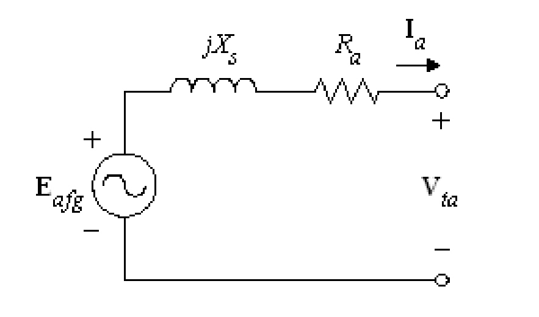
- 1 : มอเตอร์ซิงโครนัส
- 2 : เครื่องกำเนิดไฟฟ้าซิงโครนัส
- 3 : มอเตอร์เหนี่ยวนำ
- 4 : เครื่องกำเนิดไฟฟ้าเหนี่ยวนำ
- คำตอบที่ถูกต้อง : 2
ข้อที่ 302 :
- วงจรสมมูลต่อเฟสของเครื่องจักรกลไฟฟ้าดังรูป เป็นคุณลักษณะของเครื่องจักรกลไฟฟ้ากระแสสลับประเภทใด
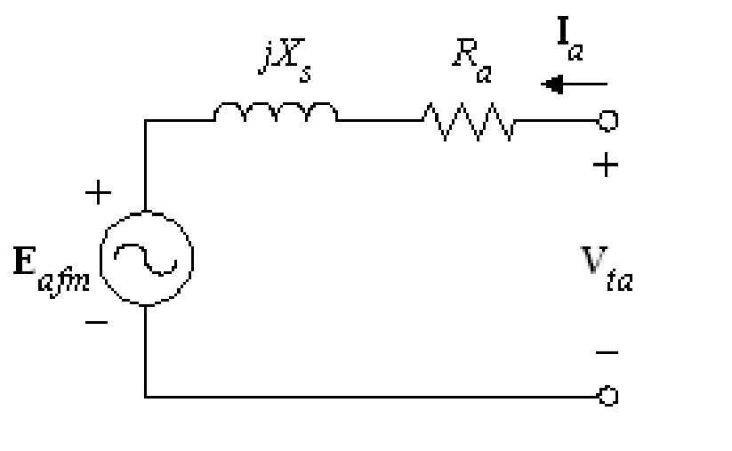
- 1 : มอเตอร์ซิงโครนัส
- 2 : เครื่องกำเนิดไฟฟ้าซิงโครนัส
- 3 : มอเตอร์เหนี่ยวนำ
- 4 : เครื่องกำเนิดไฟฟ้าเหนี่ยวนำ
- คำตอบที่ถูกต้อง : 1
ข้อที่ 303 :
- เฟสเซอร์ไดอะแกรมดังรูป เป็นคุณลักษณะของเครื่องจักรกลไฟฟ้าซิงโครนัสแบบใด
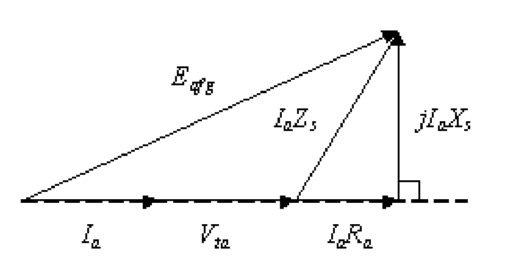
- 1 : ขณะทำงานเป็นมอเตอร์โดยทำงานที่ตัวประกอบกำลังไฟฟ้านำหน้า
- 2 : ขณะทำงานเป็นมอเตอร์โดยทำงานที่ตัวประกอบกำลังไฟฟ้าเท่ากับ 1
- 3 : ขณะทำงานเป็นเครื่องกำเนิดไฟฟ้าโดยทำงานที่ตัวประกอบกำลังไฟฟ้านำหน้า
- 4 : ขณะทำงานเป็นเครื่องกำเนิดไฟฟ้าโดยทำงานที่ตัวประกอบกำลังไฟฟ้าเท่ากับ 1
- คำตอบที่ถูกต้อง : 4
ข้อที่ 304 :
- ข้อใดไม่ใช่คุณสมบัติของเครื่องจักรกลไฟฟ้าซิงโครนัส (synchronous machines)
- 1 : ความเร็วรอบของโรเตอร์มีค่าคงที่ ขณะทำงานที่สภาวะคงตัว (steady state)
- 2 : ความเร็วรอบของโรเตอร์มีค่าเท่ากับความเร็วซิงโครนัส ขณะทำงานที่สภาวะคงตัว (steady state)
- 3 : ความถี่สลิปจะเกิดขึ้นที่ขดลวดโรเตอร์ของมอเตอร์ซิงโครนัสเสมอ ขณะทำงานที่สภาวะคงตัว (steady state)
- 4 : สามารถใช้เครื่องจักรกลไฟฟ้าซิงโครนัสช่วยในการปรับปรุงตัวประกอบกำลังไฟฟ้าในระบบได้
- คำตอบที่ถูกต้อง : 3
ข้อที่ 305 :
- จาก
รูปเป็นการทดสอบเครื่องจักรกลไฟฟ้าซิงโครนัส
โดยจ่ายพลังงานกลให้เครื่องจักรหมุนด้วยความเร็วซิงโครนัส (synchronous
speed) ส่วนขดลวดอาร์มาเจอร์ต่อวงจรดังรูป
จากนั้นทำการปรับค่ากระแสสร้างสนามแม่เหล็ก (field current)
ให้เพิ่มขึ้นจนถึงพิกัด
อยากทราบว่าด้วยวิธีการทดสอบที่กล่าวมานี้เป็นการทดสอบแบบใด
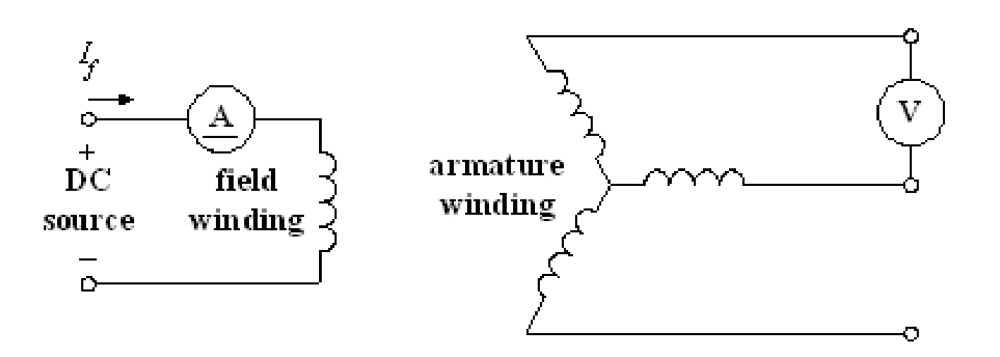
- 1 : การทดสอบแบบเปิดวงจร (open circuit test)
- 2 : การทดสอบแบบลัดวงจร (short circuit test)
- 3 : การทดสอบหาความสูญเสียเนื่องจากการหมุนและแรงลมต้าน (friction and windage losses test)
- 4 : การทดสอบสลิป (slip test)
- คำตอบที่ถูกต้อง : 1
ข้อที่ 306 :
- ข้อใดไม่ใช่การทดสอบเพื่อหาค่าพารามิเตอร์ในวงจรสมมูลของเครื่องจักรกลซิงโครนัส
- 1 : การทดสอบแบบเปิดวงจร (open circuit test)
- 2 : การทดสอบแบบลัดวงจร (short circuit test)
- 3 : การทดสอบแบบยึดโรเตอร์ (locked rotor test)
- 4 : การทดสอบสลิป (slip test)
- คำตอบที่ถูกต้อง : 3
ข้อที่ 307 :
- ข้อใดไม่ใช่เครื่องมือที่จำเป็นต้องใช้ในการขนานเครื่องกำเนิดไฟฟ้าซิงโครนัส (synchronization)
- 1 : หลอด Incandescent 3 ดวง
- 2 : Voltmeter
- 3 : Frequency meter
- 4 : Ohmmeter
- คำตอบที่ถูกต้อง : 4
ข้อที่ 308 :
- ข้อใดต่อไปนี้กล่าวถูกต้องที่สุด
- 1 : ค่ามุมกำลัง (power angle) ที่มากที่สุดของเครื่องจักรกลไฟฟ้าซิงโครนัสแบบขั้วไม่ยื่นในทางปฏิบัติคือ 90 องศา
- 2 : ค่ามุมกำลังที่มากที่สุดของเครื่องจักรกลไฟฟ้าซิงโครนัสแบบขั้วยื่นในทางปฏิบัติน้อยกว่า 90 องศา
- 3 : การทำ Short-circuit test และ Open-circuit test สำหรับเครื่องกำเนิดไฟฟ้าซิงโครนัสสามารถนำไปสู่การหา Unsaturated synchronous reactance ได้เท่านั้น
- 4 : การทดสอบสลิบ (slip test) ในเครื่องจักรกลไฟฟ้าซิงโครนัสแบบขั้วยื่น สามารถใช้หา Xq ได้เท่านั้น
- คำตอบที่ถูกต้อง : 2
ข้อที่ 309 :
- เครื่องกำเนิดไฟฟ้าซิงโครนัสพิกัด 380 V, 50 Hz, 5 A, ต่อแบบสตาร์, 0.8 PF lagging, ค่าซิงโครนัสอิมพีแดนซ์ 4+j3 ohm จงคำนวณหาค่าแรงเคลื่อนไฟฟ้าเหนี่ยวนำ ภายในต่อเฟส (induced voltage per phase) เมื่อเครื่องกำเนิดไฟฟ้าทำงานที่ค่าพิกัด
- 1 : 194.4 V
- 2 : 219.4 V
- 3 : 232.7 V
- 4 : 310 V
- คำตอบที่ถูกต้อง : 3
ข้อที่ 310 :
- เครื่อง กำเนิดไฟฟ้ากระแสสลับ 3 เฟส มีจำนวนขั้วแม่เหล็ก 8 poles ถ้าต้องการผลิตแรงดันไฟฟ้าที่มีความถี่ไฟ 50 Hz จะต้องขับแกนเพลาของเครื่องกำเนิดไฟฟ้ากระแสสลับนี้ ให้หมุนด้วยความเร็วรอบเท่าใด
- 1 : 750 rpm
- 2 : 750 rps
- 3 : 1250 rpm
- 4 : 25 rps
- คำตอบที่ถูกต้อง : 1
ข้อที่ 311 :
- ลักษณะโรเตอร์ของเครื่องจักรกลไฟฟ้าซิงโครนัสชนิดใดที่เหมาะสมกับต้นกำลังทางกลที่มีความเร็วรอบสูง
- 1 : Wound rotor
- 2 : Squirrel cage rotor
- 3 : Salient pole
- 4 : Cylindrical rotor
- คำตอบที่ถูกต้อง : 4
ข้อที่ 312 :
- เครื่องกำเนิดไฟฟ้ากระแสสลับ 3 เฟส ขนาด 125 kVA, 400 / 230 V, 50 Hz, 1500 rpm มีจำนวนขั้วแม่เหล็กเท่ากับเท่าใด
- 1 : 2 poles
- 2 : 4 poles
- 3 : 6 poles
- 4 : 8 poles
- คำตอบที่ถูกต้อง : 2
ข้อที่ 313 :
- เครื่อง กำเนิดไฟฟ้ากระแสสลับ 3 เฟส ขนาด 200 kW, 400 V, ต่อแบบสตาร์, 50 Hz, 6 poles, 0.8 lagging PF, ขณะใช้งานเต็มพิกัดมีประสิทธิภาพ 95 % ให้คำนวณหาค่าของกระแสไฟฟ้าขณะใช้งานเต็มพิกัด
- 1 : 360.8 A
- 2 : 389.8 A
- 3 : 288.6 A
- 4 : 500.0 A
- คำตอบที่ถูกต้อง : 1
ข้อที่ 314 :
- การ Synchronization ของเครื่องกำเนิดไฟฟ้าซิงโครนัส 3 เฟส จะต้องมีเงื่อนไขดังนี้
- 1 : แรงดันไฟฟ้าเท่ากัน, ความถี่ไฟเท่ากัน และขนาดพิกัดกำลังเท่ากัน
- 2 : ลำดับเฟสตรงกัน, แรงดันไฟฟ้าเท่ากัน และจำนวนขั้วแม่เหล็กเท่ากัน
- 3 : ลำดับเฟสตรงกัน, แรงดันไฟฟ้าเท่ากัน และความถี่ไฟเท่ากัน
- 4 : ลำดับเฟสตรงกัน, ขนาดแกนเหล็กเท่ากัน และความถี่ไฟเท่ากัน
- คำตอบที่ถูกต้อง : 3
ข้อที่ 315 :
- เมื่อ ทำการ Synchronization เครื่องกำเนิดไฟฟ้าซิงโครนัสกับ Infinite bus แล้ว ถ้ามีการเปลี่ยนแปลงกำลังของชุดขับเคลื่อนต้นกำลัง (prime mover) ของเครื่องกำเนิดไฟฟ้าซิงโครนัส จะทำให้เกิดผลในข้อใด
- 1 : จ่ายกำลังไฟฟ้าให้ Infinite bus เพิ่มขึ้น เมื่อเพิ่มกำลัง Prime mover
- 2 : จ่ายกำลังไฟฟ้าให้ Infinite bus ลดลง เมื่อเพิ่มกำลัง Prime mover
- 3 : ตัวประกอบกำลังไฟฟ้าเพิ่มขึ้น เมื่อเพิ่มกำลัง Prime mover
- 4 : ตัวประกอบกำลังไฟฟ้าลดลง เมื่อลดกำลัง Prime mover
- คำตอบที่ถูกต้อง : 1
ข้อที่ 316 :
- เครื่อง กำเนิดไฟฟ้า 3 เฟส แบบซิงโครนัส ทำงานอย่างอิสระโดยมีความเร็วคงที่ แรงดันไฟฟ้าที่ขั้ว (terminal voltage) จะเป็นอย่างไร ถ้าภาระทางไฟฟ้าที่มาต่อเป็น ตัวต้านทาน และตัวเก็บประจุ ตามลำดั
- 1 : เท่าเดิม, เพิ่มขึ้น
- 2 : เพิ่มขึ้น, เพิ่มขึ้น
- 3 : ลดลง, เพิ่มขึ้น
- 4 : ลดลง, ลดลง
- คำตอบที่ถูกต้อง : 3
ข้อที่ 317 :
- มอเตอร์ซิงโครนัสมีความเร็วเป็นอย่างไร
- 1 : ช้ากว่า Synchronous speed
- 2 : เท่ากับ Synchronous speed
- 3 : เร็วกว่า Synchronous speed
- 4 : มี Slip speed เหมือนกับ Induction motor
- คำตอบที่ถูกต้อง : 2
ข้อที่ 318 :
- มอเตอร์ ซิงโครนัส 3 เฟส ขนาด 100 kW, 380 V เมื่อจ่ายแรงดันไฟฟ้าที่พิกัด ที่ตัวประกอบกำลังไฟฟ้าเท่ากับ 1 ขณะขับภาระทางกลที่เต็มพิกัด มอเตอร์มีประสิทธิภาพเท่ากับ 90% ให้คำนวณหาค่ากระแสไฟฟ้า (rated line current) ที่ไหลเข้ามอเตอร์
- 1 : 263.2 A
- 2 : 168.8 A
- 3 : 151.9 A
- 4 : 97.5 A
- คำตอบที่ถูกต้อง : 2
ข้อที่ 319 :
- ถ้า ต้องการแปลงความถี่จาก 50 Hz เป็น 400 Hz โดยใช้มอเตอร์ซิงโครนัสขับเครื่องกำเนิดไฟฟ้าซิงโครนัส อัตราส่วนจำนวนขั้วแม่เหล็กของมอเตอร์ซิงโครนัสต่อจำนวนขั้วแม่เหล็กของ เครื่องกำเนิดไฟฟ้าซิงโครนัส จะต้องมีค่าเท่ากับเท่าใด
- 1 : 8 ต่อ 2
- 2 : 2 ต่อ 8
- 3 : 16 ต่อ 2
- 4 : 2 ต่อ 16
- คำตอบที่ถูกต้อง : 4
ข้อที่ 320 :
- เครื่อง กำเนิดไฟฟ้าซิงโครนัส 3 เฟส แบบ cylindrical rotor ขนาดพิกัด 800 kVA, 6,600 V (line to line), 4 poles, 50 Hz, ต่อแบบสตาร์ ขณะที่จ่ายภาระทางไฟฟ้าที่พิกัดแรงดันไฟฟ้า และพิกัดกระแสไฟฟ้า ที่ 0.8 lagging PF กำลังไฟฟ้าเอาท์พุท (output power) ของเครื่องกำเนิดไฟฟ้านี้มีค่าเท่ากับเท่าใด
- 1 : 640 kW
- 2 : 1000 kW
- 3 : 660 kW
- 4 : 528 kW
- คำตอบที่ถูกต้อง : 1
ข้อที่ 321 :
- เครื่อง กำเนิดไฟฟ้าซิงโครนัส 3 เฟส แบบ cylindrical rotor ขนาด 800 kVA, 6,600 V (line to line), 4 poles, 50 Hz ต่อแบบสตาร์ ขณะที่จ่ายภาระทางไฟฟ้าที่พิกัดกำลังไฟฟ้า และพิกัดแรงดันไฟฟ้า กระแสไฟฟ้าที่จ่ายให้กับภาระทางไฟฟ้ามีค่าเท่าใด
- 1 : 70.0 A
- 2 : 121.2 A
- 3 : 40.4 A
- 4 : 85.7 A
- คำตอบที่ถูกต้อง : 1
ข้อที่ 322 :
- ข้อความใดไม่เกี่ยวข้องกับลักษณะการทำงานของเครื่องจักรกลไฟฟ้าซิงโครนัส
- 1 : Slip speed
- 2 : Synchronous speed
- 3 : Synchronize
- 4 : Phase sequence voltage
- คำตอบที่ถูกต้อง : 1
ข้อที่ 323 :
- เครื่อง กำเนิดไฟฟ้าซิงโครนัส 3 เฟส ขนาดพิกัด 100 kVA, 380 V, 50 Hz, 6 poles, ต่อแบบเดลต้า กำหนดให้มีค่าซิงโครนัสอิมพีแดนซ์เท่ากับ 0.25+ j0.75 ohm, 0.8 lagging PF, มีค่าการสูญเสียในการหมุน (rotational losses) เท่ากับ 2,500 W ให้คำนวณหาค่าแรงบิดของต้นกำลัง (input torque) ขณะจ่ายกำลังไฟฟ้าที่พิกัด
- 1 : 770 N.m
- 2 : 568 N.m
- 3 : 976 N.m
- 4 : 842 N.m
- คำตอบที่ถูกต้อง : 4
ข้อที่ 324 :
- เครื่อง กำเนิดไฟฟ้าซิงโครนัส 3 เฟส ขนาดพิกัด 100 kVA, 380 V, 50 Hz, 6 poles, ต่อแบบเดลต้า กำหนดให้มีค่าซิงโครนัสอิมพีแดนซ์เท่ากับ 0.25+ j0.75 ohm มีค่าการสูญเสียในการหมุน (rotational losses) เท่ากับ 2,500 W กระแสไฟฟ้าต่อเฟสมีค่าเท่ากับเท่าใด
- 1 : 151.9 A
- 2 : 87.7 A
- 3 : 263.2 A
- 4 : 186.1 A
- คำตอบที่ถูกต้อง : 2
ข้อที่ 325 :
- ซิ งโครนัสคอนเดนเซอร์ (synchronous condenser) ถูกนำมาใช้ปรับค่าตัวประกอบกำลังไฟฟ้า จนกระทั่งระบบไฟฟ้ามีค่าภาระทางไฟฟ้าเท่ากับ 2,000 kVA และตัวประกอบกำลังไฟฟ้า 0.8 PF lagging ให้คำนวณหาค่ากำลังไฟฟ้าเสมือน (reactive power) ของระบบไฟฟ้านี้
- 1 : 1200 kvar
- 2 : 1000 kvar
- 3 : 800 kvar
- 4 : 600 kvar
- คำตอบที่ถูกต้อง : 1
ข้อที่ 326 :
- ซิ งโครนัสคอนเดนเซอร์ (synchronous condenser) ถูกนำมาใช้ปรับค่าตัวประกอบกำลังไฟฟ้า จนกระทั่งระบบไฟฟ้ามีค่าภาระทางไฟฟ้าเท่ากับ 2,000 kVA และตัวประกอบกำลังไฟฟ้า 0.8 PF lagging ให้คำนวณหาค่ากำลังไฟฟ้าจริง (real power) ของระบบไฟฟ้านี้
- 1 : 1600 kW
- 2 : 1400 kW
- 3 : 1200 kW
- 4 : 1000 kW
- คำตอบที่ถูกต้อง : 1
ข้อที่ 327 :
- จงหาความเร็วรอบของมอเตอร์ซิงโครนัสสามเฟส ขนาดพิกัด 480 V, 60 Hz, 4 poles
- 1 : 900 rpm
- 2 : 1800 rpm
- 3 : 2700 rpm
- 4 : 3600 rpm
- คำตอบที่ถูกต้อง : 2
ข้อที่ 328 :
- มอเตอร์ ซิงโครนัสสามเฟส ขนาดพิกัด 480 V, 60 Hz, 4 poles มีความเร็วรอบเท่ากับเท่าใด เมื่อมอเตอร์รับภาระทางกลที่ 70 % ของพิกัด
- 1 : 900 rpm
- 2 : 1800 rpm
- 3 : 2700 rpm
- 4 : 3600 rpm
- คำตอบที่ถูกต้อง : 2
ข้อที่ 329 :
- มอเตอร์ ซิงโครนัสสามเฟสขนาดพิกัด 480 V, 60 Hz, 4 poles จะมีค่าความเร็วรอบเท่ากับเท่าใด เมื่อจ่ายแรงดันไฟฟ้าขนาด 240 V ให้กับมอเตอร์
- 1 : 300 rpm
- 2 : 450 rpm
- 3 : 900 rpm
- 4 : 1800 rpm
- คำตอบที่ถูกต้อง : 4
ข้อที่ 330 :
- เครื่องกำเนิดไฟฟ้าซิงโครนัสพิกัด 380 V, 50 Hz, 5 A, 0.8 PF lagging, ต่อแบบสตาร์ ค่าซิงโครนัสอิมพีแดนซ์ 4+j3 ohm จงคำนวณหาค่าแรงเคลื่อนไฟฟ้าเหนี่ยวนำ (induced voltage) เมื่อเครื่องกำเนิดไฟฟ้าทำงานที่ค่าพิกัด
- 1 : 403 V
- 2 : 219.4 V
- 3 : 232.7 V
- 4 : 310 V
- คำตอบที่ถูกต้อง : 1
ข้อที่ 331 :
- เฟสเซอร์ไดอะแกรมดังรูป เป็นคุณลักษณะของเครื่องจักรกลไฟฟ้าซิงโครนัสแบบใด
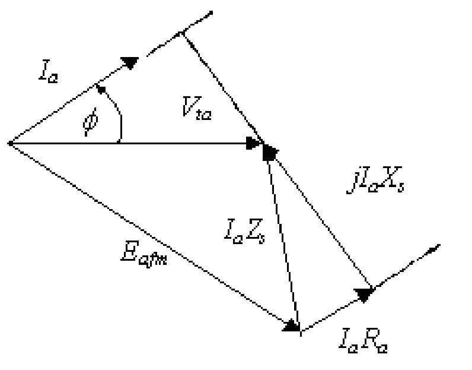
- 1 : ขณะทำงานเป็นมอเตอร์โดยทำงานที่ตัวประกอบกำลังไฟฟ้านำหน้า
- 2 : ขณะทำงานเป็นมอเตอร์โดยทำงานที่ตัวประกอบกำลังไฟฟ้าล้าหลัง
- 3 : ขณะทำงานเป็นเครื่องกำเนิดไฟฟ้าโดยทำงานที่ตัวประกอบกำลังไฟฟ้านำหน้า
- 4 : ขณะทำงานเป็นเครื่องกำเนิดไฟฟ้าโดยทำงานที่ตัวประกอบกำลังไฟฟ้าล้าหลัง
- คำตอบที่ถูกต้อง : 1
ข้อที่ 332 :
- เครื่อง กำเนิดไฟฟ้าซิงโครนัสพิกัด 380 V, 50 Hz, 5 A, 0.8 PF lagging, ต่อแบบสตาร์ ขณะจ่ายแรงดันไฟฟ้าที่พิกัด ให้คำนวณหาค่าของกำลังไฟฟ้าที่จ่ายโหลด (output power)
- 1 : 1900 W
- 2 : 1520 W
- 3 : 2633 W
- 4 : 4560 W
- คำตอบที่ถูกต้อง : 3
ข้อที่ 333 :
- จาก
รูปเป็นการทดสอบลำดับเฟสสำหรับการขนานเครื่องกำเนิดไฟฟ้าซิงโครนัสสามเฟส
เข้ากับระบบไฟฟ้า
อยากทราบว่าถ้าลำดับเฟสของเครื่องกำเนิดไฟฟ้าซิงโครนัสตรงกับลำดับเฟสของ
ระบบไฟฟ้า หลอดไฟแต่ละเฟสจะมีลักษณะอย่างไร
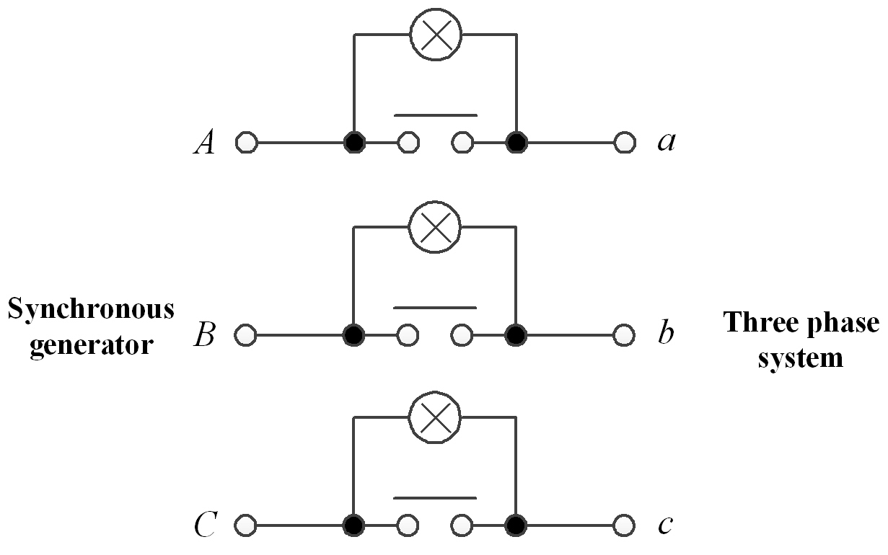
- 1 : หลอดไฟดับสนิททั้งสามเฟส
- 2 : หลอดไฟเฟส A ดับสนิท ส่วนเฟส B และ C สว่าง
- 3 : หลอดไฟสว่างทั้งสามเฟส
- 4 : หลอดไฟเฟส A สว่าง ส่วนเฟส B และ C ดับสนิท
- คำตอบที่ถูกต้อง : 1
ข้อที่ 334 :
- จาก
รูปเป็นการทดสอบลำดับเฟสสำหรับการขนานเครื่องกำเนิดไฟฟ้าซิงโครนัสสามเฟส
เข้ากับระบบไฟฟ้า
อยากทราบว่าถ้าลำดับเฟสของเครื่องกำเนิดไฟฟ้าซิงโครนัสตรงกับลำดับเฟสของ
ระบบไฟฟ้า หลอดไฟแต่ละเฟสจะมีลักษณะอย่างไร
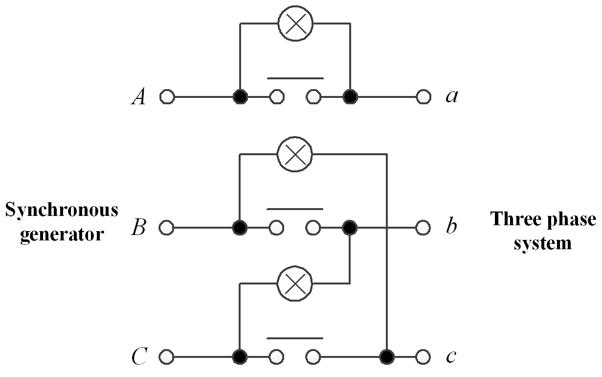
- 1 : หลอดไฟดับสนิททั้งสามเฟส
- 2 : หลอดไฟเฟส A ดับสนิท ส่วนเฟส B และ C สว่าง
- 3 : หลอดไฟสว่างทั้งสามเฟส
- 4 : หลอดไฟเฟส A สว่าง ส่วนเฟส B และ C ดับสนิท
- คำตอบที่ถูกต้อง : 2
เนื้อหาวิชา : 46 : Starting methods for polyphase induction motors
ข้อที่ 335 :
- มอเตอร์ เหนี่ยวนำสามเฟส เมื่อต่อแบบเดลต้า ต้องการกระแสไฟฟ้า 3 A จากแหล่งจ่ายแรงดันไฟฟ้า 380 V ถ้าต่อมอเตอร์ตัวเดียวกันนี้แบบสตาร์แทน โดยใช้แหล่งจ่ายแรงดันไฟฟ้า 380 V เท่าเดิม มอเตอร์จะต้องการกระแสไฟฟ้าเท่ากับเท่าใด
- 1 : 2.1 A
- 2 : 5.2 A
- 3 : 1.7 A
- 4 : 3.0 A
- คำตอบที่ถูกต้อง : 3
ข้อที่ 336 :
- วิธีการเริ่มหมุน (starting method) แบบใด เหมาะสมที่จะนำมาใช้กับมอเตอร์เหนี่ยวนำสามเฟสที่มีขนาด 750 W มากที่สุด
- 1 : Direct on line
- 2 : Auto-transformer starting
- 3 : Part winding starting
- 4 : Star-delta starting
- คำตอบที่ถูกต้อง : 1
ข้อที่ 337 :
- การสตาร์ทมอเตอร์เหนี่ยวนำสามเฟส แบบ Direct on line กระแสขณะสตาร์ทมีค่าประมาณเท่าใด
- 1 : ลดลงจากกระแสพิกัดประมาณ 2 เท่า
- 2 : เพิ่มขึ้นจากกระแสพิกัดประมาณ 1-2 เท่า
- 3 : เพิ่มขึ้นจากกระแสพิกัดประมาณ 5-8 เท่า
- 4 : เท่ากับกระแสพิกัด
- คำตอบที่ถูกต้อง : 3
ข้อที่ 338 :
- ตัวเลือกใด กล่าวไม่ถูกต้องเกี่ยวกับวิธีการเริ่มสตาร์ทมอเตอร์เหนี่ยวนำแบบสตาร์ เดลต้า
- 1 : แรงบิดขณะสตาร์ทมีค่าลดลงจากแรงบิดที่พิกัดประมาณ 3 เท่า
- 2 : การสตาร์ทแบบนี้ใช้หลักการลดแรงดันไฟฟ้า
- 3 : ขณะสตาร์ทแรงดันไฟฟ้าตกคร่อมขดลวดแต่ละเฟส มีขนาดลดลงจากพิกัดประมาณ 1.7 เท่า
- 4 : ต้องใช้กับมอเตอร์ที่มีขดลวดสามเฟส 2 ชุด เพื่อต่อสตาร์ 1 ชุด และ เดลต้าอีก 1 ชุด
- คำตอบที่ถูกต้อง : 4
ข้อที่ 339 :
- ใน การเริ่มหมุนด้วยวิธีสตาร์ทแบบสตาร์และรันด้วยเดลต้ากับระบบไฟสามเฟส 380 V ควรเลือกมอเตอร์ที่มีแผ่นป้ายพิกัด (name plate) ลักษณะใดที่เหมาะสมที่สุด
- 1 : 220/380 V
- 2 : 380/660 V
- 3 : 660 V
- 4 : 380 V
- คำตอบที่ถูกต้อง : 2
ข้อที่ 340 :
- ข้อใดไม่ใช่วิธีการเริ่มหมุนของมอเตอร์เหนี่ยวนำสามเฟสแบบวาวน์โรเตอร์ (wound rotor induction motor)
- 1 : ต่อความต้านทานภายนอกกับวงจรโรเตอร์เฉพาะตอนเริ่มหมุน
- 2 : ปรับความต้านทานโรเตอร์ให้ต่ำสุดในตอนเริ่มหมุน
- 3 : ลัดวงจรความต้านทานภายนอกขณะมอเตอร์หมุนตามปกติ
- 4 : เมื่อมอเตอร์เริ่มหมุน ค่อย ๆ ลดความต้านทานภายนอกลงจนเป็นศูนย์
- คำตอบที่ถูกต้อง : 2
ข้อที่ 341 :
- ขณะ สตาร์ทมอเตอร์แบบกรงกระรอกที่มีแท่งตัวนำโรเตอร์ 2 ชั้น (double squirrel cage motor) กระแสขณะสตาร์ทส่วนใหญ่ไหลในแท่งตัวนำด้านนอก (outer bar) หรือด้านใน (inner bar) เพราะเหตุใด
- 1 : แท่งตัวนำด้านนอก เพราะค่าอิมพีแดนซ์ขณะสตาร์ทต่ำกว่า
- 2 : แท่งตัวนำด้านใน เพราะค่าอิมพีแดนซ์ขณะสตาร์ทต่ำกว่า
- 3 : แท่งตัวนำด้านใน เพราะค่าความต้านทานขดลวดขณะสตาร์ทต่ำกว่า
- 4 : ไหลเท่ากัน เพราะในวงจรสมมูลย์แล้วแท่งตัวนำทั้งสองต่อขนานกันอยู่
- คำตอบที่ถูกต้อง : 1
ข้อที่ 342 :
- การสตาร์ ทมอเตอร์เหนี่ยวนำสามเฟสโดยการลดแรงดันไฟฟ้าจาก 380 V เป็น 220 V ด้วยการใช้หม้อแปลงไฟฟ้าอัตโนมัติ (autotransformer) ให้ผลของกระแสไฟฟ้าขณะสตาร์ท และแรงบิดขณะสตาร์ทเหมือนกับการสตาร์ทด้วยวิธีใด
- 1 : การสตาร์ทแบบ Direct on line ด้วยแรงดัน 380 V
- 2 : การสตาร์ทโดยการลดแรงดันจาก 380 เป็น 220 V ด้วยวิธีใช้ตัวต้านทานต่ออนุกรมในวงจรเพื่อช่วยสตาร์ท
- 3 : การสตาร์ทโดยการลดแรงดันจาก 380 เป็น 220 V ด้วยวิธีใช้ขดลวดต่ออนุกรมในวงจรเพื่อช่วยสตาร์ท
- 4 : การสตาร์ทแบบสตาร์- เดลต้า
- คำตอบที่ถูกต้อง : 4
ข้อที่ 343 :
- มอเตอร์ เหนี่ยวนำสามเฟสตัวหนึ่งเมื่อทำการสตาร์ทแบบ direct on-line ด้วยแรงดันไฟฟ้า 400 V ปรากฏว่า แรงบิดตอนสตาร์ทมีค่าเป็น 3 เท่าของแรงบิดพิกัด ถ้าเราต้องการให้แรงบิดตอนสตาร์ทมีค่าเท่ากับแรงบิดพิกัดพอดี จะต้องจ่ายแรงดันไฟฟ้าให้กับมอเตอร์มีค่าเท่าไร
- 1 : 100 V
- 2 : 231 V
- 3 : 300 V
- 4 : 380 V
- คำตอบที่ถูกต้อง : 2
ข้อที่ 344 :
- ข้อใดเป็นลักษณะของมอเตอร์เหนี่ยวนำสามเฟส แบบ Wound rotor
- 1 : ให้แรงม้าและแรงบิดต่ำกว่ามอเตอร์เหนี่ยวนำแบบ Squirrel cage rotor
- 2 : ต้องมีความต้านทานภายนอกมาต่อที่ขดลวดสเตเตอร์ขณะสตาร์ท
- 3 : ไม่ต้องใช้ความต้านทานภายนอกขณะสตาร์ท
- 4 : ต้องมีความต้านทานภายนอกมาต่อที่ขดลวดโรเตอร์ขณะสตาร์ท
- คำตอบที่ถูกต้อง : 4
ข้อที่ 345 :
- การกระทำแบบใดที่มีผลทำให้กระแสไฟฟ้าที่ไหลเข้ามอเตอร์เหนี่ยวนำมีค่าสูงที่สุด
- 1 : การสตาร์ทมอเตอร์แบบต่อไฟเข้าโดยตรง (Direct on line starting)
- 2 : การกลับทางหมุนมอเตอร์ในทันทีโดยการสลับสายไฟคู่ใดคู่หนึ่ง
- 3 : การที่มอเตอร์จ่ายโหลดเต็มพิกัด
- 4 : การสตาร์ทโดยใช้ชุดสตาร์ทแบบสตาร์ - เดลต้า
- คำตอบที่ถูกต้อง : 2
ข้อที่ 346 :
- มอเตอร์เหนี่ยวนำ 3 เฟส 220 V, ต่อแบบเดลต้า, 60 Hz, 6 poles, มีค่า Equivalent impedance referred to stator per phase เท่ากับ (0.1+0.3/s)+j4.0 ohm จงคำนวณหากระแสไฟฟ้าขณะสตาร์ท (starting current) เมื่อต่อขดลวดแบบสตาร์โดยขณะสตาร์ทจ่ายแรงดันไฟฟ้าเต็มพิกัด
- 1 : 42.3 A
- 2 : 24.4 A
- 3 : 73.2 A
- 4 : 31.6 A
- คำตอบที่ถูกต้อง : 4
ข้อที่ 347 :
- ใน การเริ่มหมุนด้วยวิธีสตาร์ทแบบสตาร์และรันด้วยเดลต้ากับระบบไฟสามเฟสที่มี ระดับแรงดันไฟฟ้า 220 V ควรเลือกมอเตอร์ที่มีแผ่นป้ายพิกัด (name plate) ลักษณะใดที่เหมาะสมที่สุด
- 1 : 220/380 V
- 2 : 380/660 V
- 3 : 660 V
- 4 : 380 V
- คำตอบที่ถูกต้อง : 1
เนื้อหาวิชา : 47 : Starting methods for synchronous motors
ข้อที่ 348 :
- ข้อใดไม่ใช่วิธีการสตาร์ทมอเตอร์ซิงโครนัสสามเฟส
- 1 : Synchronization starting
- 2 : Induction starting
- 3 : Reduced frequency starting
- 4 : ไม่มีข้อใดผิด
- คำตอบที่ถูกต้อง : 4
ข้อที่ 349 :
- มอเตอร์ ซิงโครนัสที่ใช้เครื่องต้นกำลังช่วยหมุนในขณะสตาร์ทการปลดเครื่องต้นกำลัง ออกจากมอเตอร์เพื่อให้มอเตอร์ดังกล่าวขับโหลดทางกลได้ด้วยตัวเองสามารถกระทำ ได้เมื่อใด
- 1 : เมื่อป้อนกระแสที่ใช้สร้างสนามแม่เหล็กเข้าที่โรเตอร์แล้ว
- 2 : เมื่อโรเตอร์หมุนด้วยความเร็วพิกัดแล้ว
- 3 : เมื่อต่อขั้วต่อแรงดันที่สเตเตอร์เข้ากับระบบไฟฟ้าเรียบร้อยแล้ว
- 4 : เมื่อมอเตอร์อยู่ในสภาวะ steady state
- คำตอบที่ถูกต้อง : 3
ข้อที่ 350 :
- Amortisseur winding หรือ Damper winding ในมอเตอร์ซิงโครนัส คืออะไร
- 1 : ขดลวดอาร์มาเจอร์ใช้สำหรับสร้างแรงเคลื่อนแม่เหล็กไฟฟ้า
- 2 : ขดลวดสร้างสนามใช้สำหรับสร้างสนามแม่เหล็ก
- 3 : ขดลวดกรงกระรอกใช้สำหรับช่วยในการเริ่มหมุน
- 4 : ขดลวดชดเชยใช้สำหรับแก้การเกิด Armature reaction
- คำตอบที่ถูกต้อง : 3
ข้อที่ 351 :
- เมื่อจ่ายแรงดันไฟฟ้าที่พิกัดให้มอเตอร์ซิงโครนัส จะเกิดอะไรขึ้น
- 1 : มอเตอร์ออกตัวหมุนตามปกติ
- 2 : มอเตอร์ออกตัวไม่ดีนัก แต่ก็หมุนได้ตามปกติในที่สุด
- 3 : มอเตอร์ไม่หมุนเพราะแรงดันที่ป้อนน้อยเกินไป
- 4 : มอเตอร์ไม่หมุน เพราะขั้วแม่เหล็กของโรเตอร์เกาะสนามแม่เหล็กหมุนไม่ทัน
- คำตอบที่ถูกต้อง : 4
ข้อที่ 352 :
- ข้อใดต่อไปนี้ถูกต้อง
- 1 : การสตาร์ทมอเตอร์ซิงโครนัส ทำได้เพียง 2 วิธี คือ ใช้ Damper winding และตัวต้นกำลังขับจากภายนอก
- 2 : การเพิ่มขดลวดพิเศษฝังที่หน้าโพลของโรเตอร์ เข้าไปในมอเตอร์ซิงโครนัสสำหรับสตาร์ท จะมีผลตามมาทำให้ลดเสถียรภาพของมอเตอร์ซิงโครนัสลงแต่ยังยอมรับได้
- 3 : ถ้ามอเตอร์ซิงโครนัสทำหน้าที่เป็นเครื่องกำเนิดอยู่จะไม่สามารถกลับมาทำงาน เป็นซิงโครนัสมอเตอร์ได้ในทันที ต้องหยุดการทำงานก่อน แล้วจึงจะเริ่มสตาร์ทเป็นมอเตอร์ซิงโครนัสได้ โดยใช้ตัวต้นกำลังขับจากภายนอก
- 4 : มอเตอร์ซิงโครนัส แบบที่มีขดลวดพิเศษฝังที่หน้าโพลของโรเตอร์ ทำหน้าที่คล้ายโรเตอร์แบบกรงกระรอกในมอเตอร์เหนี่ยวนำ ช่วยมอเตอร์ซิงโครนัสสตาร์ทได้ เรียกว่า Damper winding
- คำตอบที่ถูกต้อง : 1
ข้อที่ 353 :
- ในขณะสตาร์ทมอเตอร์ซิงโครนัส โดยอาศัย Damper winding ต้องลัดวงจรขดลวดสร้างสนามเพื่อป้องกันเหตุการณ์ใด
- 1 : แรงดันเกินในวงจรอาร์มาเจอร์
- 2 : กระแสเกินในวงจรอาร์มาเจอร์
- 3 : แรงดันเกินในวงจรขดลวดสร้างสนาม
- 4 : กระแสเกินในวงจรขดลวดสร้างสนาม
- คำตอบที่ถูกต้อง : 3
ข้อที่ 354 :
- ข้อใดเป็นวิธีการสตาร์ท (starting method) ของมอเตอร์ซิงโครนัส (synchronous motor)
- 1 : สตาร์ทด้วยแรงดันไฟฟ้ากระแสตรง
- 2 : สตาร์ทโดยใช้วิธีเดียวกับมอเตอร์เหนี่ยวนำ
- 3 : สตาร์ทโดยการ Synchronization แล้วตัด Prime mover ออก
- 4 : สตาร์ทด้วยขดลวดพิเศษ
- คำตอบที่ถูกต้อง : 3
ข้อที่ 355 :
- ขณะเมื่อมอเตอร์ซิงโครนัสต่อกับ Infinite bus แล้ว การเปลี่ยนแปลงกระแสสร้างสนามแม่เหล็กจะทำให้
- 1 : ต้องการกำลังไฟฟ้าเพิ่มขึ้น เมื่อเพิ่มกระแสสร้างสนามแม่เหล็ก
- 2 : ต้องการกำลังไฟฟ้าลดลง เมื่อลดกระแสสร้างสนามแม่เหล็ก
- 3 : ตัวประกอบกำลังไฟฟ้าล้าหลัง เมื่อเพิ่มกระแสสร้างสนามแม่เหล็ก
- 4 : ตัวประกอบกำลังไฟฟ้านำหน้า เมื่อเพิ่มกระแสสร้างสนามแม่เหล็ก
- คำตอบที่ถูกต้อง : 4
ข้อที่ 356 :
- มอเตอร์ ซิงโครนัสไม่สามารถเริ่มต้นหมุนโดยการจ่ายแรงดันไฟฟ้ากระแสตรงให้กับขดลวด สร้างสนามแม่เหล็ก และจ่ายแรงดันไฟฟ้ากระแสสลับสามเฟสให้กับขดลวดอาร์มาเจอร์เหมือนกับมอเตอร์ ไฟฟ้าเหนี่ยวนำเพราะ
- 1 : ตัวโรเตอร์ไม่สามารถเร่งความเร็วจากศูนย์จนถึงพิกัดภายในครึ่งคาบเวลาของแหล่งจ่ายแรงดันไฟฟ้ากระแสสลับป้อนเข้า
- 2 : แรงบิดเฉลี่ยในการเริ่มหมุนในแต่ละคาบเวลาของแหล่งจ่ายแรงดันไฟฟ้ากระแสสลับป้อนเข้ามีค่าเท่ากับศูนย์
- 3 : จะเกิดแรงเคลื่อนไฟฟ้าเหนี่ยวนำ (induced voltage) ในขดลวดสร้างสนามแม่เหล็ก
- 4 : ถูกทุกข้อ
- คำตอบที่ถูกต้อง : 4
เนื้อหาวิชา : 48 : Speed control methods of induction motor
ข้อที่ 357 :
- ข้อใดต่อไปนี้ไม่ใช่ผลของการเพิ่มความถี่ไฟสำหรับมอเตอร์เหนี่ยวนำสามเฟส
- 1 : ความเร็วรอบของมอเตอร์เมื่อไม่มีภาระ (no load speed) สูงขึ้น
- 2 : แรงบิดสูงสุดของมอเตอร์เพิ่มขึ้น
- 3 : ที่ค่าสลิปเดียวกัน เมื่อความถี่ไฟเพิ่มขึ้น ความเร็วรอบของมอเตอร์จะสูงขึ้น
- 4 : ความเร็วรอบที่จุดแรงบิดสูงสุดเพิ่มขึ้น
- คำตอบที่ถูกต้อง : 2
ข้อที่ 358 :
- ข้อใดไม่ใช่วิธีการควบคุมความเร็วรอบของมอเตอร์เหนี่ยวนำสามเฟส
- 1 : การปรับความถี่ไฟของแรงดันไฟฟ้าที่จ่ายให้กับขดลวดสเตเตอร์
- 2 : การเปลี่ยนจำนวนขั้วแม่เหล็กของมอเตอร์
- 3 : การเพิ่มค่าความต้านทานไฟฟ้าภายนอกที่โรเตอร์สำหรับโรเตอร์แบบพันขดลวด (wound rotor induction motor)
- 4 : การเปลี่ยนรูปแบบการต่อขดลวดสามเฟสที่สเตเตอร์ (เปลี่ยนจากการต่อแบบ star เป็น delta หรือเปลี่ยนจากการต่อแบบ delta เป็น star)
- คำตอบที่ถูกต้อง : 4
ข้อที่ 359 :
- ตัวเลือกใดกล่าวเกี่ยวกับการควบคุมความเร็วรอบของมอเตอร์เหนี่ยวนำสามเฟสไม่ถูกต้อง
- 1 : การเปลี่ยนจำนวนขั้วแม่เหล็กเป็นการปรับความเร็วรอบที่สามารถปรับได้อย่างละเอียดที่สุด
- 2 : การควบคุมความเร็วรอบโดยการปรับความถี่ไฟนั้นเมื่อต้องการให้เส้นแรงแม่ เหล็ก มีค่าคงที่ (constant flux) ต้องรักษาอัตราส่วนของแรงดันไฟฟ้าต่อความถี่ให้คงที่ด้วย
- 3 : การปรับค่าแรงดันไฟฟ้าป้อนเข้าเป็นวิธีการปรับความเร็วรอบของมอเตอร์เหนี่ยวนำวิธีหนึ่ง
- 4 : การเปลี่ยนความถี่เป็นการปรับค่าทางด้านไฟฟ้าอินพุทที่จ่ายให้กับขดลวดสเตเตอร์
- คำตอบที่ถูกต้อง : 1
ข้อที่ 360 :
- ตัวเลือกใดกล่าวเกี่ยวกับการควบคุมความเร็วรอบของมอเตอร์เหนี่ยวนำสามเฟสไม่ถูกต้อง
- 1 : มอเตอร์เหนี่ยวนำที่สามารถปรับความเร็วรอบขณะใช้งานโดยใช้การเปลี่ยนขั้วแม่เหล็กมีราคาแพง
- 2 : การเปลี่ยนความเร็วรอบโดยการเปลี่ยนจำนวนขั้วแม่เหล็กจะเหมาะกับงานที่ไม่ต้องการปรับความเร็วอย่างละเอียด
- 3 : การควบคุมความเร็วรอบของมอเตอร์เหนี่ยวนำสามารถทำได้โดยการปรับความถี่ และจำนวนขั้วแม่เหล็กเท่านั้น
- 4 : มอเตอร์ไฟฟ้าขณะใช้งานที่ความถี่ 50 Hz เมื่อปรับให้มีจำนวนขั้วแม่เหล็กเพิ่มขึ้นจาก 2, 4 และ 6 ขั้วแม่เหล็ก จะทำให้ synchronous speed มีค่าเท่ากับ 3000, 1500 และ 1000 rpm. ตามลำดับ
- คำตอบที่ถูกต้อง : 3
ข้อที่ 361 :
- ในการควบคุมความเร็วมอเตอร์เหนี่ยวนำสามเฟสด้วยความถี่ไฟต่ำ เพื่อให้ความเร็วลดลงต่ำกว่าที่พิกัด จะต้องทำสิ่งใดประกอบ
- 1 : ลดปริมาณกระแสสร้างสนาม
- 2 : ลดขนาดแรงดันไฟฟ้าที่จ่ายให้กับมอเตอร์ลง
- 3 : เพิ่มขนาดแรงดันไฟฟ้าที่จ่ายให้กับมอเตอร์ขึ้น
- 4 : ลดปริมาณภาระทางกลลง
- คำตอบที่ถูกต้อง : 2
ข้อที่ 362 :
- ข้อใดกล่าวถึงการปรับความเร็วรอบของมอเตอร์เหนี่ยวนำสามเฟสโดยการเปลี่ยนจำนวนขั้วแม่เหล็กไม่ถูกต้อง
- 1 : วิธีดังกล่าวเกิดจากการเปลี่ยนแปลงการต่อของขดลวดสเตเตอร์
- 2 : วิธีดังกล่าวเหมาะสมกับมอเตอร์เหนี่ยวนำชนิด Wound rotor
- 3 : วิธีดังกล่าวไม่สามารถปรับความเร็วรอบของมอเตอร์ได้อย่างต่อเนื่อง
- 4 : ไม่มีข้อใดกล่าวไม่ถูกต้อง
- คำตอบที่ถูกต้อง : 2
ข้อที่ 363 :
- ถ้า ต้องการปรับการทำงานของมอเตอร์เหนี่ยวนำขนาด 380 V, 50 Hz, 4 poles ให้ความเร็วรอบขณะไม่มีภาระ (no load speed) มีค่าใกล้เคียง 750 rpm จะต้องจ่ายแรงดันไฟฟ้าที่มีขนาด และความถี่ไฟเท่ากับเท่าใด
- 1 : 190 V, 12.5 Hz
- 2 : 380 V, 25 Hz
- 3 : 190 V, 25 Hz
- 4 : 380 V, 12.5 Hz
- คำตอบที่ถูกต้อง : 3
ข้อที่ 364 :
- ใน การใช้อินเวอร์เตอร์ปรับความเร็วรอบของมอเตอร์เหนี่ยวนำสามเฟสพิกัด 380 V, 60 Hz, 6 poles ให้มีความเร็วรอบประมาณ 2,400 rpm ในสภาวะไม่มีภาระ (no load speed) อยากทราบว่าอินเวอร์เตอร์จะต้องจ่ายแรงดันไฟฟ้าที่มีขนาด และความถี่ไฟเท่าไร โดยให้คำนึงถึงค่าพิกัดของมอเตอร์ด้วย
- 1 : 380 V, 40 Hz
- 2 : 253 V, 40 Hz
- 3 : 380 V, 120 Hz
- 4 : 760 V, 120 Hz
- คำตอบที่ถูกต้อง : 3
ข้อที่ 365 :
- มอเตอร์เหนี่ยวนำสามเฟส สามารถควบคุมความเร็วได้โดยวิธีใด
- 1 : การเปลี่ยนแปลงจำนวนเส้นแรงแม่เหล็ก
- 2 : การเปลี่ยนแปลงจำนวนขั้วแม่เหล็ก
- 3 : การเปลี่ยนแปลงความถี่แรงดันไฟฟ้าจ่ายให้มอเตอร์
- 4 : มีคำตอบถูกมากกว่า 1 ข้อ
- คำตอบที่ถูกต้อง : 4
ข้อที่ 366 :
- มอเตอร์ เหนี่ยวนำขนาดพิกัด 10 kW, 380 V, 50 Hz, 4 poles, ต่อแบบ Delta เมื่อทำการป้อนด้วยแรงดันไฟฟ้าที่พิกัด และให้ความถี่ไฟเท่ากับ 80 Hz จงคำนวณประมาณค่าของแรงบิดที่มอเตอร์เหนี่ยวนำขับภาระทางกลได้ (โดยประมาณ)
- 1 : 40 N.m
- 2 : 50 N.m
- 3 : 80 N.m
- 4 : 100 N.m
- คำตอบที่ถูกต้อง : 1
ข้อที่ 367 :
- วิธีการใดที่ไม่ใช้ในการควบคุมความเร็วรอบของมอเตอร์เหนี่ยวนำสามเฟส
- 1 : การปรับแรงดันไฟฟ้าที่ขั้วสาย
- 2 : การปรับความถี่ไฟของแหล่งจ่ายแรงดันไฟฟ้า
- 3 : การเปลี่ยนลำดับเฟส
- 4 : การปรับค่าความต้านทานของวงจรโรเตอร์
- คำตอบที่ถูกต้อง : 3
ข้อที่ 368 :
- ถ้า ควบควบคุมความเร็วรอบโดยการปรับความถี่ไฟของมอเตอร์เหนี่ยวนำสามเฟสขนาด พิกัด 1.0 kW, 380 V, 50 Hz, 4 poles ในย่านความเร็วรอบต่ำกว่าพิกัด เมื่อจ่ายแรงดันไฟฟ้าที่มีความถี่ไฟ 25 Hz ให้กับมอเตอร์ ค่าพิกัดกำลังที่มอเตอร์สามารถจ่ายได้จะมีค่าประมาณเท่าใด
- 1 : 250 W
- 2 : 500 W
- 3 : 1,000 W
- 4 : 2,000 W
- คำตอบที่ถูกต้อง : 2
ข้อที่ 369 :
- ถ้า ควบควบคุมความเร็วรอบโดยการปรับความถี่ไฟของมอเตอร์เหนี่ยวนำสามเฟสขนาด พิกัด 1.0 kW, 380 V, 50 Hz, 4 poles ในย่านความเร็วรอบต่ำกว่าพิกัด เมื่อจ่ายแรงดันไฟฟ้าที่มีความถี่ไฟ 25 Hz ให้กับมอเตอร์ ค่าแรงดันไฟฟ้าที่ป้อนเข้ามอเตอร์ควรจะมีค่าประมาณเท่าใด
- 1 : 95 V
- 2 : 190 V
- 3 : 380 V
- 4 : 760 V
- คำตอบที่ถูกต้อง : 2
ข้อที่ 370 :
- ถ้า ควบควบคุมความเร็วโดยการปรับความถี่มอเตอร์ไฟฟ้าเหนี่ยวนำขนาด 1.0 kW, 380 V, 50 Hz, 4 poles ในย่านความเร็วรอบสูงกว่าพิกัด เมื่อป้อนเข้ามอเตอร์ด้วยความถี่ 100 Hz ค่าพิกัดกำลังที่มอเตอร์สามารถจ่ายได้จะมีค่าประมาณเท่าใด
- 1 : 250 W
- 2 : 500 W
- 3 : 1,000 W
- 4 : 2,000 W
- คำตอบที่ถูกต้อง : 3
ข้อที่ 371 :
- ถ้า ควบควบคุมความเร็วรอบโดยการปรับความถี่ไฟของมอเตอร์เหนี่ยวนำสามเฟสขนาด พิกัด 1.0 kW, 380 V, 50 Hz, 4 poles ในย่านความเร็วรอบต่ำกว่าพิกัด เมื่อจ่ายแรงดันไฟฟ้าที่มีความถี่ไฟ 100 Hz ค่าแรงดันไฟฟ้าที่ป้อนเข้ามอเตอร์ควรมีค่าประมาณเท่าใด
- 1 : 95 V
- 2 : 190 V
- 3 : 380 V
- 4 : 760 V
- คำตอบที่ถูกต้อง : 3
เนื้อหาวิชา : 49 : Protection of machines
ข้อที่ 372 :
- มอเตอร์เหนี่ยวนำสามเฟสใช้ขดลวดที่มีฉนวนชนิด B (insulation class B) อุณหภูมิสูงสุดที่ยอมรับได้มีค่าเท่ากับเท่าใด
- 1 : 105 degree Celsius
- 2 : 120 degree Celsius
- 3 : 130 degree Celsius
- 4 : 155 degree Celsius
- คำตอบที่ถูกต้อง : 3
ข้อที่ 373 :
- มอเตอร์เหนี่ยวนำ ใช้ขดลวดที่มีฉนวนชนิด F (Insulation class F) อุณหภูมิสูงสุดที่ยอมรับได้มีค่าเท่ากับเท่าใด
- 1 : 105 degree Celsius
- 2 : 120 degree Celsius
- 3 : 130 degree Celsius
- 4 : 155 degree Celsius
- คำตอบที่ถูกต้อง : 4
ข้อที่ 374 :
- การออกแบบอุปกรณ์ป้องกันโหลดเกิน (over load) เพื่อป้องกันมอเตอร์ ควรออกแบบให้มีค่าเป็นกี่เปอร์เซ็นต์ของพิกัดกระแสไฟฟ้าของมอเตอร์
- 1 : 125 %
- 2 : 150 %
- 3 : 175 %
- 4 : 200 %
- คำตอบที่ถูกต้อง : 1
ข้อที่ 375 :
- อุปกรณ์ใดต่อไปนี้ ไม่ใช่อุปกรณ์ที่ใช้สำหรับป้องกันมอเตอร์
- 1 : Circuit breaker
- 2 : Overload relay
- 3 : Fuse
- 4 : Bearing
- คำตอบที่ถูกต้อง : 4
ข้อที่ 376 :
- ข้อใดเป็นสาเหตุที่ทำให้มอเตอร์เกิดความเสียหายได้
- 1 : อุณหภูมิสูงเกินพิกัด
- 2 : แรงดันไฟฟ้าสูงเกินพิกัด
- 3 : ความเร็วรอบสูงเกินพิกัด
- 4 : มีคำตอบมากกว่า 1 ข้อ
- คำตอบที่ถูกต้อง : 4
ข้อที่ 377 :
- ค่าระดับการป้องกัน (index of protection: IP) ของมอเตอร์แสดงถึงอะไร
- 1 : มาตรฐานการจับยึดมอเตอร์
- 2 : มาตรฐานการระบายความร้อน
- 3 : มาตรฐานการป้องกันเปลือกหุ้มมอเตอร์
- 4 : มาตรฐานการตรวจจับการสั่นสะเทือนของมอเตอร์
- คำตอบที่ถูกต้อง : 3
ข้อที่ 378 :
- ค่า ระดับการป้องกัน (index of protection: IP) ที่แสดงในรูปแบบ IP XY โดยที่ X และ Y เป็นตัวเลขแสดงถึงระดับการป้องกันเปลือกหุ้มมอเตอร์ อยากทราบว่าค่า X แสดงถึงการป้องกันสิ่งใด
- 1 : น้ำ
- 2 : ของแข็ง
- 3 : ไฟฟ้า
- 4 : ความร้อน
- คำตอบที่ถูกต้อง : 2
ข้อที่ 379 :
- ค่า ระดับการป้องกัน (index of protection: IP) ที่แสดงในรูปแบบ IP XY โดยที่ X และ Y เป็นตัวเลขแสดงถึงระดับการป้องกันเปลือกหุ้มมอเตอร์ อยากทราบว่าค่า Y แสดงถึงการป้องกันสิ่งใด
- 1 : น้ำ
- 2 : ของแข็ง
- 3 : ไฟฟ้า
- 4 : ความร้อน
- คำตอบที่ถูกต้อง : 1
ข้อที่ 380 :
- ค่า ระดับการป้องกัน (index of protection: IP) ที่แสดงในรูปแบบ IP 55 โดยที่ค่า 55 ทั้งสองตัวนี้แสดงถึงระดับการป้องกันเปลือกหุ้มมอเตอร์ อยากทราบว่าค่า IP 55 แสดงถึงอะไร
- 1 : ป้องกันวัตถุของแข็งที่มีเส้นผ่าศูนย์กลางมากกว่า 12 mm และป้องกันน้ำสเปรย์ที่ตกลงมาในแนวดิ่งได้สูงถึง 600 เมตร
- 2 : ป้องกันวัตถุของแข็งที่มีเส้นผ่าศูนย์กลางมากกว่า 1 mm และป้องกันน้ำสาดที่มาจากทุกทิศทาง
- 3 : ป้องกันอันตรายจากฝุ่น และป้องกันน้ำฉีดจากปลายกระบอกที่ไม่แรงมากนัก
- 4 : ป้องกันการเข้าถึงจากฝุ่นได้อย่างสมบูรณ์ และป้องกันน้ำฉีดจากปลายกระบอกที่มีความแรงมาก
- คำตอบที่ถูกต้อง : 3
ข้อที่ 381 :
- โครงสร้างส่วนใดในมอเตอร์กระแสตรงไม่จำเป็นต้องพิจารณาในเรื่องการป้องกัน
- 1 : ไม่มีคำตอบที่ถูกต้อง
- 2 : ขดลวดอาร์เมเจอร์
- 3 : ขดลวดสนามแบบขนาน
- 4 : ขดลวดสนามแบบอนุกรม
- คำตอบที่ถูกต้อง : 1
ข้อที่ 382 :
- หนึ่ง ในประโยชน์ของการใช้งานมอเตอร์ซิงโครนัสคือ การใช้สำหรับปรับปรุงตัวประกอบกำลังไฟฟ้าของระบบ ข้อจำกัดของการปรับปรุงตัวประกอบกำลังไฟฟ้าของมอเตอร์ซิงโครนัสจะขึ้นอยู่ กับสิ่งใด
- 1 : ตัวประกอบกำลังไฟฟ้าของแหล่งจ่าย
- 2 : แรงดันพิกัดของมอเตอร์
- 3 : กระแสพิกัดของขดลวดอาร์เมเจอร์
- 4 : กระแสพิกัดของขดลวดสนาม
- คำตอบที่ถูกต้อง : 4
ข้อที่ 383 :
- มอเตอร์เหนี่ยวนำสามเฟสใช้ขดลวดที่มีฉนวนชนิด E (Insulation class E) อุณหภูมิสูงสุดที่ยอมรับได้มีค่าเท่ากับเท่าใด
- 1 : 105 degree Celsius
- 2 : 120 degree Celsius
- 3 : 130 degree Celsius
- 4 : 155 degree Celsius
- คำตอบที่ถูกต้อง : 2
ข้อที่ 384 :
- การป้องกันมอเตอร์เหนี่ยวนำสามเฟสจากความผิดปกติของแรงดันไฟฟ้าป้อนเข้า ควรป้องกันความผิดปกติใด
- 1 : Over voltage
- 2 : Under voltage
- 3 : Unbalance voltage
- 4 : ถูกทุกข้อ
- คำตอบที่ถูกต้อง : 4
ข้อที่ 385 :
- ใน การป้องกันมอเตอร์เหนี่ยวนสามเฟสจากความผิดปกติของแรงดันไฟฟ้าป้อนเข้า ความผิดปกติใดเป็นสาเหตุให้ต้องทำการตัดแหล่งจ่ายแรงดันไฟฟ้าทันที
- 1 : Over voltage
- 2 : Under voltage
- 3 : Unbalance voltage
- 4 : Phase failure
- คำตอบที่ถูกต้อง : 4
ข้อที่ 386 :
- จากความผิดปกติของแรงดันไฟฟ้าป้อนเข้ามอเตอร์เหนี่ยวนำสามเฟส ข้อใดเป็นสาเหตุใดทำให้เกิดการสั่นสะเทือนอย่างต่อเนื่องที่ตัวมอเตอร์
- 1 : Over voltage
- 2 : Under voltage
- 3 : Unbalance voltage
- 4 : แรงดันไฟฟ้าไม่ส่งผลต่อการสั่นสะเทือนของมอเตอร์
- คำตอบที่ถูกต้อง : 3
ข้อที่ 387 :
- มอเตอร์เหนี่ยวนำสามเฟสขนาดพิกัด 10 kW, 380 V, 50 Hz, 4 poles, 1430 rpm ความเร็วรอบในข้อใดแสดงว่ามอเตอร์รับโหลดเกินพิกัด
- 1 : 1,400 rpm
- 2 : 1,450 rpm
- 3 : 1,500 rpm
- 4 : 1,550 rpm
- คำตอบที่ถูกต้อง : 1
ข้อที่ 388 :
- มอเตอร์ เหนี่ยวนำสามเฟสขนาดพิกัด 10 kW, 380 V, 50 Hz, 4 poles, 1430 rpm ความเร็วรอบในข้อใดแสดงว่าเครื่องจักรกลไฟฟ้าเหนี่ยวนำทำงานเป็นเครื่อง กำเนิดไฟฟ้า
- 1 : 1,400 rpm
- 2 : 1,450 rpm
- 3 : 1,500 rpm
- 4 : 1,550 rpm
- คำตอบที่ถูกต้อง : 4